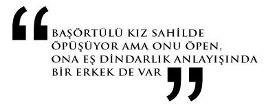

“Seküler dünyanın baskısı
Müslüman erkekleri
kompleksli yaptı”
Ayşe Böhürler
AYŞE BÖHÜRLER:
1963 yılında Kayseri’de doğdu. İlkokulu bitirdikten sonra İstanbul’a geldi. Erenköy Kız Lisesi’ni bitirdi. İstanbul Üniversitesi Gazetecilik ve Halkla İlişkiler Yüksek Okulu’ndan mezun oldu. Çeşitli sivil toplum kuruluşları ve girişimlerinde aktif roller aldı. 1992-1995 yılları arasında İzlenim dergisinde, daha sonra Aksiyon dergisinde “Aile ve Eğitim” bölümü editörlüğü görevini yürüttü. 1995 yılında Kanal 7’de çalışmaya başladı. Kadın, çocuk, eğitim, belgesel ve tartışma programlarının yapım-yönetiminde yer aldı. AKP’nin kurucuları arasında bulunan, partinin en üst karar organı Merkez Karar Yönetim Kurulu Üyesi Ayşe Böhürler, Yeni Şafak gazetesi köşe yazarı. Üç çocuk annesi.
“Muhafazakâr erkek, başı açık bir arkadaşıyla şakalaşabilir, dostluk kurar.
Başı açık kadının eve geç gitmesi sorun değildir, onunla belirli ortamlarda bulunmak sorun değildir. Ama aynı ortamlara bir başörtülü gittiğinde, aynı hareketleri bir başörtülü yaptığında, bu, soru işaretleri uyandırır.
Bu soru işaretleri bazen namusla ilgilidir, bazen hafiflikle, bazen karakter bozukluğuyla, bazen dini manada zayıflıkla ilgilidir.
Muhtelif soru işaretleri göz bebeklerinde geçer, görürsünüz…”
-Ayşe Hanım, muhafazakâr erkekler -birlikte çalıştıkları iş arkadaşları, sevgilileri, komşular vs. olabilir- başı açık kadınlara gösterdikleri hangi toleransları başörtülü kadınlara göstermiyorlar?
-Muhafazakâr erkeklerin geçmişteki yaklaşımı ile bugünkü yaklaşımları çok farklı. Bu soruyu 10 yıl önce cevaplıyor olsaydım, çok daha sert çizgiler, örnekler vardı. Bugün muhafazakâr erkeklerin başı açık kadınlar ile başı kapalı kadınlara davranışları arasındaki farklar azaldı. Ama tabii yine de bazı farklar var. Muhafazakâr erkek ya da kadın; bu kesimin yetişme koşullarını, daha ataerkil, kadın ve erkeğin daha ayrı yaşadığı ortamlar şekillendiriyor. Bu insanlar, sosyal hayatta muhafazakâr bir kadın ve erkeğin birlikte bulunmasını yadırgayan bir gelenekten gelmiş. Dolayısıyla erkek, iş hayatında karşısında muhafazakâr, kendi görüşünden gelen bir kadını görünce irkiliyor. Bilinçaltı düşüncesi ilk anda şu oluyor: “Bu, burada ne arıyor, bu kadar erkeğin içinde işi ne?”
-Muhafazakâr erkeğin başörtülü kadınla birlikte çalışması, 10 yıl önce nasıl cevaplanıyordu?
-28 Şubat öncesi ve sonrasında bu durum çok fark etti. 28 Şubat öncesinde Müslüman kadın ve erkek birlikte çalışmayı, iş arkadaşlığını bir noktaya getirmişlerdi. Oysa 28 Şubat ile “başörtülü iş arkadaşları” muhafazakâr erkeklerin daha dindar görünmesine sebep oldu. Bir manada başörtülü iş arkadaşları muhafazakâr erkeklerin fişlenmesine, etiketlenmesine sebep oldu. Fiziken durum şöyle: Herhangi bir müessesede başörtülü bir kadın yoksa o iş yerinin dindar birine sahip olup olmadığını anlamanız mümkün değil.
Hiç unutmuyorum; Taksim’de bir ofiste çok şaşkınlığa uğramıştım. Büyük bir ofisti. Fethullah Gülen cemaatine mensup ya da benim öyle olduğunu düşündüğüm birinin ofisiydi. Bir konuda çekim yapmak için oradaydık. Önümüzde “representer” olarak gayet hoş, mini etekli bir hanım vardı. Müessese sahibinin kimliğini anlayabileceğiniz hiçbir ipucu yok. Çekim için arkada bir oda açıldı. Oraya geçtiğimde ise bilgisayarların başında dört başörtülü kız gördüm. Bu benim için çok trajik bir şeydir. Sonra kızlarla da konuştum. Hepsi üniversite mezunu, eğitimli. Fakat belli ki işin mutfak kısmındalar. Ve “mini etekli hanımefendi” için açılan o kapı, onlar için çok kolay açılan bir kapı değildi. 28 Şubat sonrasındaki dönemde durum böyleydi. O korku ortamı neticesinde birçok yerde başörtülü kız işten çıkarıldı ya da böyle “saklandı.” Dindar erkekler ise yine de işlerini sürdürdüler. Yanlarında başörtülü olmayınca, sekreteri başörtülü olmayınca çok daha rahat çalışma imkânına kavuştular.
-Peki şimdi durum nedir?
-2000-2002 ile başlayan dönem ve 15 yıl öncesi arasında büyük fark var. Ama yine de şöyle bir gözlemim var. Muhafazakâr erkek, başı açık gazeteci arkadaşıyla (doktor, mühendis vs. de olabilir) birlikte çok fazla şey paylaşabilir, şakalaşabilir, dostluk kurar. Başı açık kadının eve geç gitmesi sorun değildir, onunla belirli ortamlarda bulunmak sorun değildir. Yani muhafazakâr erkeğin başı açık arkadaşına toleransı daha yüksek olan bir algısı söz konusudur. Ama aynı ortamlara bir başörtülü gittiğinde, aynı hareketleri bir başörtülü yaptığında, bu, soru işaretleri uyandırır. Bu soru işaretleri bazen namusla ilgilidir, bazen hafiflikle, bazen karakter bozukluğuyla, bazen dini manada zayıflıkla ilgilidir. Muhtelif soru işaretleri göz bebeklerinde geçer, görürsünüz. Bu tabii şimdi çok aza indirgendi.
-Bu düşüşe ne sebep oldu?
-Bunda bizim kuşağımızdaki kadınların, gençlerin çok büyük payı var. Kendi programını kendi yapan, gece 12.00’de eve giden, bir erkeğin hamiliğine ihtiyaç hissetmeyen daha özgür ruhlu başörtülü kızların, erkeklerin bu muhafazakâr tutumlarını takmayan ısrarlı tavırları, bu değişim sürecini hızlandırdı. Bu manada Kanal 7 deneyiminin çok önemli olduğunu düşünürüm. Yayınlardan sonraki tepki telefonlarını hatırladığımda bugünkü değişimin yönünü daha iyi görüyorum. “Müslüman bir kadın, bacak bacak üstüne atamaz”dan tutun seçilen kıyafet, televizyon çekiminin gerektirdiği cüzi makyaj dahi eleştiri konusu olurdu. İlk zamanlarda modacı bir arkadaşımın tasarladığı pantolon tunik takımla ekrana çıkmıştım. O takım bile eleştiri almıştı. İlk başladığım günlerde dışarıdan bakanlar şöyle derdi: “Orada nasıl çalışıyorsunuz; kızlarla erkekler dip dibe çalışıyormuş. Bu İslami mi?” Bu “İslami mi?” sorusu 2000’den önce çok daha fazla soruluyordu. 2000’den sonra tüm bunlar önemini kaybetti. Tabii çok kapalı cemaatlerden söz etmiyorum.
-Fakat 1990’lı yıllarda iş toplantısında size sırtını dönerek konuşan muhafazakâr erkekler olmuş, değil mi?
-1992 yılıydı, bir yayın kurulu toplantısına katılmıştık. İki beyefendi bizimle, sırtlarını dönerek konuşmuştu. Tabii bunda yetişme koşulları, o utangaçlık, kadınlarla birlikte vakit geçirmemiş olmanın etkisi var. En yakın gördüğü kadın annesi veya kız kardeşi. Bu yetişme koşullarını bir tarafa bırakamayız. Dolayısıyla bu, sadece dini algıyla ilgili bir şey değil. Mesela bir kadının yüzüne bakamayan çok dindar erkek tanırım. Aslında bu utanmayla da ilgili, bir kadının yüzüne bakmaktan utanıyor, sakınıyor. Bir manada bu takdir edilecek de bir şey bir taraftan. Bu tavırlar, 1990’lı yıllarda çokça gördüğümüz tavırlardı. 2000’li yıllarda bu tarz tavırlar kalmadı.
-Peki “2000’li yıllarda muhafazakâr erkekler kadınlara sırtlarını dönerek toplantı yapmıyor. Başörtülü çalışma arkadaşlarıyla rahatça ahbap oluyor. Ama yine de başörtülü kadınlara hâlâ mesafeliler” demek doğru mu?
-Tabii böyle bir durum var. Muhafazakâr erkek, başörtülü kadının tepkisinden korkuyor. Başörtülü kadın için, “Konuşsam bana cevap verir mi; elimi uzatsam sıkar mı?” gibi düşünceleri oluyor. Nitekim böyle başörtülü kadınlar var. Dolayısıyla muhafazakâr erkeklerde “Açık kadınlarla rahat konuşulabilir, rahat sohbet edilebilir, rahat arkadaşlık edilebilir. Ama başörtülü kadınlarla kolay kolay böyle arkadaşlık edilemez” gibi hissediyor olmalılar.
-Başı açık kadınlara “bacım” diye hitap etmeyip, onları flörte daha yakın bulmaları da bununla mı ilgili?
-Tabii başı açık birini yakınlaşmaya daha müsait görüyor. Yakınlaşmak için flört ettiğinde daha az tepki alacağını, karşı tarafın daha kolay sinyal verebileceğini düşünüyor. Başörtülü bir kadının sınırlarını muhafazakâr bir erkek elbette herkesten çok daha fazla biliyor. Ve o noktada başı açık kadınlarla birlikte olmayı tercih ediyor. Burada çok önemli bir konu var.
-Nedir?
-Sosyal hayatın tüm şekillenişi aslında siyasi algı ile doğrudan ilgili. Dindar erkekler başörtülü kadınlarla birlikte oldukları zaman kendilerinin deşifre olduğunu düşünüyorlar. O deşifreden dolayı sosyal ortamlarında ya da iş hayatlarında fazla başörtülü olsun istemiyorlar. Mesela iş adamlarının yemeklerine başörtülü eşlerini götürmemeleri. Rahmetli Hasan Doğan (görevi sırasında yaşamını yitiren Futbol Federasyonu Başkanı) eşi ile maça gittiğinde birkaç dindar işadamından şunu işittim: “Ya helal olsun! Biz bunca zaman ne kadar önemli işlerimiz oldu. Eşlerimiz başörtülü diye götüremedik.” Çünkü başörtülü eşi götürdüğü an deşifre oluyor. Etrafta da şöyle önyargılar var: “Başörtülü bir eş bir şey bilmez, cahildir, köy ‘background’una sahiptir, o sosyal ortama uyum sağlayamaz.”
-Dolayısıyla muhafazakâr erkekler, “Başörtülülere özgürlük, bu insanları evlerine kapanmak durumunda bırakmayın” deseler de onlar da bu duruma vesile oluyor.
-Doğru. Menfaatleri, işleri gibi sebeplerle bu duruma vesile oluyor. Bu manada ben Başbakan’ın, Cumhurbaşkanı’nın eşleri ile birçok yere birlikte gitmelerini önemsiyorum. Çünkü kadın, bir başörtülü olarak eşinin yanında kendini temsile layık hissediyor. Birçok erkek, “Sen böyle bir temsile layık değilsin. Benim yanımda bulunamazsın” duygusunu veriyor başörtülü kadına. Böyle bir tabunun kırılmasında Emine Hanım’ın, Hayrünnisa Hanım’ın ve bakan eşlerinin büyük etkisi var. Kadınlarda, “Başörtülüyüm ama eşimin yanında onu temsil edebilirim” algısını oluşturuyor. Daha önce böyle bir rol model yoktu.
-Muhafazakâr erkeklere göre başörtüsü sizin kaçıncı kimliğiniz?
Birincil kimlik. İlk önce sizi bir başörtülü olarak algılıyor. Daha sonra kendi davranışlarınızla, kendi kimliğinizi oluşturabilirsiniz.
-Siz, “Modern olmak için illaki başı açık olmak gerekmiyor” diyorsunuz. Sizce muhafazakâr erkekler başı açık olmayı modernlik kriteri olarak buluyor mu?
-Elbette başı açıklığı modernlik kriteri olarak görüyor. Ofisinde başı açık biri olmasının onu da daha modern yaptığını düşünüyor. Seküler dünyada insanların nasıl önyargıları varsa muhafazakâr erkeklerin de başörtülü konular hususunda benzer önyargıları var. Hatta bazen onlarda çok daha fazla önyargı var.
-Nasıl önyargılar?
-Başörtülü olmanın modern dünyayla çok bağdaşmayan bir şey olduğunu düşünüyorlar. Tabii sözde değil elbette. Ama uygulamaya baktığınızda modern olma koşulunu kadın açısından başı açık olmakla özdeşleştiriyorlar. Erkeklerin görünümlerinde “Bu dindar bir erkek” diyebileceğiniz bir ipucu yok. Takım elbisesini giyiyor, kravat takıyor, 28 Şubat’tan sonra birçok erkek zaten bıyığını, sakalını kesti. Bir erkeğin dindar olduğunu dış görünümüne bakarak nereden anlarsınız; elinde gümüş yüzük varsa, içkili bir ortamda içki almıyorsa… Oysa bir kadın için durum böyle değil. Başörtünüzü örttüğünüz anda bütün o toplumsal önyargıların içindesiniz. İsterseniz dünyanın en modern, en stil sahibi, en hoş giyinen kadını olun, başınızı örttüğünüz anda bütün başörtülüler aynı kategoriye giriyor.
-Nasıl bir kategori bu?
-Eğitimsiz, sosyal hayattan uzak, antimodern vs. Bu önyargılar elbette dindar erkeklerde de var. Onlar da başörtülü kadınların iş dünyasını bilmediklerini, sosyal alanda acemi olduklarını düşünüyorlar. Eğitimlerinden kuşku duyuyorlar. Son derece eğitimli ve kariyer sahibi başörtülü bir kadınla onun yarısına sahip bir dindar erkeğin hayat çizgilerini kıyaslayın. O çok kariyerli, başörtülü kadın kendinden düşük seviyedeki bir dindar erkek karşısında sürekli kendini ispat etmek zorunda bırakılır. İş görüşmelerinde bunu çok hissederim. O kadar vasat insanlarla muhatap oluyorsunuz ki çoğu zaman. Fakat o vasatlıklarıyla onlar bir mevkiye gelebiliyor. Ama çok daha donanımlı kadın bir yere gelemiyor.
- Bir varsayım: Reklam ajansı sahibi muhafazakâr bir patron, kariyer ve eğitimleri denk iki genç kadının iş başvurusunu, başı açık olanı işe alarak sonuçlandırıyor. Bu örneğe şaşırır mısınız?
-Bu çok gerçek ve yaygın bir realite.
-Ama bunu yapan “Başörtüsüne özgürlük” diyen muhafazakâr bir erkek ise…
-Şöyle düşünün: İş dünyasında başörtülüyü işe alırsa deşifre olacak. Oysa o deşifre olmak istemiyor, önyargıyla karşılaşmak istemiyor. Muhafazakâr erkekleri böyle davranmaya biraz da seküler dünya itiyor.
-Bu durum onları aklar mı?
-Muhafazakâr erkekleri aklamak anlamında söylemiyorum bunu. “Muhafazakârım, kendim gibi düşünen birini işe alayım” gibi bakmıyor mevzuya. Kapitalist dünyanın yaklaşımı içinde işini risksiz götürmek istiyor. Başı açık bir kadını sosyal ortamda birlikte çalışma imkânı açısından daha kolay buluyor. Muhafazakâr erkeklerin değişiminde Türkiye’deki seküler dünyanın baskıcı yaklaşımını göz ardı etmemek lazım. Erkeklerin başörtülü ve başörtüsüz kadınlara gösterdiği çifte standartlarda onların da etkisi var. Bunu yok sayarak muhafazakâr erkekleri eleştirmek doğru bir yaklaşım değil. Bu tespitlerimin hiçbirinde suçlayıcı değilim. Öyle bir yaklaşımı doğru bulmuyorum. Meseleye insanı anlamaktan bakıyorum. Dini, “Daha adil olmak” olarak gördüğüm için dindar erkeğin daha adil olmasını bekliyorum. Fakat şunu da söylüyorum: Seküler dünyanın baskısı Müslüman erkekleri kompleksli yaptı. Burası bir realite. O kompleksin dışavurumlarıdır bunlar.
-Bıyıkların kesimi de bu kompleksin yansımalarından biri mi?
-Uyum sağlamak diyelim ona. Ayakta kalmak, kendini kamufle etmek, deşifre olmamaya gayret etmek. Modern dünyanın insanının bunalımları var elbette. Modern dünyanın içinde dindar olan insanların -kadın ya da erkek- bunalımları, çelişkileri var. Bıyığı kesmek bunların bir parçası.
-“Kadın-erkek ilişkilerinde kişinin kendini ‘daha kadın’ ya da ‘daha erkek’ hissetmesi karşı cinsin ona hissettirdikleri ile doğrudan ilişkilidir” bakışı eşliğinde soralım: Muhafazakâr erkek başörtülü kadına “bacım/abla” diyerek ondan “kadınlık” kimliğini alıyor mu?
-“Alıyor” dersek o zaman evlilik yapamazlar.
-Somutlaştırarak soralım: Başı açık ve son derece şık giyimli bir kadına iş yerinden bir erkek arkadaşı, “Çok hoşsun bugün, gözlerimi alamıyorum” diyerek kompliman yapıyor. Benzer bir komplimanı muhafazakâr erkek başörtülü kadına yapabiliyor mu?
-Bu manada çok dişice değil belki ama benzer tonlarda diyaloglar elbette var. Sonuçta örtünün dişiliği kapatan bir tarafı var tabii ki.
-Şöyle bir tespit var: “Muhafazakâr erkek ‘bacım’ söylemi ile başörtülü kadını dişi kimliğinden uzaklaştırırken, aşık olunacak kadını başı açık olanlardan seçiyor.” Bu bakışa katılıyor musunuz?
-Aşık olunan, flört edilen birçok başörtülü kadın var. Fakat şöyle bir durum da var: Muhafazakâr erkek âşık olduğu kadını aynı zamanda sosyal ortamda da yanında taşımak istiyor. Ve başörtülü bir kadını götüremeyeceği yerler var. Dindar erkeğin geçirdiği bir dönüşüm var. Gittiği yerler, yemek yediği yerler, tatil yaptığı yerler değişti. Tabii burada tüm muhafazakâr erkekleri genellemek de doğru değil. Başörtülü kadını taşıyabileceği yeri sınırlı olarak görüyor. Papermoon’a başörtülü bir kadınla gitmek yerine elbette başı açık bir kadınla gitmeyi tercih eden bir sınıf da var. Sonuçta dindar erkek bir sınıf atladı.
-Ya dindar kadın?
-Eş statüsünden elbette. Eşleri ile birlikte o sınıfsal durumu yakalayanlar var. Ben dindar biri olarak sınıf yaklaşımını reddeden biriyim. Sınıf atlama gibi bir çaba dindarlıkla bağdaşan bir şey değil. Dindar kadının sınıf atlama gibi bir talebi olmasını dindarlığın doğasına aykırı bulurum. Erkeğinkini nefsinin peşinde koşmak olarak gördüğüm için daha farklı yorumluyorum.
-Sizce hangisi daha büyük bir değişim geçirdi: Başörtülü kadın mı, muhafazakâr erkek mi?
-İkisi de büyük değişim geçirdi. Hep kadınların ve başörtüsünün değişimi konuşuluyor. Ama ben muhafazakâr erkeklerin de çok büyük bir değişim geçirdiğini düşünüyorum.
-“Başörtüsü de değişim geçirdi” dediniz. Eğer ben bu konuşma başladığından bu yana başörtüsü yerine türban deseydim, kurduğumuz iletişim ne yönde değişirdi?
-Ben türban sözünü sevmiyorum ve kullanmıyorum. Bizim örtümüz başörtüdür. Dindar Müslümanlığın gereği olarak taktığımız örtüdür.
-Türban dediğim için iletişimimizin seviyesi düşer miydi; yakınlığı azalır mıydı?
-Türban ön yargılı, siyasi tartışmalara götürülen bir kavram olduğu için elbette iletişimimizi etkilerdi. Ama sürekli kendimizi anlatmaya, aynı şeyleri binlerce kez söylemeye çok alıştık. O yüzden türban demeniz iletişimimizi çok da etkilemezdi.
-Muhafazakâr erkek flört ettiği kadına, “Merak ediyorum. Saçların ne renk?” diye sorabilir mi?
-Sorabilir. Niye sormasın ki? Tabu bir şey değil, sorabilir diye düşünüyorum. Mantıklı olarak sormaması için bir neden yok gibi gözüküyor.
-Benim size “Saçınız ne renk?” diye sormam abes olur mu?
-Olur, çünkü elinize ne geçecek diye düşünürüm. Flörtte durum farklıdır. Karşılıklı başka bir algı söz konusudur. Ama böyle bir diyalogda saçımın rengini öğrenseniz ne olacak, öğrenmeseniz ne olacak, diye düşünürüm. Dindar olmak zaten sizin dişi vasıflarınızla değil, başka özelliklerinizle tasvip edilmenizi uygun görür. O yüzden böyle bir soruyu manalı bulmam. “Vay saçımın rengini söyledim, deşifre oldum” gibi bir kaç-göç haline de girmem.

-AKP’nin kurucuları arasındasınız. Geçen süreçte parti içinde “kadına bakış” ne ölçüde değişti?
-Bugün geldiğimiz noktada çok dostluklar ortaya kondu, birlikte çalışma becerisi gelişti, kadınlarla çalışma tecrübesi hiç olmayan erkek siyasetçilerin literatürü gelişti. Eskiden bir kadın milletvekiline, yöneticiye çok daha fazla direniş gösteriyorlardı. Bugün evrensel standartlara uymanın kadın-erkek eşitliğinden gelen bir unsur olduğuna dair bilinç yükselmesi oluştu. Bir değişim var. Ama biz de yorulduk. Ben kendimi çok yorgun hissediyorum. Siyaset ne olursa olsun her parti için çok erkek egemen bir şey. Parti ilk kurulduğu yıllarda kadınlara yönelik yenileşmeler açısından daha çok heveskârdım. Ama zamanla bir şekilde yoruluyorsunuz, sürekli aynı şeyi anlatmak, izah etmek... Erkek dünyasının binlerce yıllık taşıdığı o hükmetme, iktidar geleneğinin çok kolay yıkılamayacağını görüyorsunuz.
-AKP’nin Merkez Karar ve Yönetim Kurulu’nun (MKYK) 14 kadın üyesinden yedisinin başı açık. MKYK’da başörtülü üyeler için “Şunların sayısını daha az tutsak” diyen üyeleri de biliyoruz…
-Onu diyenler, konuya şöyle bakıyor: “Biz İslami bir parti değiliz. AK Parti başörtülü eş ya da başörtülü üyelerle fotoğraf verdiğinde bu parti İslami bir parti olarak algılanıyor.” Oysa AK Parti’nin hiçbir programında, tüzüğünde dini bir atıf yoktur.
-Aynı partinin en yüksek icra organında birlikte siyaset yaptığınız insanların bir kısmı “Şunların sayısını azaltalım” diyor. Bunu nasıl kabul ediyorsunuz?
-Bu kabul etmek değil… Onu zaten son derece menfaatçi bir yaklaşım gibi görüyor. Çünkü, “Bu bize zarar verir” diyor. Orada aslında başörtülü görüntüye itirazları var. Sayısını azaltmaya değil de başörtülülerin ön planda görünmesine itiraz var. Bugün bu eskisi gibi değil. Ama yine de siyasettekiler fazla başörtülü bir resim vermek istemez. Çünkü karşı tarafın, daha Kemalist tarafın buna inanılmaz bir alerjisi var. Onların reaksiyonu partiye zarar verir diye düşünülüyor.
-Muhafazakâr erkekler ile ilgili en çok tartışılan şeylerden biri de çok eşlilik.
-Çok eşlilik sadece dindarlara özgü bir şey değil. Erkeklere özgü bir şey poligami. Modern toplumda adı “metres, aldatma, günübirlik ilişki” oluyor. Fransa’da adam karısının üzerine bir ilişki kurduğunda, adı aşk oluyor, burada adam karısının üzerine âşık olduğunda ikinci evlilik, üçüncü evlilik şekline dönüşüyor. Burada asıl mesele bunun dini bir şekle sokulup imam nikâhıyla legalleştirilmesi. Benim açımdan tartışılması gereken şu: Bir erkeğin çok eşliliği dini midir, değil midir?
- Sizce muhafazakâr erkek resmi nikâhlı oldukları eşlerinin dışında bir kadınla ilişkiye girdiklerinde bunu hâlâ imam nikâhıyla legalleştirme gereği hissediyor mu?
-Hiç bilmiyorum. Ama çok eşliliğe razı olan kadınlar var. O kadınlar bazen açık kadınlar oluyor, bazen kapalı kadınlar oluyor. Çok eşliliğe razı olan kadın ve erkeği birlikte konuşmak gerek. Sadece muhafazakâr erkeği suçlamanın anlamı yok.
-Siz ikinci eşi kabul eden bir kadın mısınız?
-Hayır. Ben bunun dini bir şey olduğunu da düşünmüyorum. Bu konuda elbette cevaz veren bir hüküm vardır. Ama diğer taraftan Allah’ın tavsiyesinin tek eş noktasında olduğunu düşünürüm. Ama yapan kişiye de, “Sen dinden çıkmışsın!” gibi bir şey söylemeyi doğru bulmam. Çok özel, şahsi şeyler bunlar. Kimse kimsenin kalbine hükmedemez. Kimi seveceğini, kimden hoşlanacağını söyleyemez. Evlilik dediğiniz şey de yıkılmaz değildir. Bir gün gelir biter. Aşk duygunuz biter. Her şey bitebilir. Bütün bunların hepsi son derece insani durumlar. Eğer konuştuğumuz tüm bu konularda gerçek, köklü bir değişim olacaksa bunu başörtülü kadınlar ortaya koyacaklar. Nitekim zaten bugün sosyal hayattaki değişimde onların büyük katkısını görüyoruz.
“Erkekler başörtülü
kadınları
oyunda bir jeton
olarak kullanıyorlar”
Merve Kavakçı
MERVE KAVAKÇI:
Merve Safa Kavakçı, İslam Hukuku Profesörü Yusuf Ziya Kavakçı ile Alman Dili ve Edebiyatı okutmanı Gülhan Kavakçı çiftinin en büyük kızı olarak 1968’de Ankara’da dünyaya geldi. Çocukluğu İstanbul, Erzurum’da geçti. Lise eğitimini Ankara TED Koleji’nde aldı. Türban yasağı nedeniyle Ankara Üniversitesi Tıp Fakültesi’nden ikinci sınıfta ayrıldı. ABD’de Texas Üniversitesi’nde Bilgisayar Mühendisliği okudu. Türkiye’ye döndükten sonra Refah Partisi ve Fazilet Partisi Hanımlar Komisyonu’nda Dış İlişkiler Başkanı olarak görev yaptı. 1999 genel seçimlerinde İstanbul 1. Bölge’den milletvekili seçildi. Yemin törenine türbanıyla gelen Kavakçı nedeniyle yaşanan kriz, dönemin Başbakanı Bülent Ecevit’in Meclis kürsüsündeki “Bu hanıma haddini bildirin!” sözleriyle Türkiye’nin gündemine oturdu. “Türkiye Cumhuriyeti vatandaşlığı kaybettirilerek” milletvekili seçilemeyeceğine hükmedildi. 1999 yılında ABD’ye yerleşen Kavakçı Harvard Üniversitesi’nden Kamu Yönetimi Yüksek Lisansı, Howard Üniversitesi’nden Siyasal Bilim Doktorası aldı. George Washington Üniversitesi Uluslararası İlişkiler Fakültesi Öğretim Üyesi Merve Kavakçı, “2010 Yılı Dünyada Kim Kimdir?”e seçildi. Yeni Akit gazetesi köşe yazarı Kavakçı, 18 ve 19 yaşında iki kız çocuğu sahibi.
“Başörtülü kadınların kamusal alana girmesine, kendilerine orada bir ‘yuva’ bulmalarına muhafazakâr erkek hâlâ razı değil.
Muhafazakâr erkeklerin başörtülü kadınlarla ilişkileri iki katmanlı bir problem teşkil ediyor.
Rejimden doğan sorunlar ve İslam’da kadının konumu endeksli tartışmalardaki sorunlar.
Pragmatist siyasette başörtülü kadın oyunda bir kart haline geliyor.
‘Biz şu alanlara girelim, yükselelim. Karşılığında kurban olarak, size başörtülü kadınları verelim’ dercesine adeta…”
-Siz, 11 yıldır ABD’de yaşıyorsunuz, Türkiye’ye çok sık gelip gidiyorsunuz. Gözlemlediğiniz değişimler neler?
-Türkiye ile temasını kesmeyen dışarıdan bir gözle, değişimi burada yaşayanlardan daha iyi gözlemleyebildiğimi düşünüyorum. Sadece muhafazakâr kesim için değil toplumun geneli için bence durum şöyle: Türkiye daha açık, daha vokal bir toplum. Diğer yandan dindar bir kadın olarak dikkatimi çeken şeylerden biri, başörtülü sayısının çok artması. Başörtü gençlere indirgenmiş, çok çeşitlenmiş. Homojen bir başörtülü topluluğu yok. O kadar farklı ki… Bu güzel bir şey. Tabii o çeşitlilik farklı tesettür yorumlarını da beraberinde getirmiş. İşte buna şaşırıyorsunuz.
-Başörtülü kadınlarla ilgili en çok şaşırdığınız şık nedir?
-Şaşırmak değil, beni şoke eden şeylerden biri başını örten ama namaz kılmayan insanlar. Bu çok büyük bir oksimoron-paradoks. İçsel bir çelişki. Üzücü bir durum. Başörtüsü eskiden belli bir hayat tarzının ölçüsüydü. Bunun artık böyle olmadığını görüyoruz. Aslında bir yerde kendi kendimizi kandırmış oluyoruz diye düşünüyorum.
-Aslında kimi akıllardan da şu geçiyor: “Kadınlar ya da genç kızlar bu örtünme modasına uyum sağlıyor.”
-Olabilir. Herkesin kendince sebepleri olabilir. Farklı şekillerde de örtünebilirler. Ancak tesettürün olmazsa olmazları ve tesettürün temel amacı göz ardı edilmemeli. Böyle olması beni en fazla rahatsız eden şeylerden biri.
-Ya muhafazakâr erkeklerdeki değişim?
-Dışarıdan bir gözlemci olarak erkeklerde daha köklü, daha tehlikeli bir değişim olduğunu düşünüyorum. Görünüşteki, elbiselerdeki değişimden söz etmiyorum. Bazı semboller, sembolik değerlerinin ötesinde, farklı anlamları da beraberinde taşırdı eskiden. Oysa şimdi neredeyse öyle değil. Onun için erkeklerdeki değişimi daha çok önemsiyorum.
-Muhafazakâr erkeklerin değişiminde tehlikeli bulduğunuz yön nedir?
-Muhafazakâr erkeklerin bir kısmında “ehemle mühimi karıştırmak” diye bir sıkıntı olduğunu düşünüyorum. Bunu, temel değerlerden sapma gibi değerlendirebiliriz. Türkiye’de muhafazakâr kesimde gördüğüm en önemli sıkıntılardan biri şuna dayanıyor: Entelektüel anlamda temel doğrulardan sapma olması ve bunun mantıklı gibi gözüken açıklamalarla rasyonalize edilmesi, kendilerince meşruluk kazandırılması veya kazandırılıyor gibi gösterilmesi.
-Bunu örneklendirir misiniz?
-“Bu zamanda olması gereken bu; başka ne düşünülebilir” gibi meşruluk kazandırma gayretleri. Şöyle: Muhafazakâr insan için var olmak dini bir bağlama oturtulmuştur. Siz bana kim olduğumu sorarsanız, “Eski bir siyasetçiyim, anneyim, öğretim üyesiyim, kadınım” demem. “Müslüman bir kadınım” da demem. “Ben bir Müslümanım” derim. Diğerleri benim alt kimliklerimdir. İşte Türkiye’deki muhafazakâr kesimin genelinde burada sorun görüyorum. Dindar insanların sosyal ya da siyasal alanlardaki tavizkâr tutumlarının bununla ilgisi var diye düşünüyorum.
-Yani ilk önce “Ben Müslümanım” demek yerine “Ben şu partinin üyesiyim, şu kurumun müdürüyüm” gibi bir ifadeye mi işaret ediyorsunuz?
-Bu bir Müslüman için kendini tanımlandırma ve konumlandırma sorunu. Bu konuda muhafazakâr kesimde bir yozlaşma görüyorum.
-Konuştuğumuz başörtülü kadınlardan genellikle “Muhafazakâr erkek için başı açık kadın moderndir” cümlesini duyduk. Bu değerlendirmeye katılıyor musunuz?
-Modernlik ve başı açık olmak ile doğrudan bağ kuran bir muhafazakâr erkek, rejimin öğrettiği “olması gerekenler” ve “olmaması gerekenleri” kabul etmiş, pes etmiştir. Modernliğin başı açıklıkla ilişkilendirilmesi rejimin en büyük sosyolojik sorunlarından biridir çünkü. Onun için ben Meclis’e girdiğimde rejim şok yaşıyor: “Bu kadın bizim çizdiğimiz çerçevenin dışında bir başörtülü. ‘Modern’ kadın için ortaya koyduğumuz özelliklere sahip. Hatta birçok alanda ultra modern sayılabilir… Ankara Koleji’ni bitirmiş, Amerika’da okumuş, paten yapıyor, araba kullanıyor, iki çocuğuyla yaşayan bir kadın.” Ama “Aaa bir problem var: Başörtülü!” Bu bakıştaki sorunu, aynen muhafazakâr erkekte de görüyorsunuz. Muhafazakâr da sonunda bunu böyle kabul ediyor, başı açıklıkla modernlik arasında doğrudan bir ilişki kuruyor. Benim modernizasyonun tek tip olması ön kabulüyle sorunum var. Rejimin empoze ettiği bu çifte standartlı modernizasyon, özellikle 1990’lardan sonra orta sınıfın oluşması ve bu sınıfın içinde muhafazakâr insanların artmasıyla daha da barizleşti. Benim gibi eğitimli, başörtülü, meslek sahibi kadınlar rejim için bir sorun teşkil etti. Üstelik bu, sadece rejim için değil muhafazakâr toplumda da sorun sayıldı. Erkeklerin değişimi hem rejim, hem muhafazakâr toplum tarafından kabullenildi, normal bir dönüşüm addedildi.
-Muhafazakâr erkek sosyal çevre değiştirirken, kadının bu çevrenin dışında tutulması bununla ne kadar ilgili?
-Başörtülü kadınların yavaş yavaş kamusal alana girmesine, kendilerine orada bir “yuva” bulmalarına muhafazakâr erkek hâlâ razı değil. Tabii kadınları belirli bir yerde durağanlaştırmak sadece muhafazakâr erkeklerin yaptığı bir şey değil, rejim de bunu yapıyor, din eksenli tartışma alanındaki tıkanıklık da buna yol açıyor. Yani muhafazakâr erkeklerin başörtülü kadınlarla ilişkileri iki katmanlı bir problem teşkil ediyor. Biri rejimden doğan sorunlar, diğeri de İslam’da kadının konumu endeksli tartışmalardaki sorunlar.
-Şimdi tam burada, “O tarihte Merve Kavakçı olayı patlak vermeseydi, başörtülü kadınlar daha çok temsil hakkına sahip olacaktı” fikrindeki eski bir siyaset arkadaşınız hakkında ne düşünürsünüz?
-Bu görüşe hiç katılmıyorum, kaale de almıyorum. Başörtüsü sorunu ne benimle başladı, ne de benimle bitti. Benim milletvekili olarak seçilmem başörtü discourse’una (söylemine) bakıldığında çok geç bir hadiseydi. Bizim muhafazakâr toplumumuz başörtülüleri görmezlikten geldi. 1986 senesinde Ankara Üniversitesi Tıp Fakültesi’nde birinci sınıf öğrencisiydim. Okulun yakınındaki Abdi İpekçi Parkı’nda açlık grevi yaptığımızda muhafazakâr erkeklerimiz bize dönüp bakmadı.
-11 yıl öncesine dönsek… Meclis’e girmenizden sonra partiniz (Fazilet Partisi) bir basın toplantısı yaptı ve “Merve Kavakçı’nın arkasındayız” dedi. Fakat takibindeki süreçte partiniz arkanızda durmadı.
-Doğru. Şunu açıkça ifade edeyim: Ben orada sakallı bir erkek olsaydım, bu böyle olmazdı. Kadına karşı olan bu çifte standart sadece muhafazakâr olmayan erkeklere özgü değil. Bana haddimi bildirmek isteyenler sadece beni hedef aldılar, benimle beraber aynı partiden, aynı dünya görüşüyle çalışan hiçbir erkeği hedef almadılar, böylece bir çifte standart gösterdiler, muhafazakâr erkekler de aynı çifte standardı gösterdi.
- O dönem siz Meclis’e girmeden önce Recep Tayyip Erdoğan, “Partin arkanda durmayabilir”, Abdullah Gül ise, “Başörtünü çenenin altından bağlasan iyi olur” önerilerinde bulunmuş. Bugün bu önerilere nasıl bakıyorsunuz?
-Aynı gerçekliği taşıyorlar. Bugün başörtülü bir kadın Meclis’e girse, partisi arkasında durur mu, sanmıyorum. Aslında burada çok önemli bir şey var. Türkiye’de birçok konuda değişim yaşandı. Ama başörtü sürecinde bir gelişim değil aksine bir gerileme var. Çene altından bağlamaya gelince… Bugün herhalde bunu teklif edecek bir muhafazakâr erkek yoktur artık.
-Neden?
-Çünkü çene altı da çok sembolik, tek tipleştirici bir yöntem haline geldi. Biz biliyoruz ki nereden bağlanırsa bağlansın, sen başörtülü bir kadınsın. Ağzınla kuş tutsan profesyonel kimliğinle bir yere giremezsin. Bu konuda bir gelişme yok, hatta gerileme var.
-Erdoğan, Cumhurbaşkanı olsaydı başörtüsü sorunu ile ilgili daha farklı bir çözüm olur muydu sizce?
-Hayır, ben Sayın Başbakan ve Sayın Cumhurbaşkanı arasında siyasal duruş açısından bir fark görmüyorum.
-AKP’nin Merkez Karar Yürütme Kurulu’nda (MKYK) 14 kadın var. Bu 14 kadından yedisinin başı kapalı. MKYK üyesi Ayşe Böhürler ile yaptığımız söyleşide “Partinin başörtülü fotoğraf vermekten yana olmadığını” duyduk. Sizce muhafazakâr erkek en azından siyaset içinde ne denli değişti?
-Siyasal veya toplumsal açıdan baktığımızda başörtüsüyle kötüye giden bir değişim, daha doğrusu gerileme var. Ben Meclis’e girdiğim zaman başörtülü bir kadının profesyonel olarak kamusal alanda bulunmasıyla, milletvekili olarak var olabilmesiyle ilgili bir tartışma vardı. Oysa bugün kamusal alanda bulunan erkeğin yanında başörtülü eşi bulunsun mu, bulunmasın mı tartışması yaptık. Cumhurbaşkanlığı seçiminde, Merkez Bankası Başkanlığı seçiminde bu konuşuldu. İster hürriyet, ister demokratikleşme açısından bakın, bu müthiş bir gerilemedir. Muhafazakâr erkekler de bu gerilemenin bir parçasıdır.
-Erkekler sahip oldukları “iktidar-güç” çoğaldıkça başörtülü kadınların durumuna dair bu gerilemeye razı mı oluyor?
-Tabii. Çünkü bir token (jeton) olarak kullanıyorlar, rejim ve muhafazakâr erkek egemen siyasi toplum için.
-Başörtülü kadın mı jeton?
-Evet, başörtülü kadın oyunda bir kart haline geliyor pragmatist siyasette. “Tamam biz şu alanlara girelim, yükselelim. Karşılığında kurban olarak, size başörtülü kadınları verelim” dercesine adeta. Alan memnun, satan memnun. “Onları görünmez kılarız, onlar belirli alanlarda yine olmazlar” anlayışı da denebilir. Zira sonuçta öyle oluyor. Burada şunun altını çizmek istiyorum: Bu sadece muhafazakârlıkla ilgili bir sorun değil, rejimle ilgili bir sorun. Ayrıca İslam dünyasında “kadının yeri” ile ilişkili bir şey. Muhafazakâr kadının toplumsal hayata katılımı nasıl olmalı; bu konuda İslam dünyasında zaten bir ağrı, sıkıntı var. Bir de buna Türkiye’deki özel nedenlerle muhafazakâr erkeklere özgü sıkışmışlık eklenince iş böyle oluyor. Şurası çok önemli: Tüm bunlara rağmen Türkiye’deki başörtülü kadın, içinden çıktığı muhafazakâr toplumdan daha çabuk gelişti, değişen dünya şartlarına daha çok adapte oldu. Yürüdü ve gitti. Muhafazakâr toplum buna tam da yetişemedi. Böyle olunca siz kimseye yaranamayan bir yaratık haline dönüşüyorsunuz başörtülü bir kadın olarak. Dış görüşünüz itibariyle laik kesim için gerici bir kadınsınız. Muhafazakâr kesime göre de çok büyük bir değişimden geçtiniz, başörtülü kadının olması gereken yerde, evde değilsiniz.
-“Başörtüsüne Özgürlük” diyen ama kadının olması gerektiği “sınırları” çizen siyasetin içindeki erkeklerin kadınlara uyguladıkları en büyük çifte standart nedir?
-Siyasal bilimci olarak bulduğum bir tabir var: “Democratization of mind” yani “aklın demokratlaştırılması”. Erkekler bu süreçte, “Herkesin özgür olması lazım. İnsanlar eşit haklara sahip olmalı. Başörtülü de öyle olmalı, başı açık olan da” şeklinde düşünmeye başladılar, bunu içselleştirdiler. Ama bir Müslüman olarak henüz o bakışta değiller. Mesela dini çerçevede kadının olması gerektiği yer konusunda hâlâ gelişme gösteremediler. Demokratikleşmeleri son derece seküler. Bir Müslüman olarak (entelektüel anlamda konuşuyorum) kadınla ilgili olarak yormaları gereken zihni henüz yormadılar. İslam’da kadın sorusu, sorunuyla ilgili yol kat etmediler. Bu bir çelişki oluşturuyor. Tabii tüm bu yorumlarımdan bağımsız, Türkiye’de sadece dini anlamda değil her alanda kadının varlığına inanan ve bunu uygulayan erkekler var. Ancak bunlar istisna kabul edilebilir.
-Zamanında Fazilet Partisi’nde sizinle siyaset yapan, şu anda hükümette etkin görev alan erkekler, sizinle beraber fotoğraf verebilecek kadar demokratikleşti mi?
-Beni sembolik olarak kullanıyorsunuz.
-Evet.
-Hayır, veremez. Çünkü rejimin bu kişiler üzerinde oluşturduğu baskı ile başörtülü kadının tek tipleştirilmesi onlar tarafından son derece özümsendi. Bir yerde “Kardeşimiz, bacımız, kızımız okula giremiyor, şuraya giremiyor” diye ağıt yakmaya devam ediyor. Öte yandan bu sonuçları kanıksıyor. Mesela muhafazakâr erkeklerin yönettiği farklı kurumlarda görev alan başörtülü hanımları görüyorum. Bu kadınlar işe alınıyor, görevlendiriliyor, çalıştırılıyorlar; diğer yandan başörtülü fotoğraf vermekten imtina ediliyor. O hanıma görev veriyorsunuz, ama basın toplantılarında, uluslararası toplantılarda onları birer birer çıkarıyorsunuz. Bunu da, “Karşı tarafın, rejimin bu meseleye bakışını biliyorsunuz” veya “Bizi sıkıntıya sokmayın” diyerek gerekçelendiriyorsunuz. Hak ne oldu, hukuk ne oldu? Ya kul hakkı? Bundan söz eden olmuyor. Onun için bu mesele erteleniyor, erteleniyor. Gün geçtikçe daha da kötü hale geliyor. Bu arada başörtülü kadınlardaki olumlu değişim her an devam ediyor. Bir gün gelecek bu kadınlar patlayacak. Bu kadınları daha fazla nasıl bir konteynerin içinde tutabilecekler, bilmiyorum.
-Kadınlar muhafazakâr erkeği “güçlendiren” ama kadını hâlâ “özgürleştirmeyen” partilerden hesap sorabilecek mi?
-Hesap soracakları zaman gelecektir muhakkak. Çünkü bu kendi fikirlerinizi başkasına empoze etme sorunu değil, bir var oluş sorunu. Bu bir yerden bir patlak verecek. Ya başörtülü kadınlar lokomotif olup, toplumu belirli bir yere çekip, erkekleri güncelleyecekler ya da bu iş bir patlak verecek.
-“Gel beraber siyaset yapalım” teklifi alsanız kabul eder misiniz?
-Zor bir soru bu. Tek tük, göstermelik, vaziyeti kurtarma babında bir hareketin içinde olmam. Benim düşüncem, “Merve gel, siyaset yap”tan değil, siyasetin içinde Merveler olmasından yana.
-Başörtülü kadınların yaptığı bir değerlendirme de şu: “Artık başörtülü genç kız iyi bir üniversite mezunu olsa bile geleceği parlak bir muhafazakâr erkek için makbul eş adayı değil.”
-Maalesef doğru bir tespit. Ben de bunu görüyorum. Bunun iç içe geçmiş, katmanlı sebepleri var. Bir: Başörtülü kadının rejim tarafından tehdit olarak görülmesi sebebiyle muhafazakâr erkeğin -ki bu bir de yükselecekse- ona eşlik edecek kadının başının açık olması zorunluluğunu hissetmesi. İkinci nedende iki şık var: Sosyolojik ve dini algılar. Sosyolojik anlamda muhafazakâr erkek başörtülü ve tahsilli kadına nasıl davranacağını bilmiyor. Rejimin, “Başı açık eşittir modern kadın” algısı nedeniyle muhafazakâr erkeğin bilinçaltında başı açık kadına karşı bir hayranlık algısı gelişiyor. Onun içindir ki aynı konumda çalışan bir başörtülü, bir başı açık iki kadından; başı açık olanın mesleki tecrübeleri beraber çalıştığı erkekler tarafından örtülü kadınınkine nazaran daha takdire şayan bulunuyor. Dinsel anlamdaki sorun da şu: İslam’da kadının konumu global bir tartışmanın parçası. İslam dünyasında nereye bakarsanız bakın, İslam’ın ilk yıllarından bu yana kadının genel manada konumunda bir gerileme olduğunu görüyoruz. Erkek bu noktada bir çelişki yaşıyor.
-Nasıl bir çelişki bu?
-Muhafazakâr erkek yanında başörtülü kadın varsa “Acaba rejim ne der?” sorununu yaşamıyor. “Rejimin gözünde karımın nerede olduğunu biliyorum ama dinde karımın yeri nedir, ne olmalıdır? Çalışması, eve ekmek getirmesi uygun mudur?” Erkek bunu da yaşıyor. Tabii böyle olunca hiçbir yol kat edemiyorsunuz. Kadının eğitimli olması, ata binmesi, tahsilli olması... Bunları yapan, bu olumlu değişimi geçiren başörtülü kadınlarla muhafazakâr kesim ve o kesimin erkekleri arasında bir diyalog bozukluğu oluşturdu. İngilizce söyleyeyim mi bunu: They couldn’t catch up with us, that is the point (Erkekler kadınlara yetişemediler, durum budur). Başörtülü kadınlar eskisi gibi “olmaları gerektiği” gibi sessiz değiller. “Olmaları gerekeni” söyleyen sadece muhafazakâr erkekler değil, rejim de tabii.
- Ama şimdi muhafazakâr erkeklerle rejim kol kola, öyle mi?
-Kesinlikle! Çöz çözebilirsen; el ele kola kola… Çok güzel doktora tezleri yazılacak bir konu! İlginç, ne ilginç! Bir daha tez yazasım geliyor.
“Geleceği parlak erkek evlatlar için
başörtülü kızlar
uygun eş adayı
değil artık”
Sibel Eraslan
SİBEL ERASLAN:
1967 yılında İstanbul’da doğdu. Üsküdar Kız Lisesi’ni bitirdi. 1989 yılında İstanbul Üniversitesi Hukuk Fakültesi’nden mezun oldu. 1989-1995 yılları arasında Refah Partisi İstanbul İl Hanımlar Komisyonu Başkanlığı yaptı. “İnsan Hakları, Kadınların Eğitimi, İstihdamı ve Hakları” konulu projelerde görev aldı. Fil Yazıları, Can Parçası Hz. Fatıma, Balık ve Tango, Kadın Sultanlar, Parçası Benden, Siret-i Meryem, Cennet Kadınlarının Sultanı, Çöl Deniz adlı kitapların yazarı. Yeni Akit gazetesinde köşe yazarı.
“Eşin örtülü olması 28 Şubat’a kadar onursal bir işti. Sonrasında sosyal bir yüke dönüştü.
Başörtülü evde saklanırken, kendini göstermemenin kendisi ve kocası için selamet olduğunu düşünürken, öbür tarafta yeni görsel zeminler oluştu.
Tabiat boşluk kaldırmaz. Boşalan kadın kartonajına bir yüz eklenecek tabii ki.
Ve bu yüz eklendi; bu yüz başörtülü değil artık…”
-Sıkça kabul gören bir tespit: “Bir dönemin İslamcıları artık muhafazakâr oldu.” Sizce bu erkeklerin “genetiği” ne ölçüde değişti?
-Genetik vurgusu üzerinden gitmek, beni hoşnutsuz kılar. Yaşanan değişimleri, genetik üzerinden okumak, yaşadığımız tüm anlamsızlıkları, doğallaştırır. Oysa 28 Şubat sonrası hiçbirimizin yaşadığı şey doğal ya da genetik değildi. Tam tersine metamorfoz diyebiliriz belki de. Sanırım siz “genetik” derken daha çok geleneği kastediyorsunuz. Ya da daha çok kültüre, zamana ve şartlara bağlı olarak yaşanan değişimlere işaret ediyorsunuz. Evet, 28 Şubat bu manada birtakım şeyleri değiştirmiştir.
-Neleri değiştirmiştir?
-Kadın erkek, hepimiz için zor günlerdi. Olağanüstü şartlar, antidemokratik baskılar söz konusuydu. İnsanlar kendilerini korumak adına bir tür geri çekilme yaşadılar. Konuşmamayı ya da en azından içlerinden konuşmayı, görünmemeyi, hatta mütedeyyin kadınlar mümkünse hiç görünmemeyi seçmiş, buna zorlanmışlardır. Bu bir tercih miydi derseniz, kadınlar açısından tercih değil, bir tecritti. Düşünün; üniversitelerin önlerine ikna odaları kurulmuştu. Buraya erkek öğrenciler değil, kız öğrenciler ve başörtülü kız öğrenciler zorla alınıyordu. Dolayısıyla 28 Şubat zorlu bir geçittir. Ama mütedeyyin kadınların yalnızlaştırılması üzerine kurgulanmış bir geçittir. Bu yalnızlaştırma-tecrit operasyonu sadece laik çevrelerle sınırlı kalmadı elbette. Muhafazakâr kesim de örtülü kadınları yalnızlaştırdı. Merve Kavakçı mesela, yalnız bırakıldı. Okulda başını açan bir öğretmenin özel yaşamında kullandığı örtüsü, Danıştay’da “kötü örnek” olarak lanse edildi. Yani sadece resmi alanlarda değil, kadınlar özel yaşamlarında da darmadağın edildi. Elbette mütedeyyin erkekler de sıkı takip ve baskı altındaydı ama onlar daha az kaza ile atlattılar o günleri. Çünkü toplumdaki güç gösterisini kadın bedenleri üzerinden kanıtlamak her zaman en kolay yoldur ve bu faşizmin açık göstergesidir.
-Muhafazakâr erkekler başı açık kadınlarla kurdukları iletişimin hangi tonlarını başörtülüler ile diyalog kurarken kullanmıyorlar?
-Başörtülü kadın, giysisi üzerinden bir hatırlatıcıdır. O, ne kadar modern veya modaya uygun olarak örtünürse örtünsün inanca ve geleneğe atıf yapmaktadır. Hatta ne kadar içi boşaltılıp, kapitalizmin angajmanlarıyla yüklenirse yüklensin, kadının başını bir şekilde örtüyor oluşu, onu rızası hilafına da olsa, bir tür hatırlatana dönüştürür. Sanırım örtünmenin hatırlattığı geleneğe ve dine dair hemen her şeyi yaşadığımız hayattan uzaklaştırmak istiyorduk. Laik cephe bunu bir tür aydınlanma olarak kabul ederken, muhafazakâr cephe bu uzaklaştırmayı bir tür koruma veya örtülü kadınları gördüklerinde yaşayacakları vicdan azabını sterilize etmek kaygısı şeklinde kabul ediyordu. Başörtülü kadınlar, evin kızı olabilir, kız kardeş, bacı ya da anne olabilirler, onlar her daim amatör, fedakâr ve içi doldurulacak boş bir parantez gibidir; hayatın ruhani, huzura taalluk eden, moral kısmına tekabül eder varlıkları.
Kaldı ki böylesine bir tek kimlik aidiyeti, mükemmelleştirilmiş bir hijyen, hiçbirimiz için söz konusu değil. Oysa başörtülü olmayan kadınlar, profesyonel manada iş arkadaşı, takım arkadaşı olabilirler ve onlar hayatın maddi kısmında ve parantezin öncülü olan titrileriyle birer başarı idolü olarak, Hüseyin Gülerce’nin Nazlı Ilıcak betimlemesinde olduğu gibi, somut hayat partnerleridir.
-Sizce bu durum ne kadar gerçekçi ve neden kaynaklanıyor?
-Tabii hayat, içinde taşıdığı öngörülemezliklerle feci sarsıcı bir deneyim. Yani bu klişe kategorinin; “ruhanilerle dünyeviler” gibi kabataslak ikiye ayrımın, çok da gerçekçi olmadığını hepimiz yaşıyoruz. Sümeyye Erdoğan’ın keman çalıyor oluşu karşısında ciddi bir afallama ya da kaleye gol atma sevinci gibi iki klişe davranıştan ibaret değil hayat. Gerçek meydan okuma, dayatılan tüm bu yasaklar ve ayrımcılığa rağmen kâinattaki anlamını keşfetme çabasındadır ki, her bir insan teki kâinatın gözbebeği mesabesindedir. Hem laik çevreden, hem de muhafazakâr kesimden kaynaklanan bu ayrımcılığı büyük bir sevgi yoksunluğu olarak okuyorum ben.
-Bu konudaki çifte standartları yıllar önce şöyle yazmıştınız: “Sözgelimi, başörtü reklamı için iç çamaşırı defileleri ile ünlü mankenlere sular seller gibi paralar döken tüccarların iş ahlakı hiç eleştirilmezken, örtülü kızların çok renkli örtüler örttüğü hakkında uzun uzun yazılar yazılıyor. Veya işçisine alnının teri kurumadan emeğinin hakkını vermesi gerekirken vermeyen, örtülü emekçisine başı açık emekçisinin beşte biri kadar ücret ödeyen, parya muamelesi yapan patronlar hiç gündeme gelmezken, örtülü kızların elbiseleri üzerinden dar mı, geniş mi; fetva mı, takva mı tartışması başlıyor.”
-Artık bu tür tüccar zihniyetli insanlarla eşit koşullarda dahi bir arada olmayı istemiyorum. Evet, bu yazıyı kaleme alırken bu çifte standart kafamı bozuyordu. Gençken duygularınız daha yoğun oluyor. Zaman içinde duygular bellekten çıkıp bilince, bilgiye dönüşüyor. Tecrübelerim bana öğretti ki, bu mesele artık dini bir mesele değil. Değişen bir sınıf, değişen parasal güç oyunları var. Kapitalizm çerçevesinde şekillenen bir durum bu. Bakın, “Dindar olan ama zenginleşen kısım” deniyor, değil mi? Ben bunun içinden “dindar” kısmını çıkarttım.
-Neden?
-Çünkü doğru ifade, “Kapitalist kesim veya sınır tanımaz zenginler” demek. Bir insan kapitalist ise kapitalisttir. Çok klasik ama “Paranın dini imanı olmaz” diye bir laf vardır. Bu bana çocukluğum ve gençliğim boyunca çok hoyrat gelirdi. Ama yıllar içinde öğrendim ki, para pek çok ideali yok etti, geride bıraktı. Ben, bunun içine dâhil olmadım. Ama genel resimde en iyimser lafla, güzel hatıralar geride kaldı. Bu savrulmayı sol da tecrübe etti. Şimdi de muhafazakâr kesim tecrübe ediyor. Ama bu süreç AK Parti ile başlamadı. 1950’li yıllarda Demokrat Parti iktidarı ile başlayan, Özal dönemi ile devam eden ve şimdi iyice vahşileşen bir süreçten bahsediyoruz. Bugün gelinen yer “müreffeh olma” halini çoktan aştı; devleşen hırçınlaşan kapital bir güç var artık. Buna ben Müslümanların daha içten, daha insani bir cevap çıkarabilmelerini beklerdim. Buna karşı duran insanlar yok mu, tabii ki var. Ama vefat ettiğinde ikinci elbisesi olmayan bir Peygamberin ümmeti bu şekilde vahşi bir kapitalizme boyun eğmemeliydi.
-Özellikle siyasi iklimin sağladığı rüzgârla “serpilen muhafazakârlar” için bu dini aksanlar nostalji mi oldu?
- Nostalji olduğu için hiç olmazsa gözleri yaşararak eski fotoğraflarına bakıyorsa, içinde hâlâ insani bir şeyler kalmıştır. Ama pek çoğumuz fotoğrafları bile gömdük, hiçbir şeyi hatırlamak istemiyoruz. O kadar garip ki; mesela ben, pek çok eski arkadaşımın benimle karşılaştığı zaman telaşa kapıldığını görüyorum. Onun için yanlarına bile yaklaşmak istemiyorum.
-Nasıl telaşlar bunlar?
-Onlar için ben hâlâ eski günlerini hatırlatan bir sembolüm.
-Neyin sembolü; vicdan azabı ya da ikilem mi?
-Doğru ifade, vicdan azabı. Demek ki vicdan hâlâ var, bu da iyi bir şey.
-Bu noktada, “Hâlâ dilekçe yazıyorsunuz, hâlâ başörtüsü eylemindesiniz. Yönteminizi biraz değiştirin” diyen bir dindar erkeği anlayışla karşılayabilir misiniz?
-Bunu bana diyecek babayiğit daha dünyaya gelmedi.
-Hemen soralım o halde: “Artık İslami kesimde, kadınların nezdinde Sibel Eraslan modeli out. 1990’lı yıllarda Ümraniye’deki, Bağcılar’daki örtülü kadınlara endekslenen ve onları bir araya getiren o söylem artık demode?”
-Bu işe moda olmak, popüler olmak, gündemde olmak olarak bakıyorsan tabii ki oyunu kurallarına göre oynaman gerekiyor. Ama ben o oyunun içinde değilim. Ayrıca yanılıyorlar, hayatın gerçek yüzlerini ıskalıyorlar. Herkes plazalarda yaşamıyor, herkes jipe binmiyor, herkesin gece hayatı yok. İnsanlar ciddi olarak işsizlikle yüz yüze. İnsanlar ekmek kuyruklarında bekliyor. Ama fildişi kulelerinde oturarak yazı yazanlar bunları ıskalıyor. Benim çalışma masam sokakta kurulu. O kadınlar da hâlâ aynı sıkıntıları yaşıyor. Ben de onlar gibi alın terimle, avuçlarımın içiyle, insanlara sarılarak, insanların üzüntüsünü neşesini yaşayarak, var olan biriyim. Bu da ne moda ne de demode olacak bir şey değil.
-İhtimal şu ki, tam da bu üslup işaret edilerek, “out” ilan edilmiştiniz...
-Söylemlerin, ideolojilerin geride kaldığını tartışabiliriz. Ama buradaki farklı. Bu çok kötü bir gladyatör savaşı. Hürriyet gazetesini konuşalım mesela. Doğan medyadan önce Simavi vardı. Nereye gitti Simavi? Tercüman gazetesi nerede? Ankara Gazozu kaldı mı? Dolayısıyla insanların durdukları yerin gücüne dayanarak takvim belirlemeleri gerçekçi değil.
-Şunu gerçekçi bulur musunuz: “İslami hareket içindeki başörtülü kadın figürü özellikle AKP iktidarıyla birlikte apolitikleşmeye başladı. AKP başörtülü kadınları apolitikleştirdi”?
-Bu AK Parti ile ilgili bir süreç değil. Ben bunu 1997 sonrası, 28 Şubat sonrası süreç olarak adlandırıyorum.
-Bu anlamda başörtülü kadınlar ya da mütedeyyin erkekler “sivil”leşti mi?
-2000’li yıllarla birlikte muhafazakâr erkekler de kadınlar da sivilleşti. Bunda sadece 28 Şubat süreci değil, Avrupa Birliği ile ilişkiler çerçevesinde gelişen “sivil toplum olma” durumu da etkili. Çarpışmadan, tokuşmadan, hesaplaşmadan ziyade birebir ilişkilerle yürüyen yeni bir döneme girdik.
-Bu yeni dönemde “İslami gettolar yok” ne kadar gerçek?
-1990’lı yıllardaki Refah Partisi dönemindeki veya ondan önceki dönemde siyasal İslam’ın bizim için gerçekten bir kurtuluş belgesi gibi düşünüldüğü günlerdeki heyecan yok tabii insanlarda. Eskisi gibi her ilde, her ilçede, her köyde etkin olan teşkilatlar halinde çalışan bir mekanizma yok. Ama başka türlü gettolar var. Daha küçük yapılar ama daha çok sayıda inisiyatiflerden oluşan gettolar var. Kültürel, sivil, insan hakları ile uğraşan küçük, tekil, sivil gettolar/hareketler var artık. Bu hareketler içinde yer alan kadın tipolojiler çok renkli, çok farklı, çok birey.
-Kadın ve erkek muhafazakârları bu noktada ayrıştıran en etkin psikoloji nedir sizce?
-Başörtülü kadınlar her şeyi deneme noktasında kendilerini rahat hissediyorlar. Çünkü onların kabul gören “resmi bir elbise”leri hiç olmadı. Dolayısıyla başörtüleri ile her çeşit tarza bürünebiliyorlar. Rengârenk, cesaretle giyinen zencileri düşünün, başörtülü kadınlar da öyle. “Tayyör takım” tecrübeleri olmadığı için onun dışındaki tüm şıkları çekinmeden deneyebiliyorlar. Ama muhafazakâr erkek belirli bir tipoloji ile kabul gördü. Nedir bu: Ceket, pantolon, kravatlı ya da kravatsız gömlek. Bu tipoloji ile hem seküler tarafta, hem de muhafazakâr kesimde kendilerine bir yer edindiler. Muhafazakâr erkekler salaş giyinmeye cesaret edemez mesela. Bermuda, kot pantolon, kapüşonlu bir tişört giyme noktasında duraksar. Orada başörtülü kadının arzu ettiğini giymesi gibi bir ruh halinde olmaz.
-Başörtülü kızların üniversite diplomalarını makbul koca için bir nevi çeyiz olarak gören zihniyet ne kadar değişti?
-Başörtülü kızlar, ikbali, geleceği parlak görülen erkek evlatlar için çok da uygun eş adayı değil artık.
-Neden?
-28 Şubat sonrası, ciddi ve sistematik olarak yaşadığımız hayatın dışına sürülme işi, bir tür cezai öğreticiliğe de dönüştü. Örtülü kadının hayattan tecridi, zımni bir tür kabulle karşılandı. Sosyal tecridi yaşamak istemeyenler nezdinde, örtülü kızlar, saklanması, örtbas edilmesi, arka odaya geçirilmesi gereken kimliklere dönüştü. Bu, laik cephenin uyguladığı şeffaf faşizmin bir alt türevi gibi, kendinden utanmaya, özür dilemeye dair ardıl bir hissiyat. Dile getirilmiyor, ama bunu hepimiz biliyoruz. Mesela geçenlerde, “Kalbi tesettürlü kasiyer aranıyor” diye bir gazete ilanı okudum.
-Hangi gazetedeydi bu ilan?
Yeni Şafak’ta.
-“Kalbi tesettürlü kasiyer” ilanından ne anlamak gerek?
-Başörtülü olmayan ama ahlâk sahibi olan! Bu bakış, hem başörtülüler hem de başörtülü olmayanlar açısından feci bir şey. Aslında bu, “kalbi tesettürlü kasiyer”in kronolojisi şöyleydi: Mağazadaki kasiyer kız başörtülüydü önce. Ama satışı yapan, showroom’u gezdiren başı açıktı. Ve artık kasada da başı açık kız istenir oldu. Ama onun da bir sınırı ve şekli var; “kalbi tesettürlü” olacak! Geçen yıl ramazanda benzer bir şey fark ettim. Bir iftara katıldım. Ekonomik seviyesi üst düzey insanların gidebildiği, benim de ilk kez gittiğim mutena bir yerdi. Siyasetçilerin, bürokratların yanlarında örtülü olmayan ama belirli tipte kadınların olduğu bir masa dikkatimi çekti.
-Neydi bu kadınların benzer yanları?
-Dizlere kadar etek ya da pantolon, üzerine ceket, makyajsızlık hissi uyandıran bir makyaj, saçlar çok gösterişli değil ama boyalı; ne kızıl ne de sarı, doğallık izlenimi veren kumrallar. Ve iftara iki dakika kala, ellerini havaya kaldırıp dua etmeye başladılar. 17 yaşımdan beri oruç tutuyorum. Hiçbir yerde, orucumu ellerimi havaya kaldırıp dua ederek açmadım. Etraflarına oruç tuttuklarını göstermek isteyen bir manzara. Oruçlar açıldı, ardından da bilgisayarlar; iftar bir iş yemeğine dönüştü. Yani bir taraf evde saklanırken, dışarı çıkmazken, kendini göstermemenin kendisi ve kocası için selamet olduğunu düşünürken öbür tarafta yeni görsel zeminler var. Tabiat boşluk kaldırmaz. Boşalan kadın kartonajına bir yüz eklenecek tabii ki. Ve bu yüz eklendi; bu yüz başörtülü değil, “kalbi tesettürlü kasiyer” oraya yerleştirildi. Ama ben bunu yerden yere vurup dışlayarak değil, acıyarak kabul ediyorum. Nihayetinde insanları bu noktaya getiren tanklardı, sistemdi, fişlemelerdi.
-O boşalan yere “yeni bir kadın yüzü” eklenirken başörtülü kızlar/kadınlar ne yapıyor?
-Onlar da kendi dünyalarını kuruyorlar. Daha az güvenmeyi ya da kimseye güvenmemeyi öğreniyorlar. Kendi başlarına olmayı deniyorlar. Bizim jenerasyon için, aileden uzakta okumak, korkunç bir şeydi. Artık kızlar dünyanın her yerine gidip, okuyup, iş bulup, kendilerini yalnız başına da gerçekleştirebileceklerini düşünüyor. Japonya’ya, Sri Lanka’ya okumak için giden, referans almak için bize başvuran kızlar var. Yani artık bu işin yeryüzüne dağılan bir boyutu oldu. Diğer yandan 30’lu 40’lu yaşlarındaki bekârlar, kız kıza ortak evlerde yaşıyorlar. Öyle bir “mitoz bölünme” var ki, kadın kadına yaşayan o kadar çok kişi var ki. “Artık İslami gettolar yok” diyoruz ama başka türlü bir kadınlar yaşantısı oluştu.
-Bu değişim nedeniyle muhafazakâr erkek kendini örtülü kadına ispat etmek için belirli bir davranış sergiliyor mu?
-Zor bir soru. Cevabını uzun vadede bulacağız. Ama evlilik yaşının ilerlemesi bizim için şimdilik önemli bir cevap bence. Bu kızlar/kadınlar, artık evliliğe idealize edilmiş bir romantizm ile bakmıyor. Kızların evlilik yaşı yükseldi. Ama evde kaldıkları için değil, erkekler konusunda düne nazaran belki daha seçici oldukları için, eğitimi daha fazla önemsedikleri, akademik yaşamı ve profesyonel çalışma hayatını daha önemli buluyor oluşları gibi sebepleri de atlamamak gerekir. Eskiden 20’li yaşları ideal evlenme zamanı olarak kabul eden kızlar, şimdi 30’lu yaşlarına dek hayatı kendileri sürdürmeyi tercih ediyor. Kadın ve erkek arasındaki güvensizlik açısından bu çok önemli bir sonuç. Bu, kadının duyduğu güvensizliği de simgeliyor bir yerde. Önümüzdeki 10 yıl içinde bu pratik daha da çoğalacak.
-Yani muhafazakâr erkek, muhafazakâr kadın için “daha güvenilmez”e mi dönüşüyor?
-Dindar kadınlar için öyle. Ama liberal kadınlar için öyle değil. İçki içmiyor, çoğu sigara içmiyor, sağlıklarına dikkat eden, derli toplu insanlar. Dolayısıyla liberal kadınlar için muhafazakâr erkekler, makbul eş adayı, makbul iş arkadaşı oluyor. Ne yapalım, madem öyle, işte böyle! (Gülüyor) Herkes kendi hayatını kuruyor. Bunu göğüslemek zorundayız. Yüzleşmek zorundayız. Kimse bunun için yas tutamaz.
-Kadınlar, erkekler… Hangi taraf daha büyük bir travma yaşıyor?
-Ben kadınların çok çabuk toparlandığını ve hayata dört elle bağlandığını düşünüyorum.
-Sizinle karşılaşmamaya özen gösteren o eski arkadaşları nereye koymak lazım?
-Sizi gördüğü anda o travmayı yaşıyor zaten. Ama ben bunu tek yönlü bir durum olarak karşılamıyorum. Başörtülü kadın olarak siz, iki farklı ayrımcılığa tabi tutulmuşsunuz. Önce seküler kesim, ardından muhafazakâr kesim içinde bir “dışlanma”. Aynı travma dindar erkek için de geçerli. İşte orada, “Hayatı ve gücü idare edeceğim” diye kendinden vazgeçmiş bir adamlar topluluğu yer alıyor. Tamam, onların da işi kolay değil! Hiç mi eski bir şarkı dinlemeyecekler, hiç mi eski bir fotoğrafla karşılaşmayacaklar? Geçenlerde bir kitap fuarında Ömer Karaoğlu’nun bir marşını duyunca gözlerim yaşardı. Biz fakültedeyken İslami kesime özgü müzikler yeni yapılmaya başlanmıştı. Küba marşları üzerine İslami sözler yazılıp, söylenirdi.
-Şimdi bunu sahiden gülerek anlatıyorsunuz!
-Çocukluk günleriniz… İbrahim Sadri’nin şiirlerini dinlemek de aynı etkiyi yapıyor bende. Ağlatıyor, duygulandırıyor, hatırlatıyor bazen de işte böyle güldürüyor.
-İbrahim Sadriler’le, Ömer Karaoğlular’la birlikte başörtülü kadınlar da muhafazakâr erkekler için nostalji oldu mu, olabilir mi?
-28 Şubat’a kadar onursal bir işti, eşin örtülü olması. Ama sonrasında sosyal bir yüke dönüştü maalesef. Ordudan atılan askerlere baksanıza, eşi örtülü kaç komutan var? Vali ve kaymakam eşi olan pek çok arkadaşım başını açmak zorunda kaldı. Abdullah Gül’ün cumhurbaşkanlığını konuşurken sadece eşinin türbanı üzerinden koptu kızılca kıyamet… Bu şartlar altında ateşten gömlek mesabesinde örtü.
-Muhafazakâr kadınlar tüm bu süreçte, bu kırılmalarda neyi keşfetti?
-Hayat zordur. Hayat ağırdır. Ama hayat her koşulda hep yeniden kurulabilir. Bir tek çözüm yok. Kadınlar diyebildi ki, “Evet burada başörtü yasağı var, o zaman ben bunu başka yoldan aşmalıyım. Evet, 20 yıllık kocam örtülü olmayan başka bir kadına gitti. Ama çok eşlilik sadece Müslüman-muhafazakâr erkeklerin meselesi değil.” Yani kadınla erkek arasındaki çekim ve itim mevzusu, lineer cevaplarla ortaya konacak bir iş değil. Kadın bunu anladı. Muhafazakâr erkek ise bu keşifte bence geride kaldı, kendine daldı, hayata daldı, işine-gücüne daldı. Bunu yaparken de eskinin geleneklerinden doğan değil, çoğu zaman o geleneklere yüz çeviren bir psikolojiye büründü.
-Örneğin medyadaki güç sahibi bazı muhafazakâr erkeklerin, şimdi eski günlerine tezat şekilde birbirleriyle didişmelerinin sadece fikir ayrılığından kaynaklandığını düşünmek, yeterli mi?
-Aralarında gerçek bir hasımlık olduğunu hiç sanmıyorum.
-En akılda kalan polemikler Akif Beki ve Ahmet Hakan Coşkun arasında yaşandı. Tabii örnekleri çoğaltmak mümkün. Köşelerden açılan bu topçu ateşleri “Dışarıya ses gitmesin, tartışma aile içinde kalsın” döneminin bittiğine işaret eder mi?
-Bence bu reyting yaptığı için süren bir tokuşma. Maalesef medyada böyle bir dönemeci geçiyoruz şu anda. Bu değişecek. Böyle devam etmez. Ben bu polemiklerin kabartılmış ayran olduğunu düşünüyorum.
-Madem reyting getiriyor örtülü kadın yazarlar neden benzer polemiklere girmiyor?
-Kadınların göğüslediği ayrımlar belki de onları birbirine daha fazla yaklaştırdı. Bunun böyle olmasını dilerim. Ama öte yandan bunun bir baskıya da dönüşmesini istemem. Farklı fikirdeysen, niye bunu yazmayacaksın, söylemeyeceksin? Bir de şu var: Kadınlar arasından bir Ahmet Hakan çıkmadı henüz!
-Milli Görüş geleneğinden de dişi bir Tayyip Erdoğan çıkmadı. Neden?
-Basit: Çünkü denemediler. Mesela hep düşünmüşümdür; Emine Erdoğan da Tayyip Erdoğan gibi güçlü bir siyasal aktör, parti lideri, teşkilat lideri, il başkanı olabilirdi. Emine Hanım’ın prosedür içinde belirli bir teşkilatın karşısında ismi yazılı değil ama AK Parti teşkilatındaki ağırlığı tahmin edilmeyecek kadar büyük.
-Bu hareket kendi içinden Tayyip Erdoğan’ın kadın versiyonunu çıkarabilir mi?
-Hangi lider kendine rakip çıkarır? Ben en son Behice Boran’ı görmüştüm; sahiden etkili, sahiden lider bir kadın. Mimikleri, anlatımları, gözlerindeki o ifade… Nereden bulacağız şimdi bir Behice Boran? Yok!
-Muhafazakâr erkeğin güncel Hz. Fatması, Hz. Ayşesi var mı?
-Oturup da Hz. Fatma’dan, Hz. Ayşe’de konuşan adam var mıdır? Artık bu demode oldu.
-Yok mu?
-En azından 40 yaş üstü çiftlerde yoktur. “Hz. Fatma ve Hz.Ali’nin ne güzel bir evlilikleri vardı.” Böyle şeyler konuştuklarını sanmıyorum.
-Tamam ama sembolik olarak bu çiftin güncel versiyonu kim?
-Unakıtan çifti değil herhalde!
-Biri çıkıp, “Tayyip Erdoğan ve Emine Erdoğan olabilir mi” dese?
-Dini idealize edilmiş kişiliklerle, şimdiki halimizi asla karşılaştıramayız. Her şeyi bir yana bırakın, Hz. Fatma kendi elleriyle un öğütüyordu; omzunda, sırtında, avuçlarında yaralar açılıyordu. Üç geceyi arka arkaya aç geçirebiliyorlardı. Hangimiz Fatmayız, Aliyiz? Nasıl kıyas yapılabilir? Onlar yıldızdır. Biz onların ışığını gördüğümüze şükredelim. Zaten o aks çok açıldığı için bu entelektüel ızdırabı çekiyoruz. Para ve güçle iyi bir imtihan veremedik. İşin aslı budur.
-Sizce bu imtihanda kadınlar mı erkekler mi daha iyi not alır?
-Güçler orkestrasının nema paylaşımındaki güç, muhafazakâr kesimde de erkekler oldu, kadınlar değil. Siyasal güç orkestrasına da elbette erkekler daha iyi uyum sağladılar. Meseleye bambaşka bir yerden daha bakalım; sizce muhafazakâr olmayan bir erkek ezilen bir eşcinsele, transseksüele karşı ne kadar empati kuruyor? Anlatmak istediğim şey, gücün ideolojik kimliği ile değil, hangi cinsin tekelinde olduğu ile alakalı olduğu. Güce dair en başından beri var olan paylaşım kadın cinsinin sürekli aleyhine işlerken, erkek cinsinin sürekli lehine işleyen bir şemada yürümüş. Bu rastlantı değil elbette. Örtü bağlamında yaşanan sorunların sadece kadınları ilgilendiriyor oluşu bile meselenin ideolojik değil, cinsiyetçi bakışla alakalı olduğuna dair en önemli delillerden. Sonra muhafazakâr olmayan erkek kim? Deniz Baykal mı, Ahmet Hakan mı, Devlet Bahçeli mi, Mustafa Denizli mi? Bu iş sağ-sol, laik-antilaik kamplaşması değil... Gücü olanın gücü olmayanı ezmesi yatkınlığı ile ilgili insanoğlunun. Türkiye’deki antidemokratik söyleme gelince, elbette 1-Türk 2- Laik ve 3- Erkek’tir bu söylem.
“10 yıl sonra tesettürlü kadınlar için evlenmeden cinsel deneyim yaşamak ütopik olmayacak”
Enise Akgül
ENİSE AKGÜL:
1980 yılında İstanbul’da doğdu. 1997 yılında Kadıköy İmam Hatip Lisesi’nden, 2004 yılında İstanbul Bilgi Üniversitesi Psikoloji Bölümü’nden mezun oldu. Danışan portföyünde yoğunlukla yetişkin ve çiftler yer alan Akgül, aile ve çift terapisi ile okul öncesi dönem alanlarında uzmanlaşma eğitimine devam ediyor. Kurucuları arasında bulunduğu Kim Psikoloji Danışmanlık Merkezi’nde çalışan Enise Akgül bir çocuk annesi.
“Başörtülü kadın, kocasının diğer ilişkisindeki kadının tesettürsüz olduğunu öğrenince tökezliyor.
Ve diyor ki, ‘Burada bir tutarsızlık var. O zaman niye kızını tesettürlü yetiştirmek istiyor? Benim tesettürüme neden karışıyor?’
Babasının evlilik dışı ilişkisini bilen kız ise ‘Babası, neden annesini arkadaş ortamına sokmadı? Babası annesini neden beğenmiyor? Erkeklerin kadına bakışı nasıl?’ gibi soruları düşünüyor...”
-“Muhafazakâr kesimde psikoloğa gitmek yaygınlaştı.” Sahici bir değerlendirme mi bu?
-Sahici ama eksik bir değerlendirme.
-Nasıl tamamlarsınız?
-Son 10 yılda sadece muhafazakâr kesimde değil, toplumun neredeyse her kesiminde terapiye gitmek yaygınlaştı. Klasik hâliyle, “Deli miyim ben? Neden deli doktoruna gidecekmişim!” algısı gevşedi, normalleşti.
-Neden?
-Bunda pek çok nedenden bahsedilebilir. Toplumumuz, medyanın da büyük katkısıyla psikolojik problemler konusunda bilinçlendi, profesyonel desteğin varlığına ve gerekliliğine inanç arttı. Eskiden parası olan bile psikoloğa/psikiyatriste gitmekten geri dururdu, şimdilerde maddi durumu olmayan kişiler bile bir yolunu bulup bu hizmetten faydalanmak istiyor.
-Sizin için “dindar psikolog” ifadesi nasıl bir anlam taşıyor?
-Sorunuza, “Dini hassasiyetleri olan bir psikolog olmak benim için ne demek ve bu çevrede ben neler yaşadım?” konusundan başlayarak cevap vermek istiyorum. Ben psikoloji okumaya başladığımda çok eleştiri almıştım. Bir taraf şöyle eleştirmişti: “Bizim zaten mükemmel bir dinimiz var (ki buna ben de katılıyorum). Yeterince iyi bir Müslüman olursan psikolojik problemler çıkmaz. Öte yandan öğrenecek bile olsan Farabi okumadan, Mevlana’yı öğrenmeden, Allahsız, dinsiz, ateist insanların oluşturduğu, kapitalist düzenin ihtiyaçlarına göre tasarlanmış bir psikoloji bölümünde ne işin var? Bu alanda okuyup öğrenirsen var olan birçok tuzaktan birine düşersin.”
-Nedir bu tuzaklar?
-Ruh sağlığı camiasında mütedeyyin insan azdır. Birçok değerli hocamız dini yaşantıdan uzak kalmayı seçmekte. Buna işaret ederek, “Ya sen de ateist ya da agnostik olursan? Senin de ayağın kayacak, etkileneceksin” diyen birçok eleştiri ile karşılaştım. Bu korkuya karşı, artık duruşumdan çok eminim. Çünkü dini, düşüncesi, etnik kimliği, cinsiyeti vs. her ne olursa olsun insan canlısı paydasındaki her birey ile çalışabilmek üzerinde olgunlaşıyorum. Öte yandan sanıyorum sorunuz şuna da tekabül ediyor: “Başımız sıkışınca, çocuğumuzun bir problemi olunca, evliliğimizde sıkıntı çıkınca biz de psikoloğa/psikiyatriste gitmek istiyoruz. Ama bu alanda mütedeyyin insan yok. Sen oku, bize yetiş, sana danışalım, sen bizi daha iyi anlarsın” diyen, yaşantı seçimine uyan bir psikolojik desteği talep edenler de oldu. Bu da anlaşılabilir bir istek… Üniversite yıllarım çevremden gelen bu farklı düşüncelerin karmaşası ile geçti.
-Bu karmaşadan kurtulabildiniz mi?
-Benim yolumu şu düşünce çizdi: Mütedeyyin olmak hayatın elbette çok büyük bir yönü. Ama insan psikolojisi, belli bir dine “ait olan” grup ile sınırlı değil. Ben dini hassasiyetleri olan bir insanım. Öyle olduğum için belki insan psikolojisinde dinin etkili olduğu kısımlardaki endişeleri dindar olmayan bir kişiye nazaran daha derinden anlayabilirim. Ama “Kapalı, başörtülü bir psikolog olayım bana da örtülüler gelsin” gibi bir düşünce ile kendimi ve danışanlarımı sınırlamayı düşünemem. Psikolog kimliği ile seans odasında yaşanan ilişki ile benim ya da danışanımın dini düşüncesi arasında iyi ayrımlanabilecek bir çizgi var. Kimsenin dini ya da dini olmayan düşüncesi üzerinden bu ilişkiyi götürmek haddim değil.
-Peki ama “Başörtülü olduğunuz için sizi tercih ettik” diyenler yok mu?
-Tabii ki var. İlk seansta daima sorarız: “Daha önce psikoloğa/psikiyatrsite gittiniz mi?” Gelen cevaplar arasında: “Sizden önce dini yaşantısı olmayan bir psikoloğa/psikiyatriste gitmiştim. Şimdi size geldim. Beni ne kadar anlayabilirdi ki?” düşüncesinde olanlar da vardı, hâlâ oluyor. Fakat ben hiçbir meslektaşımın bu algıyı hak edecek bir çalışma yöntemi izlediğini sanmıyorum. Bu anlamda mesleğime duyduğum saygı ve çok değerli hocalarımızdan gelen tavsiyeler ile meslektaşımdan yana olma tarafında durmayı tercih ediyorum. Tabii sadece böyle danışanlar gelmiyor, anaokulu dönemindeki bir çocuğun, “Tesettürlü olduğunuz için size getirdi annem. Yoksa sizinle konuşmazdım!” dediğine de şahit oldum. Bazı dini hassasiyetleri olan erkekler de, eşi ya da kızı psikoloğa gidecekse “Ama tesettürlü bir hanım olsun” tavrını takınabiliyor.
-Diğer yandan, “Ben şimdi bu kapalı psikoloğa tek gecelik ilişkilerimi, cinsel saplantılarımı nasıl anlatayım” diyenler var mı?
-Böyle bir algıyı da anlaşılır buluyorum. Örneğin internetten arama yaparak beni buluyor. Randevu alıyor, odaya girip başörtülü olduğumu görünce şaşırıyor. Çok normal. Burada iş bizim kabiliyetimize kalıyor. O kişinin böyle bir endişesi varsa onun ikinci, üçüncü, dördüncü gelişini sağlayacak güveni ilk seansta ona telkin etmeniz gerekiyor. Örtülü olduğumu bilmeden geldiyse ve beni görünce bundan tedirginlik duyduysa sorarım: “Tesettürlü olmamdan dolayı bir kaygı duydunuz mu?” Bunu konuşmak ve bu konuda olabilecek endişeleri gözden geçirmek genelde yeterli oluyor.
-Nasıl cevaplar alıyorsunuz?
-Farklı, renk renk… Rahatlıkla diyalog kurduğum kişiler de oluyor, “Bana dini empoze eder misiniz?” diyebilecek netlikte olanlar da oluyor, bir türlü kendini güvende hissedemeyenler de. Kendilerini güvende ve iyi hissediyorlarsa seanslara devam ediyoruz. Ama genellikle çok çok farklı bakan bir danışan, bir kez daha gelmiyor.
-Danışan kitlenizi yoğunlukla hangi grup oluşturuyor?
-Otuzlu yaşlarının üzerindeki mütedeyyin kadınlar ya da genç kızlar. Evlilik öncesi, evlilik sırası ya da boşanma sonrası gelenler çoğunlukta.
-Dindar erkekler, erkek psikoloğu mu tercih ediyor?
-Bence bir kadınının kadın, bir erkeğin erkek psikolog tercih etmesinin dindar olmakla pek ilgisi yok. Kendisini kiminle rahat hissedecekse o yönde bir tercih yapması oldukça anlamlı. Fakat ben işini iyi yapan bir psikoloğun/psikiyatristin yaşının ve cinsiyetinin çoğu kez önemli olmadığı görüşünü savunanlardanım. Farklı bir düşünceye de saygım sonsuz. Bu anlamda baktığımda 60 yaşında, eşi dışında bir hanımla ilişki yaşamış, bu nedenle sorun yaşamakta olan bir “amca”, kızı yaşındaki psikoloğa gitmek istemeyebilir. Ya da bazı özel konularda, mesela cinsel kimlik kazanımında sıkıntı yaşanması durumunda da hemcins psikolog ile daha iyi ve hızlı yol alınabildiği oluyor.
-Size başvuranlarda en sık karşılaştığınız konu nedir?
-Böyle bir sınıflandırma yapmak zor fakat sanırım “meli malı” üzerinden yaşanılan rol çatışmaları diyebilirim. “Kadın böyle olmalı, erkek böyle olmalı, iyi ilişki böyle olmalı, aşk şöyle yaşanmalı” öğretilerinden doğan sıkıntılar... Bunun dışında cinsel ilişki problemleri, kuşak çatışmaları sayılabilir. Özellikle yeni evlilerde cinsel problemlerden kaynaklanan sorunlar çok fazla. Mütedeyyin kesimde cinsellik daha mahrem görülen bir alan olduğu, dillendirilmediği için danışanlarımızda sıkıntı gereksiz yere büyümüş olabiliyor.
-Cinsel problemler konusunda profesyonel destek almaya karar verenler, nasıl bir süreç doğrultusunda size geliyor?
-Çiftin kendi kararıyla gelenler de var. Fakat ilk seansa sadece hanımın geldiği çiftler daha çok oluyor. Aileler bu probleme vakıfsa (ki bunu hiç tercih etmiyoruz), ailelerin genç çifti getirdiği de olabiliyor. Kadını psikoloğa erkeğin ailesi getiriyorsa, “Ya bu sorunu halledersin ya da biz oğlumuza başka birini buluruz” tavrı olabiliyor. Bu da o kadını yalnızlığa ve yabancılaşmaya daha çok itiyor. Psikoloğa kız tarafının telkiniyle gelindiyse, “Bizim kızda niye böyle bir şey var?” tavrı hâkim oluyor.
-“Böyle bir şey” ile kast edilen nedir?
-Vajinismus mesela veya cinsel soğukluk. Kadınlarda en çok karşılaştığımız problemler bunlar.
-Ya erkeklerde?
-Ereksiyon problemleri çoğunlukta. Hem kadın, hem erkekte cinsellik üzerinden devam eden saplantılar da olabiliyor.
-Nasıl saplantılar bunlar?
-Cinsel ilişki sırasında bir yere bakmaması gerektiği, cinsel ilişkiden hemen sonra yıkanması gerektiği, elini bir yere sürerse elinin üç kez daha yıkanması gerektiği gibi abdest ve gusül üzerine odaklanan saplantılar görülebiliyor.
-Üniversite mezunu genç bir çiftte bu tip saplantılara rastlıyor musunuz?
-Bizim Obsesif Kompalsif Bozukluk dediğimiz takıntı, saplantı hastalığının cinsel eğitim, din, iman, tevekkül ve başka hiçbir şeyle ilgisi yok. Dini kaygıları olmayan bir erkekte de, kadında da benzer saplantılar olabiliyor. Onlarınki ise abdest değil “temizlik” odaklı bir saplantı olarak tezahür ediyor. Burada tek fark “abdest” takıntısı yaşayan kişi mütedeyyin psikoloğu/psikiyatristi tercih etmek isteyebiliyor.
-“Mütedeyyin psikoloğu tercih eden ve cinsel problem yaşamakta olan dindar çift”in tipik özelliklerini nasıl çizersiniz?
-Tipik özellik diye bir şeyden bahsetmek zor. Fakat yine dini hassasiyetle alakalı olmadan ilişkideki problemlerin acısı genelde cinsellikten çıkartılıyor. Bu çok yaygın bir problem ve bunu daha çok kadınlar yapıyor. Hem kendi cinselliği, hem de eşinin cinselliği üzerinden bir cezalandırma sistemi devreye girebiliyor.
-“Tesettüre uygun davranma” mekanizması acaba örtülü kadınların cinsel hayatlarında kendilerine sansür uygulamalarına mı neden oluyor?
-Buna sansür mü demeliyiz, bilmiyorum ama kadının cinsel hayatına sınırlar koyması konusunda bence sadece din değil, kültürel beklentiler de devreye giriyor. Mesela bizim kültürümüzde dışarıda “hanım hanımcık” olmak bir beklentidir. O kız tesettürsüz de olsa böyle bir beklenti oluşabiliyor. Geleneksel Türk kültüründeki resim bu.
-Ya şu resim: Tesettürlü ama evlenmeden önce cinsel deneyimi olan bir kadın?
-Hâlâ ütopik olabilir ama bundan sonraki 10 yılda ütopik olmayacak.
-Bunu neye dayanarak söylüyorsunuz?
-Karma hayatların ve kültürlerin içinde yetişen genç kuşağın, davranışlarını, tercihlerini kurgulayan gerçeklere bakarak.
-“Psikolog-danışan” ilişkisinde bu gençlere rastlıyor musunuz?
-Zaman zaman.
-Nasıl ikilemler yaşıyorlar?
-Erkek arkadaşı olan bir mütedeyyin genç kızı ele alalım. Mesela ilişki içeriğinde el ele tutuşuyorlar, sarılıyorlar ve bir yandan da yaşadıklarından ötürü iç huzursuzluğu duyuyorlar. Biz de bu sıkıntının nereden kaynaklandığını konuşuyoruz. Ailenin yetiştirme tarzı mı, gelenek görenek mi, dini kaygılar mı? Sıkıntısının nedenini din olarak görüyorsa, zaten o benim alanıma girmiyor. Gelenek görenekse, kimlik oluşumu üzerine odaklanıyoruz.
-Erkekler bu tip yakınlaşmalardan kaynaklanan iç huzursuzluklar nedeniyle size geliyor mu?
-Erkeklerde bu tip huzursuzluklar daha az. Kızlar da, “Ben sevgilimle öpüştüm, depresyondayım” diye gelmiyor tabii. Genelde uyku bozukluğu, konsantrasyon eksikliği gibi bir kaygı belirtilerinin ardına gizlenebiliyor sıkıntılar.
-Size danışan başörtülü kız ve kadınlar daha çok birinin telkiniyle mi geliyor yoksa kendi inisiyatifleri mi?
-Kendi inisiyatifleri doğrultusunda gelenler çoğunlukta. “Ama benim geldiğimi kimse bilmeyecek değil mi?” endişeleri devam ediyor. Mesela, babasıyla olan problemlerinden ötürü psikoloğa geliyor. Birkaç seanstan sonra babasıyla da konuşmam gerektiğini söylüyorum. Kabul etmiyor. Çünkü babasının, psikoloğa gittiğini öğrenmesini istemiyor.

-“Dini kaygılar benim alanıma girmiyor” dediniz. Bu tutumunuz kabul görüyor mu?
-Burada aslında bir ayrıntı var. Bu insanlar psikoloğa, yani bize, insan ilişkilerine dair problemleri nedeniyle başvuruyor. İslam’a dair problemleri olduğu zaman bize gelmiyorlar. Gelmemeliler de. Bu alanda çok değerli din âlimlerimiz var. Seansta konuşulan konular arasında bir danışanım bana İslami kurallar, mükellefiyetlerle ilgili bir şey soruyorsa, ben özel hayatımda o bilgiyi edinmiş olsam bile, o alana girmiyorum, sınırlarımı aşmıyorum. Danışanıma dini bilgi için dini kaynaklara, kişilere yönlenmesini tavsiye ediyorum. Fakat ne yazık ki şunu da hâlâ görüyorum. Hoca hanımlar ve hoca efendiler psikolojik problemlere çare olmaya çalışıyorlar.
-Psikolojik problemleri nedeniyle sizden önce hoca hanım ya da hoca efendiye giden danışanlarınız oluyor mu?
-Oldu, oluyor… Hoca hanım ya da hoca efendi geçmişlerinden sonra “Bir de psikoloğu deneyelim” deyip gelenler var. Genellikle ikinci eş, aldatılma yani bizim “başka ilişki gerçeklikleri” dediğimiz durumlarla karşılaştıklarında ilk önce hoca hanım ya da hoca efendiye gidenler çoğunlukta. “Cinlere, şeytanlara karıştı” diye yine hoca hanım ve hoca efendilere götürülen şizofreni hastaları oluyor. Ya da çeşitli saplantıları olan biri, “Şeytan buna vesvese ediyor” diye hocaya götürülebiliyor. Böyle durumlarda eğer hoca hanım ya da hoca efendi ehil biri ise bize yönlendiriyor. “Bu benlik iş değil, siz bir psikoloğa veya psikiyatriste gidin” diyorlar. Hoca hanım ya da hoca efendi yönlendirmesiyle bize başvuran çok kişi oldu. Bu anlamda böyle hocalarımızın da hakkını vermek gerek.
-“Psikoloğa başvurun” diyen hoca hanım/hoca efendi ne kadar yaygın?
-Maalesef çok değil.
-“Müslüman kişi psikoloğa ya da psikiyatriste gitmeli” diyebilen bu hoca hanım ya da hoca efendinin ilahiyatlı, genç kuşaktan olduğunu mu düşünmeliyiz?
-Genelde 30 yaş üstü kişiler bunlar. İçlerinde ilahiyatlı da var, alaylı da var.
-Danışanları onları nerede, hangi vesilelerle buluyor?
-Cemaatler içinde sözüne önem verilen kişiler bunlar. Dini sohbetlerden sonra, özel görüşme talepleri olur. Oralarda akıl danışılır: “İslam’ın bu konuda fetvası nedir?” gibi… Burada şöyle sakıncalı bir şey var. Mesela, İslam’da kürtajın yerini öğrenmek için hoca hanıma danışıldı diyelim, hoca kişi de olaya vakıf olmuş oluyor. Danışan, bu arada ilişki problemlerini de anlatmaya başlıyor. Ve hoca hanım oraya da müdahale ediyor. İlişki o kadar hassas, kaygandır ki üçüncü kişinin müdahalesi bireysel psikodinamiklerden ilişkinin psikodinamiğine, bireysel travmalardan çiftin gerçeklik algısına kadar daha pek çok şeyi bilmeyi gerektirir. Bu yüzden de dışarıdan yapılan özensiz, profesyonel olmayan bir müdahale sorunu daha çetrefilli hale getirebilir.
-İkinci eş vakalarından dolayı psikolojik destek alan kadınların yaygınlaştığına dair genel bir izlenim var. “İslam’ın erkeğe çok eşlilik hakkı vermesi” kadınlar için nispeten yatıştırıcı bir yara bandı olmuyor mu artık?
-Bu konuda şunu belirtmek gerek; bireyler arasında, İslam’ın erkeğe bu hakkı verdiğini kabul edenler de var, etmeyenler de var.
-Her iki durumda da hayatına “ikinci eş” giren kadın, psikoloğa nasıl bir ruh haliyle geliyor? İkinci eşi nasıl aşıyor ya da aşamıyor?
-Genelde aldatılma psikolojisi ile geliyor kadın. Birçok farklı ruh halinde olabiliyor. Birçoğu kendini suçlarken, pek çoğu realize sebepler bulmaya çalışıyor. Yani, “Hak ettim ben. Kendimi çok saldım, kendime hiç bakmadım, benim zaten cinsel problemlerim var. Eşim de böyle yaptı işte” diyenler olabiliyor... Ama bir grup var ki, onun duyguları gerçekten karışık. Çünkü çok eşlilik konusunda İslam’daki mantığın ne olduğunu kavrama noktasında karışıklık yaşıyor. Burada da yine kişiden kişiye farklı tepkiler gelişebiliyor. Mesela bir kısmı, “Evet, İslam’da çok eşlilik vardır. Ama bu şartlara bağlıdır. Benim şartlarımda da ikinci eş yoktu” diyor. Ve işte orada kıyamet şöyle kopuyor: “Benim şartlarımda bu yoktu. İmamlar araya girsin, aile büyükleri devreye girsin, bu adama cezasını versinler. Ben bunu hak etmedim.” Diğer yanda ise, “İslam’da çok eşlilik vardır, erkeğin hakkıdır. Bunu kabul ediyorum. Ama ben bununla hayatımı sürdüremiyorum. Bu durumu kaldıramıyorum. Kendimi toparlayamıyorum” diyen kadınlar olabiliyor. Her durumda da genelde bir ceza-yargı düzeneği işin içine girebiliyor.
-“Araya imamlar, aile büyükleri girsin” diyenler mi, “Canım yanıyor, kabul edemiyorum” diyenler mi daha fazla?
-Şimdiye dek, “Evet, böyle bir şey var, bunu götüremiyorum” diyenler fazlaydı. Ama sanki mütedeyyin kesimde bilinç artıyor ve bilinçlenme çoğaldıkça, “Baştan böyle konuşmamıştık. Şartlarımda ikinci eşi kabul etmeyeceğimi söylemiştim. O yüzden olmaz”a doğru bir kayış var.
-Kocasının sevgilisinin ya da ikinci eşinin başı açık bir kadın olmasını nasıl karşılıyor?
-Kadın zamanında birazcık gösterişli giyindiğinde bile kocasının, “Biraz fazla olmadı mı?”sorusuyla karşılaşmışsa bir ikilem yaşıyor. Çünkü aynı erkeğin kızını tesettürlü yetiştirmek istediğini de biliyor. Yani kadının tanıdığı, bildiği kocası “meli malı” ölçüsünü tesettür üzerinden kuruyor. Fakat kocasının diğer ilişkisindeki kadının tesettürsüz olduğunu öğrenince tökezliyor. Ve diyor ki, “Burada bir tutarsızlık var. O zaman niye kızını tesettürlü yetiştirmek istiyor? Benim tesettürüme neden karışıyor?”
-Yani erkeğin yeni ilişkisindeki kadının başının açık olması “birinci eş” için daha fazla sorun anlamına geliyor?
-Erkeğin hayatındaki sevgili ya da “ikinci eş” başörtülü olsa da olmasa da kadın, bu yeni kadını küçümseme ihtiyacı duyuyor psikolojik olarak. Eğer yeni kadın tesettürlü ise savunma psikolojisi başka bir yönde gelişirken, tesettürsüz ise başka bir yönde gelişebiliyor. Bu bireysel olarak değişebilen bir bakış açısı farkı.
-Size ikinci eş olmayı kabul eden kadınlar danışıyor mu?
-Bu tarz danışanlarımız oluyor. Farklı sıkışmışlıklarda bize gelebiliyorlar. Fakat bize gelen danışan erkekse ve biz onun ikinci ilişkisindeki hanımı çağırıyorsak, onları psikoloğa getirmek zor oluyor genelde. Kaçıyorlar, gelmek istemiyorlar. Eğer çok ısrar edersek, erkek danışanımız psikoloğa gelmeyi bırakabiliyor.
-Örtülü kadının iş hayatında en sık karşılaştığı çifte standart nedir?
-Kendi tecrübemi anlatayım… İş görüşmesine gidiyorsunuz, karşınızdaki kişi tesettürlü olarak her yerde çalışamayacağınızı bildiği için, “Bana mecbur, başka nerede çalışacak?” diyor. Tesettürsüz bir psikoloğa asla teklif edemeyeceği çalışma ücretini rahatlıkla bana sunuyor. Karşınızdaki bu kişi dini hassasiyetleri olan bir insan ama sizin sınırlarınızı kullanabiliyor. Bundan ağır çifte standart olur mu? Ama oluyor.
-Bu gibi çifte standartlarla karşılaşan örtülü kadınlarda, muhafazakâr erkeğe karşı nasıl bir tutum gelişiyor?
-Karşı durma ve kimliğini savunma artıyor. Bekâr kadınlar, kızlar, özellikle kendi anne ve babalarının ilişkilerinde sorun görenler, evlilik kararlarında bunları dikkate alıyorlar. Tabii bu mütedeyyin olmayan çevrede de böyle. Biz mütedeyyin kesimden bahsedecek olursak eğer, babasının evlilik dışı ilişkisini bilen kız: Babası annesine nasıl davrandı yıllarca? Neden sonra babasının bir sevgilisi oldu? Ya da babası, neden annesini arkadaş ortamına sokmadı? Babası annesini neden beğenmiyor? Babası dışındaki erkeklerin kadına bakışı nasıl? Bu farklı kesimlerde nasıl yaşanıyor? Tüm bunları düşünüyor.
-Bu soruların eşliğinde evlenme şıkkını reddedip kendi hayatını tek başına sürdürmeyi tercih eden mütedeyyin kadınlar nasıl davranıyor?
-Böyle bir tercihe yönlenen kadınlardaki tutum başarıya odaklanmak ve bunu elde etmek yönünde oluyor genelde. Çünkü başarılıysanız, eğitimliyseniz küçümsenmiyorsunuz. Ama bu kez eğitimli, başarılı ve örtülü kadına “nasıl davranacağını bilemeyen mütedeyyin erkek” devreye giriyor. Aslında burada garip bir ikilem var. Mütedeyyin kadın mütedeyyin olan erkeğe de, dindar olmayan erkeğe de aynı şekilde, onun erkek olduğunu hatırlayarak davranıyor. Dini prosedür açısından durum çok net olmasına rağmen mütedeyyin erkek ise ikilem yaşıyor. Kendisi mütedeyyin olmayan bir hanımla tokalaşabiliyor. Ama örtülü kadınla tokalaşmıyor. Ya da başı açık iş arkadaşıyla sosyalleşmek erkek için sorun olmuyor. Ama aynı şeyi eşinin ya da kızının yapmasını istemiyor.
-Bu nedenlerle örtüsüyle barışık olmayan kadınlarla, kızlara karşılaşıyor musunuz?
Şu bir gerçek ki içinde yaşadığınız çevrenin kabulleri ile bireysel tercihleriniz ters düşerse her şekilde problem yaşanır. Bu, kıyafet konusunda da böyle. En zor örnek olarak çarşafı ele alalım mesela; kız kendisi çarşafa yönelmişse ve ailesi “olmaz” diyorsa sorun yaşanıyor. Bu kızın yaşadığı sorun çarşafıyla barışık olmasından ziyade giydiği şey ile sosyal çevrenin kabulü arasında sıkışmasından ibaret oluyor. Ya da kişi daha barışık olduğu kıyafete doğru bir değişim sergileyebiliyor. Eskiden çarşaf bugün pardösü giyen, eskiden pardösü giyen bugün etek-cekete dönen, eskiden tesettürlü olup bugün tesettürsüz olanlar var. Zaman içindeki değişim ile sosyal kabulün değişiminde birçok farklılık görebiliyoruz. Bugün 20 yaşındaki bir kızı pardösü ile düşünmekte zorlanabiliyoruz. Ben 13 yaşındayken pardösülüydüm. Bu bana ağır gelmiyordu o zaman. Çünkü bütün arkadaşlarım pardösülüydü. Ama bugün öyle değil. Yani kimse bireyselleşmesini “çevre”yi yok sayarak gerçekleştiremiyor. Gerçekleştirmeye çalışırsa da sorun yaşıyor.
“Takım elbiseli muhafazakâr erkeği bir galeride resim bakarken göremiyorum”
Hülya Yazıcı Aktaş
HÜLYA YAZICI AKTAŞ
1960 yılında İstanbul Çengelköy’de doğdu. Özel Doğuş Koleji’nden mezun oldu. Mimar Sinan Üniversitesi Güzel Sanatlar Akademisi Resim Bölümü’ndeki eğitimini, 1983 yılında üçüncü sınıftayken bıraktı. 12 kişisel resim sergisi bulunan Hülya Yazıcı Aktaş, resimlerinde daha çok mistik temaları, soyut simgeci bir tarz içerisinde işliyor. İstanbul’un ilk trieneali olan 1. Uluslararası İstanbul Trineali’nin küratörlüğünü yapan Aktaş, çalışmalarını Küçükyalı’daki atölyesinde sürdürüyor. Evli ve üç çocuk annesi.
“Eskiden bıyıkları vardı. Artık yok. İşadamı oldular. İş gücü kapasiteleri arttı.
Kıyafetleri değişti.
Ama takım elbise giyen o muhafazakâr erkeği bir galeride resimlere bakarken göremiyorum. Bu ölçüde erkek değişmedi.
Sanata bakışları hâlâ çok sığ. Bunu sadece erkeklerle sınırlamak doğru değil.
İslami kesimin genelinde
sanata bakış çok sığ...”
-“Siyasi konjonktürün sağladığı imkânlarla sosyal çevresi ve olanakları gelişen muhafazakâr erkek, kendi çevresindeki kadınlarla ilişkisinde çelişki yaşıyor.” Bu değerlendirmeye katılır mısınız?
-Kendi içimizde çözemediğimiz, hazmedemediğimiz bir şeyler var sanırım. Bu, “Başörtüsü bizi sıradanlaştırıyor, tek tipleştiriyor” gibi bir algı. Bu dindar kadınların da, dindar erkeklerin de, aslında Türkiye’nin de aşamadığı bir konu.
-“Başörtüsü kadınları tek tipleştiriyor” algısını hangisi daha kolay aşabilir; kadınlar mı, erkekler mi?
-“Modern hayatta almak istediğimiz yeri başörtüsü nedeniyle alamıyoruz” hissini belki de erkek daha zor aşıyor; bir yerden sonra kadınların perspektifinden kopuyor. Bizim, kadın ve erkek, kafamızda şöyle bir önyargı var: Örtünü örttüğün zaman şarkı söyleyemezsin, sigara içemezsin, resim yapamazsın, klasik müzik konserine gidemezsin… Erkekler de başörtülü kadınların bazı şeyleri yapamayacağına, bazı yerlerde olamayacağına inanıyorlar. Benim için, kendi kimliğimle toplumsal hayat içerisinde bulunmak çok önemli. Ama erkekler dünyası bunu kısıtlıyor, engelliyor. Buna Kemalist-Batıcı erkekler de dâhil, belki de onlar daha çok dâhil. Çünkü bir toplum mühendisliği peşinde, olabilecek şeyleri de imkânsızlaştırmaktalar. Sorunuz bana kendi hayatımda tecrübe ettiğim birkaç örneği hatırlattı. Bazen bana resim dersleri verdiğim sınıfta olmak bile imkânsız gibi gelmekte. Sanki bir fazlalığım ya da olmamam gereken bir yerdeymişim gibi. Beri yandan, itiraf etmeliyim, yıllarca günde iki sigara içtim. Bir gün bir öğrencim, “Hocam size bunu yakıştıramıyorum” dedi. Ve sigarayı bıraktım. Başörtülü eşini “evde bırakan” erkek de bu tip önyargıları aşamamış oluyor sanırım.
-Başbakan ve Cumhurbaşkanı eşlerini “evde bırakmadan” birlikte fotoğraf veriyor. Fakat tabanda durum nasıl?
-Mesela bir belediye başkanı tanıyorum. Eşini hiç kimse tanımıyor. Yaptığımız çalışmalar nedeniyle bize ziyarete geliyordu. Her gelişinde tokalaşmak için elini uzatıyordu. Ben bu yaşıma dek tokalaşmak için bana elini uzatan hiçbir erkeğin elini havada bırakmadım. Fakat bu kişinin elini mahsus havada bıraktım. Çünkü eşini görünmez kılarken, bizlere uzatılan bu elleri samimi bulmuyorum. Başbakanınki de sembolik bir durum sanırım. Çünkü AK Parti yönetiminde –gerçi diğer partiler de pek farklı değil- kadınların, hele başörtülü kadınların önemli bir etkinlikleri yok.
- “28 Şubat dönemi ve takibinde AKP iktidarları ile devam eden süreçte muhafazakâr erkekler ne ölçüde değişti?” Bu soru sizin gündeminizde nasıl yer buluyor?
-Farklı alanlarda muhafazakâr erkeklere bakalım. Yazar, ekonomist, siyasetçi, mimar… Bu söylediğiniz zaman diliminde, birçok muhafazakâr erkek para, güç ve iktidar sahibi oldu. Statü atladılar. Bu nedenle kendi çevrelerine farklı bakmaya başladılar. Başörtülü eşler, erkeklerin mücadelelerinde en çok destek aldıkları kişilerdi. Fakat erkekler, başörtülü eşlerini yeni elde ettikleri konumlarda göz ardı edebildiler. Belki de bu eşler, o sıradan “ev kadınlığı” halleriyle, erkekleriyle eşit ölçüde kendilerini geliştiremediler; tabir-i caizse toplumsal gelişmeler karşısında kendilerini bıraktılar. Geldikleri yeni konumlarında, onlara çok önemli biri gibi yaklaşan genç kızlardan, kadınlardan etkilendiler. Ve İslam’ın kendilerine vermiş gibi gösterdikleri birtakım hakları ortaya atarak kendilerine bir “haklılık alanı” sağladılar. Erkeğin kendine yarattığı “haklılık alanı” tamamen erkeğin kendi amacına uygun olarak yarattığı bir şey.
-Erkeklere bu haklılık alanını, İslam’ın erkek egemen yorumu mu açtı?
-Hep İslam’ın özüne bakmamız gerekiyor. O dönemde kadınlara sağlanan haklar bugünden çok farklı. Mesela Peygamberimiz, damadı Hz. Ali’den, kendi kızıyla beraber bir başka kadınla evlenmesini istememişti. Ama tarih içerisinde bir erkek egemen bakış açısı da geliştirilmiştir. Mesela Hz Ayşe’den sonra ciddi bir ilim kadını yetişmemiştir. Sonuçta erkeğin kendine yarattığı “haklılık alanı” tamamen erkeğin kendi amacına uygun olarak yarattığı bir şey. Tabii çok eşlilik sadece dindar kesimde olan bir konu değil. Toplumun her alanında ne yazık ki bunlara rıza gösteren kadınlar olabiliyor. Yani kadınlar da erkeklere böyle bir alan açabiliyor.
-Başörtülü kadınların kendi camialarında karşılaştıkları en büyük çifte standart nedir?
-“Başörtülü ama çok akıllı. Başörtülü ama çok eğitimli. Başörtülü ama çok yetenekli…” Bu tip cümlelerdeki “ama” bence en büyük çifte standart. Üstelik bu “ama”lı bakışa sahip kişi kendini modern ve dindar olarak tanımlıyorsa bu daha büyük bir çifte standart. Mesela bana resim yapan bir rahibe ilginç gelmiyor. Bir rahibe iyi resimler yapabilir. Ama Türkiye’de benim iyi resim yapabileceğimi, iyi bir ressam olabileceğimi düşünmeyen çok kişi var. Kadın olarak sizden beklenen daha sıradan ya da kısıtlı alanlarda bulunmanız.
-Dış görünümü ve yaşam koşulları değişen muhafazakâr erkeğin, sanatla olan ilgisi ne yönde gelişti?
-Eskiden bıyıkları vardı. Artık yok. İşadamı oldular. İş gücü kapasiteleri arttı. Kıyafetleri değişti. Tarzı, kıyafeti ile dış görünümleri değişmiş olabilir. Ama o takım elbiseyi giyen muhafazakâr erkeği bir galeride resimlere bakarken göremiyorum. Bu ölçüde erkek değişmedi. Sanata bakışları hâlâ çok sığ. Tabii bunu sadece erkeklerle sınırlamak da doğru değil. İslami kesimin genelinde çağdaş sanata bakış çok sığ. Genellikle bir dindar evine sanatla ilgili üretim aldığında, hat, ebru gibi geleneksel sanatları tercih ediyor. Hattan, ebrudan anlamasa bile, “Evimde bunlar görünsün” diyor. Resim sergisinden resim almıyor. Bir iki resmimi alan arkadaşım dışında ben bugüne kadar İslami kesime bir resim bile satmadım. Peki, İslami kesimde çağdaş sanatı anlamaya çalışan birileri yok mu? Var, ama çok yetersiz. Örneğin, bir kültür merkezinin danışmanı ya da müdürü. Üstelik bu kurumların yöneticileri genellikle erkek. Ve bu kişiler sergi açmak için oraya başvuran kişileri değerlendirebilecek niteliklere sahipler mi; tartışılır.
- Şimdi bu değerlendirmeleriniz eşliğinde soralım; muhafazakâr erkek, modernliği başı açık olmakla mı ilişkilendiriyor?
-Ne muhafazakâr kadınlar, ne de erkekler homojen bir topluluk. Ama genel bir değerlendirme yapacak olursak, muhafazakâr kesimde, başı açık kadını, eğitimsiz olsa dahi “modern” gören baskın bir bakış var. Bürokrasiye bakıyorsunuz; birçoğunun eşi başörtülü. Ama bu yeterli mi? Çünkü hayatın içinde etkinleşemediğiniz sürece sizi önemsiz bulan bir anlayış var. Tıpkı ev içi kadın emeğini, bir emek olarak kabul etmeyen kapitalizm gibi, bir tür iktidar mantığı. Bu anlamda belli bir kültür bile oturmuş değil. Yani örtünmenin bile bir çizgisi yok. Niçin örtünüldüğünü unutturan bir süreç bu. Hatta şöyle bir çaba var: “Öyle bir konumda takılan başörtünün oraya uygun olması gerekir.” O zaman da kimin elinden çıktığı belli olmayan süslü, parlak başörtüler kullanıyorlar. Belki daha estetik olsun diye uğraşıyorlar ama başörtüsü, o parlak, gösterişli görüntünün altında, gerçek anlamını yitiriyor. Belki de daha estetik olsun diye, estetikten çok uzak, ayrı bir görüntü sergiliyorlar. Ama bunun farkında değiller. Modern hayat ile içtenlik arasında nerede ve nasıl durulacağı kestirilemeyen bir süreç bu. Örtülü kadının önünü tıkayan bir sistem ve o sistem içinde kendisine bir yer bulmaya çalışan erkeklerin paradoksu.
“Erkekler İslami usullere göre evlenip seküler sistemin nimetlerinden faydalanarak boşanıyorlar”
Özlem Topal
ÖZLEM Z. TOPAL:
1990’da İstanbul Üniversitesi Hukuk Fakültesi’nden mezun olan Özlem Z. Topal’ın medya alanındaki çalışmaları, öğrencilik yıllarında, Teklif Aylık Hukuk ve Aktüalite dergisi ile başladı. 1998–2001 yılları arasında Kanal 7 televizyonunda yapımcı ve sunucu olarak çalıştı. Kurucusu ve yöneticisi olduğu İstanbul Kadın ve Aile Danışma Merkezi’nde (İKAMER) kadın sorunları konusunda çalışmalar yaptı. Yüksek lisans öğrenimini din sosyolojisi alanında, Marmara Üniversitesi Sosyal Bilimler Enstitüsü’nde tamamladı. Hazırlamış olduğu tez din sosyolojisi ile hukuk sosyolojisinin kesiştiği, Türkiye’de yüksek mahkeme kararlarında değişen laiklik algısı üzerine. Adalet ve Kalkınma Partisi’nde Tanıtım ve Medyadan Sorumlu İstanbul İl Başkan Yardımcısı olarak görev yapan Topal, serbest avukatlıkla meşgul.
“Dindar kesimin neredeyse tamamı, resmi nikâhtan önce dini nikâh yaparak evleniyor. Avukat olarak bu insanlar boşanırken edindiğim tecrübe gerçekten dramatik.
Erkekler, İslami usullere göre evlendikleri kadınlardan seküler sistemin bütün nimetlerinden faydalanarak boşanıyorlar.
İslam’ın, evlilik özelinde kadını koruyucu yükümlülükler getirdiği evliliklerini, dini nikâhtaki saklı taahhütleri tutmadan, deyim yerindeyse kadınlara ‘kelek atarak’ ayrılıyorlar…”
-Siz muhafazakâr görsel medyanın ilk başörtülü sunucularından ve ekranda en çok kalan yüzlerindensiniz. Ekrana çıktığınız ilk günlerle bugün arasındaki en keskin fark nedir?
-İnsanlardaki algı değişikliğine dikkat çekmek için bir hatırlatmayla cevaplayayım sorunuzu. 1998-2001 yılları arasında yapımcı ve sunucu olarak Kanal 7 ‘de çalıştım. Üç yıl boyunca hafta içi her gün ekrana çıktım. Programımızın adı, “Hayatın İçinden” idi. 1998 yılının Ekim ayında Kanal 7 yeni bir açılım yapmıştı. Programlar, tüm Türkiye’de billboardlar aracılığıyla duyuruluyordu. Ben de İstanbul’daki billboardlarda yer alıyordum. Örtülü bir kadının kocaman resimleri İstanbul’un farklı semtlerinde... İlk kez böyle bir şey oluyordu. Bugün tesettür giyime yönelik markaların yabancı mankenler ile yaptığı reklam çekimlerini saymazsanız belki de bu hâlâ bir ilk.
-Kapalı bir kadın televizyoncunun resimlerinin yer aldığı bu ilanlar nasıl algılanmıştı o dönem?
-Sessizlikle. Yani medyadaki örtülü bir kadının söylediğinin, giydiğinin, yazdığının haber olduğu zamanlar değildi o günler. Bu merkez medyada da, dini kimliği ile ön plana çıkan yayın gruplarında da böyleydi.
-Neden?
-Örtülü kadının alıcısı yoktu. Asıl mesele buydu. Ben Gülben Ergen’le eş zamanlı olarak, sabah kuşağında yayın yapıyordum. İzlenme oranlarımız çoğu zaman eşti. Ama örtülü bir kadının “televizyon yüzü” olarak yazılı basında yer alması mümkün değildi. Yani, Yeni Şafak gazetesini hazırlayanların da, Hürriyet gazetesini hazırlayanların da algısı böyleydi. Örtülü kadının haber değeri yoktu.
-Peki, sizce neden sonra bu algı değişti?
Burada gözden kaçan derin bir süreç var bence. Örtülü kadınların “haber” olmasının miladını sadece AK Parti iktidarlarına dayandırmayı, kolaya kaçma ve yaygın bir yanlış olarak yorumluyorum ben. Mevzuya daha “içeriden” bakmak gerek.
-Örnekler vererek, somutlaştırabilir misiniz bunu?
-Yıl 1998. Türk halk müziği sanatçısı Zara’yı Kanal 7’deki programımızda ağırlıyorum. Sohbet ediyoruz ve programın kimi bölümlerinde Zara şarkı söylüyor. Türkülerinden birini söylerken müziğin doğal ritmine kapılarak ellerini çırpıyor. Üzerindeki kıyafet son derece mütevazı, hanım hanımcık. Sadece müziğe eşlik ederek uyumla, hafifçe sallanıyor ve el çırpıyor. Ancak kanaldakiler panik... Henüz şarkı bitmeden idarecimiz telaşla yaklaşıyor: “Özlem Hanım, Zara ellerini çırpmasın, telefonlarımız kitlendi.” Şikâyet şu: “Efendim örtülü bir kadının, beni kastediyorlar, yanında nasıl ellerini çırparak şarkı söyler!”
-Tam burada ilk sorumuza dönelim: Ekrana çıktığınız ilk günler ve bugün arasındaki en keskin fark nedir?
-Örtülü kadının haber olmasının başladığı yer, işte burasıdır. Şu an, gelinen noktada Kanal 7’de her şey var, şarkı söyleyen de göbek atan da. Bunların hiçbiri tepki almıyor artık. Fakat Kanal 7’nin bir tek bile örtülü sunucusu yok, ne bir haber spikeri ne de programcı.
-Bu nasıl bir tercihin sonucu?
-Bilinçli oluştuğunu düşünmüyorum. Şöyle bir şey ortaya çıktı. Artık örtülü kadınlar diğer mecralarda kendilerine daha çok yer buluyor. Bu işin lokomotifi merkez medya oldu. Bence bundan sonra da merkez medyada örtülü kadınlar daha çok görünür olacak. Örtülü yazarların sayısı artacak. Hatta dini kimliği ile özdeşleşen kanallar da bu örtülü kadınları transfer etmek için uğraşacak.
-Muhafazakâr toplum başörtülü kadını merkez medyada gördüğünde o kadınlara ekstra bir önem mi atfediyor?
Ne yazık ki öyle. Çünkü her ne kadar şu an olmasa da “Kanal 7’de örtülü bir kadın kıymet ifade etmiyor, sıradan duruyor. Ama o kadın CNN Türk’te olursa çok şey ifade ediyor” diye düşünülüyor. Büyük bir çelişki.
-Dini kimliği belirgin olan medya gruplarında, örneğin Kanal 7 ekranında örtülü bir kadının yer almamasını neyle açıklamak gerek?
-Kanal7 de bir şekilde reyting mücadelesine girdi. Ve örtülü kadınla ekranda her şeyi yapmak mümkün değil.
-“Her şey”le neyi kast ediyorsunuz?
Aslında karikatür gibi ama şöyle bir gerçek var bugün: Hâlâ dini kimliğini koruyan kanallarda, ekrandaki sunucu kadın, canlı yayında bütün hafta şarkı söylüyor, misafir sanatçısıyla göbek atıyor vs. Sonra cuma günü geliyor. Hanım, siyah bir takım elbise giyiyor. Cuma için cumalık bir tarz geliştiriyor, programa davet ettiği din adamına, “Buyurun hocam anlatın” diyor. Örtülü kadının o kanalda bile böyle bir şansı yok. Çünkü örtülü kadının cumadan evvel pazartesiden perşembeye kalkıp ekranda oynaması söz konusu olamaz, şarkı söylerken erkek sanatçıya eşlik edemez. Yani açık hanımlar, dini kimliğini koruyan kanallar için daha fonksiyonel. Hem oynayabiliyor, hem hocayla oturup dini sohbet yapabiliyor.
-Bu kanalların başındaki muhafazakâr erkekler, başı açık kadınları kullanıyor mu?
-Kullanıyor demek istemiyorum, fakat ekrandaki tablo bu. Şöyle bir şey var; bunlar gizli kurallardır. Örtülü kadını hiçbir zaman haberde kullanmamışlardır. Örtülü kadın, hep sabah kadın kuşağında olmuştur. Sağlık, yaşam, aile vs. Örtülü bir kadını hiçbir zaman akşam kuşağına taşımak istemediler. Oysa o zaman da söylemiştim, yine vurguluyorum; Örtülü kadın neden fikri alanlarda haber, tartışma programlarında moderatör, sunucu olarak kendine yer bulamıyor? Madem eğlence gibi şeylerde kendi içimizde bir çelişki, ne yapacağını bilememe hali yaşıyoruz, madem örtü aslında bir “idea” aynı zamanda, o halde neden örtülü kadınlar akşam saatinde program yapamadı?
-Bir cevap bulabildiniz mi?
-Bazen soruların kendisi cevap oluyor. Sanırım bu da öyle. Gelelim o moda deyime: “Dindar erkeklerin örtülü kadına olan bakışı değişti.”
-Katılıyor musunuz bu görüşe?
Ben diyorum ki, dindar erkeğin ve dindar kadının kendilerine ve diğer insanlara olan bakışı değişti.
-Nasıl bir değişiklik bu?
-Mesela örtülü kadınlar artık bir iş yapacaksa örtülü bir kadınla yapmak istemiyor. Örtülü kadınla yapacağı şey, iki örtülü kadının bir iş yapması oluyor. Onun yerine taraflardan biri açık olduğu zaman o “iş” bir değer kazanıyor. Yani formül, bir örtülü bir açık. Şunu söylemek istiyorum: Sadece dindar erkeklere haksızlık yapmayalım. Dindar kadınlar da sadece örtülü kadınlarla çalışan izlenimi vermek istemiyor. Bunun bir PR’ı da oluştu. İki örtülünün televizyon program yapması dikkat çekmiyor. Ama ekipte bir örtülü bir açık olduğu zaman en azından şu algı oluşuyor: “Çok farklılar ama fikir olarak uyuşuyorlar.” Bazı alanlar var ki orada örtülü kadınların olması mümkün değil. O nedenle örtülü kadınlar başka bir yöntem geliştirdi. Kendilerine başı açık partnerler seçiyorlar. Onların yanında ya da arkalarında yol alıyorlar.

-Peki, hangi tip dindar erkek ve kadın değişti?
-Dini öğrenme yöntemi bu değişimi tetikliyor. Dini geleneksel olarak aileden, baskıyla değil, belirli bir formasyon içinde öğrenen kadınlarda ve erkeklerde, en baştan radikallik de olmuyor sonradan çözülme de. Keskin bir değişiklik yaşamayan diğer grup şu: Takılmış olduğu adamın göz boyamasıyla ya da çevresindekilerin rüzgârına kapılarak örtünmeyen, dini okuyarak, sindirerek, kendi içinde değişim geçirerek yaşayan insanlar, sapmalar yaşamıyorlar.
-Siz kendinizi hangi gruba dâhil ediyorsunuz?
-Dini okuyarak, öğrenerek ve kendi içinde sindirerek İslami bir yaşam tarzını benimsemiş biriyim ben. Üniversite ikinci sınıfta başımı örttüm. Namaz kılmayı kendi isteğimle, kendi uğraşımla öğrenen bir çocuktum, örtülü arkadaşım ya da yakınım yoktu. Örtünmeye karar verdiğimde giyebileceğim uzun bir eteğim bile yoktu. Benim annem ve babam öğretmen. Annemin ve babamın en büyük derdi çocuklarının okuması, iyi eğitim almasıydı. Büyüdüğüm evde namaz kılan, örtülü bir anne figürü yoktu. Hatta başımı örttüğümü söylediğimde annem, sanki başıma çok kötü bir şey gelmiş gibi karşılamıştı bunu. Günlerce ağladı. Başımı örttüğümü söylediğim ilk telefon konuşmamızda, “Eşarbın çok mu büyük? İranlılara mı benzedin?” diye sormuştu bile. Yani şunu söylüyorum: Benim gibi, tamamen kendi iradesiyle örtünen çok insan var. Ve ben bu kişilerin daha az yalpaladığını, daha net durduğunu düşünüyorum.
-Peki, kimlerde belirgin sapmalar oluyor?
-Bence bu yaşam tarzını anlık hevesle, sadece kitabi bilgilerle ya da ideolojik tutkularla öğrenenler, derin değişimler, savrulmalar yaşıyor. Diyelim ki genç kız, “cihat-dava” laflarını üniversitedeyken, erkek arkadaşından öğrenmiş. Kız başını örtmüş hatta çarşafa girmiş. “Cihadın-davanın” pratiğini sadece bir hayal olarak dinlemişler ve kitaplardan okumuşlar. Hayatta bunun karşılığı yok, bunu bilmiyorlar. Bu insanlar, dini, hayata tatbik etmek istedikleri zaman tarifsiz bir boşlukla karşılaşıyor. Hayatına aktaramıyor. İşte bu insanlar değişiyor. Beni zamanında pardösüm kısa diye beğenmeyen çarşaflı kadın, bugün bu yüzden başını açıyor. Çok hızla yol alıyor, uçlara savruluyor. Fakat ne var ki değişmenin mağduru hep kadınlar.
-Erkeklerin değişimi toplum tarafından kabul gördüğü, kadınlarınki kabul görmediği için mi?
-Kadını tercih ettiği dini yaşamda da koruyan bir mekanizma yok. Bu nedenle kadın, bu yaşamın bedelini çok daha ağır ödedi. Türkiye’de hiçbir erkek, dindarlığı yüzünden işinden gücünden olmamıştır. Tökezlemiş olabilir ama yoluna devam etmiştir. Kadınlar, yolları hem sistem hem de dindar erkeklerin keyfi dünyası tarafından tıkandıkça yıllar içinde çok ciddi bir sorgulama geçirdiler. Biliyor musunuz, birçok örtülü kadının, kendi içinden, kızının başını örtmesini istemediğini biliyorum. Kendi yaşadığını kızı da yaşasın istemez. Mecburen örtüyü anlatır ama “Acaba örtünmese daha ferah koşacağı bir hayatı olur mu?” diye düşünür. Bu anlamda örtülü kadınlarda, son dönemde, önemli bir jenerasyon farkı oluştu. Şimdi 30’lu yaşlarında olan, 28 Şubat sürecini yaşayan, gören kızlar artık “bizim mahallenin” o hikâyesine inanmıyorlar.
-Hangi hikâyeye?
-“Evleneceğiz, dini bir hayat yaşayacağız, mutlu olacağız...” Kızlar önce iş sahibi olmak istiyorlar. İster yurtdışına gider, ister başını açar öyle ya da böyle ama meslek sahibi olmak istiyorlar. Çünkü annesinin, ablasının işsizlikten kaynaklanan tarifsiz bir mağduriyet yaşadığını gördüler. Çalışmayan örtülü kadın boşanırken, kocasının seküler dünyanın nimetlerinden faydalanarak onu nasıl bıraktığını gördü.
-Nişan aldığınız şey tam olarak nedir?
-Türkiye’de dindar kesimin neredeyse tamamı, resmi nikâhtan önce dini nikâh yaparak evleniyor. Bu insanların dini nikâhta asıl önemsedikleri konu, dini esaslara uyma hassasiyetidir, kendilerince. Benim avukat olarak bu insanlar boşanırken edindiğim tecrübe gerçekten dramatik. Bu camianın insanları, artık dini nikâhla evleniyor ama boşanırken seküler sistemin esaslarına arzulu bir şekilde boşanıyorlar. Yani erkekler, İslami usullere göre evlendikleri kadınlarla seküler sistemin bütün nimetlerinden faydalanarak boşanıyorlar. Bu bana çok dramatik geliyor.
-Neden?
-Çünkü erkekler, İslam dininin, genel anlamda zayıfı. Evlilik özelinde kadını koruyucu yükümlülükler getirdiği evliliklerini, dini nikâhtaki saklı taahhütleri tutmadan, deyim yerindeyse kadınlara “kelek atarak” ayrılıyorlar. Bu şimdiye dek baktığım boşanma davalarında önüme çıkan çok yaygın bir gözlem. Başta, o kadınla dini çerçevede evleniyorsun. Evlenmek İslam dininde çok önemli yükümlülükler getirir.
-Ne gibi yükümlülükler bunlar?
-Boşanmada mesela… Boşanma İslam Hukuku’nda, Katolik anlayışları temel alan mevcut hukuk sistemine göre kolaylaştırılmış bir iştir. Evet, boşanma hoş karşılanmamıştır ama gerektiğinde bir çözüm, bir çıkış olarak kabul edilmiştir. Diyelim ki evlenirken, dini nikâh yaparken anlaşıyorsunuz; İslam Hukuku’nda mevcut olan ama dini nikâh yapanların çoğu zaman hafife aldığı, es geçtiği “mehir” kararlaştırıyorsunuz. Mesela, kadına mehir olarak bir adet daire verilecek, kararlaştırılmış. Boşanma aşamasında, bir bakıyorsunuz, iş ciddiye binince, dindar erkek “Vermiyorum kardeşim, git mahkemeden al alabiliyorsan” diyor. Yani, bir zamanlar referans olarak kabul edildiği zannedilen dini kurallar birden referans olmaktan çıkıveriyor, başka referans alanına geçiliyor.
Yine mesela, İslam Hukuku’na göre çocukların ve kadının mali sorumluluğu erkeğin üzerindedir. Evin ihtiyaçlarının karşılanması anlamında. Dini nikâh yaparken “dindar” ama dinin sorumluluklarını yerine getirmeye gelince “modern” oluveriyor insanlar. Mali sorumluluklarını yerine getirmesi istenince, “Mecbur muyum sana/size bakmaya” deniveriyor. Ya da, rastlanan olayları söylüyorum; boşanmada da olması gereken kadınının mağdur edilmemesidir. Şu andaki medeni hukuka göre de geçerli olan şeylerdir bunlar. Ama eğer dini kuralları esas alarak, bunlara inanarak evlenen çiftler varsa, başlangıçta dini hassasiyetlere yapılan referanslar sonunda medeni hukuka ve mahkeme kapısına dönüşüyor.
-Neden?
-Ben şunu görüyorum. Bu anlamda örtülü dediğimiz, dindar dediğimiz insanlar için İslam, hayatın tamamına yayılan, hayatı hem devam ettiren hem problem çözücü olan bir şey olmaktan çıkıyor. Bu tarz aile modellerinde, bu tarz kadınlarda, bu tarz erkeklerde, artık her şey mubah hâle geliyor, keyfilikler öne çıkıyor. Dışarıdaki İslami görüntü, içerideki keyfi yaşantının örtüsü haline geliyor.
- Belirli konumlara gelen muhafazakâr erkekler, çok eşliliğe dini nikâh aracılığıyla mı kılıf uyduruyor?
-Artık bu konuda insanlar çok rahatlar… Yine de dini nikâh yapan da var, bulduğu kadınla birlikte olan da. Dini nikâh bu çerçevede sevgiliyi, “ikinci eşi” kamuoyuna çıkarmanın bir yolu. Diğer yandan namazında niyazında olmasına rağmen, pek çok kadınla aynı anda birliktelik sürdüren, dini nikâhı “demode” bulan erkekler de var tabii.
-Peki, neden böyle bir “çözülme” oldu sizce?
-Dinin sadece teorik olarak öğrenilmesi çoğu zaman yetersizlikler içeriyor; bu sebeple dinin aktarılan boyutu yani gelenek, büyük önem kazanıyor. Geleneksel ailelerden gelen örtülü kadınlar, bir sorun çıktığı zaman her şeye rağmen, dini pratiğin içinden kaynaklanan çözümler üretiyorlar. Diyelim ki bir boşanma söz konusuysa, dini yapıyı işletecek bir aile büyüğü müdahil olabiliyor, bir dini gelenek var. “Bozulma/çözülme” dediğimiz şey, daha çok dini ve dini hayatı sonradan öğrenenlerde ortaya çıkıyor. Müslümanlık/dindarlık bir heves, bir moda, bir psikolojik destek, bir sosyal statü ve ilişki unsuru olarak algılanmamalıdır. Bir kimlik, bir dünya görüşü olarak algılanmalıdır. Hata burada. Bir de şu var, “karşı mahalle”de, kişilik olarak arızalı tiplerin Müslümanlığını, Müslümanlığın bir arızası gibi sunmaya bayılıyor. Önce erkekler üzerinden konuştuk. Şimdi de kadınlar üzerinden bakalım konuya. Misal, merkez medyada şu anda “in” olarak kabul gören örtülü kadınlar, erkeklerle hayatın içinden diyaloglar kurabilen, her ortamda, cinsellik dâhil her şeyi konuşabilen, tokalaşan, yerine göre öpüşen… Yani, görüntü olarak örtülü ama ruh dünyasıyla örtünün gerektirdiği asalete sahip olamayan kadınlar.
-Siz erkeklerle tokalaşır mısınız?
-Ben erkeklerle tokalaşmayı tercih etmiyorum ve bunu savunabilirim. Bu, benim en doğal hakkım. Birkaç yıl önce Reha Muhtar’ın bir programına konuk olmuştum. Tanıştırıldığımız sırada Reha Bey, “Özlem Hanım size elimi uzatabilir miyim, tokalaşıyor musunuz?” diye sordu. Bir teste tabi tutmadan, tercihime saygı duyarak... Bir teste tutulmama gerek var mı? Tokalaşmayan örtülü kadın daha geri, tokalaşan örtülü daha değerli olabilir mi? Buna kim, hangi hakla, hangi yetkiyle karar verebilir?
-Ama muhafazakâr kesimde de artık tokalaşan kadın daha kıymetli, değil mi?
-Öyle. Ben de onu söylüyorum. Ayrıca dini termonolojiyi kullanarak konuşan erkekler ve kadınlar da gerici sayılabiliyor yine aynı kesimde. Yani artık “kendi içimiz” diye bir şey kalmadı. Artık benzeştik. Artık “bizim mahalle” “sizin mahalle” kalmadı. Artık bir koca mahalle var ama bazı yerleri daha trendy.

-Sibel Eraslan, yaptığımız söyleşide, “İyi eğitimli örtülü genç kız da geleceği parlak erkek evlatlar için makbul eş adayı değil” dedi. Katılıyor musunuz?
-Bunlar aileye bağlı şeyler. Bazı aileler de şunu tercih ediyor: Kız, çok iyi eğitim alsın ama çalışma talebi olmasın.
-Başbakan’ın, Cumhurbaşkanı’nın ve bazı bakanların kızları da fevkalade iyi okullarda okuyup, ardından süratle evleniyorlar ve onları çalışma hayatında göremiyoruz.
-Diğer yandan ekmek aslanın ağzında. “Örtülü ya da değil, kadın da çalışmalı mutlaka” diyenler de var. Yani yok birbirinden farkımız.
-Şurada fark var mı; Başbakan ve eşi birlikte el ele fotoğraf vermekten çekinmeyen bir çift. Siz, AKP’nin İstanbul Medyadan Sorumlu İl Başkan Yardımcılığı görevindesiniz, “içeri”yi yakından biliyorsunuz. Tabanda eşi ile her ortamda bulunan “erkek resmi” ne kadar gerçek?
-El ele tutuşanlar da var, bundan kaçınanlar da… Ama benim şahsen çok rahatsız olduğum manzaralar da var. Geçenlerde annemle sahilde yürüyorum; sahilde başörtülü bir kız, bir çocukla çirkin bir şekilde öpüşüyordu.
-Çirkin bir şekilde öpüşmek nasıl oluyor?
-Aşkla birbirine bakan, birbirlerine sevgilerini gösteren o insan manzaralarından söz etmiyorum. Ben örtülü bir kızın sahilde, bir erkekle öpüşmesinden rahatsızlık duyuyorum. Bu gericilik mi? Hayır, sadece insanların taktıkları örtü ile yani deklare ettikleri kimlikleri ile tutarlı olmaları gerektiğini düşünüyorum.

-Sizce muhafazakâr erkekler de sizinle aynı fikirde mi? Başı kapalı ama poposu açık bir kız, giydiği pantolondan g-string’i gözüken bir örtülü kadın... Dindar erkekler bu kadını nasıl görüyor?
Tam da bu çizdiğiniz resme denk birkaç manzaradan söz edeyim: Dindar camiadan bir ailenin düğünündeyim. Örtülü kadınının çeşitliliğinde sınır yok. Başını gayet güzel örten ama dizinin altında etek giyen, çorap giymeden ultra topuklu ayakkabılarla arz-ı endam eden ya da başını yine sımsıkı örten ama kırmızı parlak ojeler ve ruj süren... O kadar çok örtülü ve farklı kadın var ki. Hatta başını çok güzel örten ama hiç namaz kılmayan kadınlar da var. Belki insanlara sakil gelecek ama başörtülü olup düzenli solaryuma giden kadınlar da var. Başını yine sımsıkı örtüp, erkek bir kuaföre saçını taratan da mevcut. Peki dindar erkek bu kadınlar hakkında ne düşünüyor? Bu kadar çeşitlilikte kadını beğenen bu kadar çeşitlilikte de dindar erkek var. Bu kadınların hiçbiri yalnız değil. Başörtülü kız bir bankta sahilde öpüşüyor ama onu öpen, ona eş dindarlık anlayışında bir erkek de var. Yani ortada tek taraflı bir durum yok. Bence başörtüsünün bu anlamda tartışılması bir trend yaratıyor.
-“Moda olduğu için örtünüyorlar” tespitini yaptıran trend mi bu?
-Üzücü olsa da böyle bir grup var, doğru.
-Ya erkekler moda olduğu için ne yapıyor?
-Şunu belki söyleyebiliriz. Evvelden dindar erkekler tipinden, traş şeklinden, sakalından, bıyığından, seçtiği kıyafetlerden belli olurlardı. Mesela namaz kılacağı için bol pantolon, abdest alacağı için giymesi çıkması kolay ayakkabı giyerdi. Artık bütün kesimler açısından benzer hayatlar sahibi olduk. Ayrışmış hayatlarımız vardı özelde. Şimdi ortak hayatlar yaşıyoruz. Erkekler için de kadınlar için de bu böyle. Dindar insanlar artık Türkiye’de ortak hareket edebilen bir grup değil. Dindar insanları ortak bir güç gibi algılamamak lazım. Bunun olumlu ya da olumsuz olarak değerlendirilmesi ayrı bir konudur. Dindar insanlar artık bireysel hareket ediyorlar. Bunda sadece dindar kesimin değişmesi değil, Türkiye’deki insanların, bir anlamda, topyekûn homojenleşmesi de etkili. Ama benim bu değişimde hâlâ tuhaf bulduğum, açık bir tutarsızlık olarak gördüğüm çok şey var.
-Nedir onlar?
-Mesela, evvelden Vakko’dan alışveriş yaptığımız zaman eşarbımızın Vakko yazısını saklardık. Sofu Müslümanlar markayı içine alır katlardı. Şimdi markayı göstererek giyiyor herkes… Tanısın tanımasın örtülü kadınlar birbirine selam verirlerdi. Şu anda öyle bir şey yok. Artık bu nezaket bile kalmadı. Ve kabul etmek güç olsa da örtülü olmak bizim cenahta, bir anlamda, “out” olmaya başladı. Örtü, kadın için bir komplekse, erkek için görmezlikten gelinen bir “şey”e dönüştü.
-Dini aidiyetleri ön planda tutan medyada şuna da rastlıyoruz. Kimi erkek yazarlar, “Başbakan, Cumhurbaşkanı elbette eşleri ile davetlere katılacak” diye yazıyorlar. Ama aynı davetlerde bu yazarları, örtülü eşleri ile göremiyoruz. Erkeklerin görmezden geldiği o “şey” bununla ilgili olabilir mi?
-Burada çok önemli, gizli bir nüans var. Bu durumu her zaman tek bir şekilde değerlendirmek doğru olamaz. Konuya içerden bakmak lazım. Eşini getirmeyen bu adamların çoğu aslında o topluluk içinde bulunan örtülü kadından da rahatsızlık duyuyor. Oraya gelmiş olan örtülü kadını çok “light”laşmış buluyor. Ve kendi eşini o ortamda bulundurmaktan imtina ediyor. Kendince eşine daha çok değer verdiği için, eşinin orada bulunmasını benimsediği perspektifler bakımından hoş olmayan bir durum olarak görüyor. Diyor ki, “Benim dindar eşimin bu erkekli kadınlı grupta, bu ‘light’ ortamda ne işi var? Benim eşim kıymetli, özel bir kadın.” Eşinden utandığı için değil, onu değerli bulduğu için bunu böyle yapıyor. Her tutumu tek sepete koymak doğru değildir.
-Örtülü kadın, kendisi adına karar veren bu eş için ne düşünüyor?
-Burada da tek bir sepet yok. Sözünü ettiğimiz tutumu zaten benimseyen kadınlar olabilir, eşi böyle düşündüğü için itiraz etmeyenler de olabilir. Böyle bir anlayışa katılmayan, “Ben de orada olmalıyım” diyen örtülü kadınlar da olabilir. İnsanların tutumlarını herkes için geçerli tek sebep ve saikle açıklamak mümkün değildir. Hele dinin içinden bakıldığında dışarıdan görülemeyecek yaklaşımlar da karşımıza çıkabilir.
“Cemaat hekimligi bitti basörtülü doktor
hemsire çalıstırmak artık avantaj degil”
Prof. Dr.
Fatma Tülin Kayhan
FATMA TÜLİN KAYHAN:
Prof. Dr. Fatma Tülin Kayhan, 1967 yılında İzmir’de doğdu. 1990 yılında Ege Üniversitesi Tıp Fakültesi’nden mezun oldu. İhtisasını 1994 yılında Vakıf Gureba Hastanesi KBB Kliniği’nde tamamladı. 1994-1996 yılları arasında Bakırköy Devlet Hastanesi’nde KBB uzmanı olarak çalıştı. 1996 yılında Boston’da Harvard Tıp Fakültesi Massachusetts Göz Ve Kulak Enstitüsü’nde araştırma görevlisi unvanıyla çalıştı. Otoloji (kulak hastalıkları), Rinoloji (burun ve sinüs hastalıkları) ve Pediatrik Otolaringoloji (çocuk kulak burun hastalıkları) alanlarında çalışarak, bilimsel araştırmalar yaptı. Ardından Minnesota Üniversitesi Temporal Kemik Laboratuarı’nda yine araştırma görevlisi olarak, insan kulağının histopatolojisi üzerinde çalıştı. Çalışmaları uluslararası ve ulusal dergilerde yayımlandı. 1997-2000 yılları arasında Vakıf Gureba Hastanesi, 2000-2002 yılları arasında 29 Mayıs Hastanesi’nde KBB uzmanı olarak çalıştı. 2002-2005 yıllarında Kartal Eğitim Araştırma Hastanesi’nde Başasistan olarak görev yaptı. 2004 yılında Doçentlik, 2010 yılında Profesörlük unvanını aldı. 2005-2008 yılları arasında İstanbul İl Sağlık Müdürlüğü’nde, Müdür Yardımcısı olarak çalışan Kayhan, Bakırköy Dr. Sadi Konuk Eğitim Araştırma Hastanesi KBB Klinik Şefi. İstanbul KBB BBC (Baş Boyun Cerrahi) Uzmanları Derneği Genel Sekreteri olan Kayhan, kalp ve prostat cerrahisinde sıklıkla kullanılan “Da Vinci” adlı robotun KBB alanında kullanımını Türkiye’de uygulayan ilk cerrahlardan biri. Doç. Dr. Tülin Kayhan, evli ve iki çocuk annesi.
“Kendini dindar olarak tanımlayan bazı hekimler paranın, tedavi edeceği hastanın kimliğinden kaynaklanmayacağını gördü. Bu anlamda kendi ‘dindar’ kimliklerinin altını çizmekten vazgeçtiler.
Örneğin eskiden dini kimliği nedeniyle burun estetiği ameliyatını onaylamayan bir kulak burun boğaz uzmanı artık ‘Psikolojik nedenlerle hastanın istediği burna kavuşması gerek’ diyerek bu operasyonlara, hadi onların deyimiyle söyleyelim, ‘fetva’ veriyor…”
-1990’lı yıllar ve bugünü kıyasladığınızda muhafazakâr kesimde tıp alanında nasıl bir değişim gözlemliyorsunuz?
-Değişimi basitçe somutlaştırmak için 1990’lı yıllarda İslami kimliği ile özdeşleşen hastanelerin isimlerini hatırlayalım. “… Hatun Hastanesi”, “… Sultan Hastanesi” gibi isimler çok yaygındı. Dini çağrıştıran, bir cemaate işaret eden, İslami tandanslı isimler değişti. Özellikle 28 Şubat döneminden sonra sultanlı, hatunlu hastaneler “out”, medical-hospital’li isimler “in” oldu. Gömlek değiştirmenin en bariz şekli bu kurumlarda gerçekleşti. Bir başka nokta da şu: O dönemde başörtülü hekim çalıştırmak popülerdi. Başörtülü hekimler hem hastaneler, hem de hastalar tarafından tercih ediliyordu, özellikle kadın doğum alanında. Hastaneler için başörtülü doktor, hemşire, personel çalıştırmak bir avantajdı.
-Başörtülü hekimler muhafazakâr toplum için neden sonra özellikle tercih edilmez oldu?
-Akademik kariyerime hiç ara vermediğim için kendimi az sonra izah edeceğim “genel resmin” dışında tutuyorum. Bir hekimin sadece özel hastane ya da muayene ortamında temel tanı ve tedavide zaman içinde artan tecrübesine rağmen ileri veya çok yeni alanlarda uzmanlık sonrası eğitimini tamamlaması oldukça zordur. Başörtülü hekimler devlette, kamuda çalışamıyor, akademik kariyer yapamıyorlar. Bu şartlar altında muhafazakâr kesimdeki insanlar, belki de “kendi mahallelerinde” bekledikleri hizmeti alamadıkları için tercihlerini değiştirdiler. Bir ihtimal de şu: Kişi nasıl markalı jipe binip, markalı eşarp takıyorsa hastanenin de markalısını istiyor. Tabii burada şöyle bir durum da oluştu. Başörtülerini çıkarmadıkları için devlette çalışamayan ya da akademik kariyer yapamayan örtülü hekim meslektaşlarımıza ikinci darbe de kendi camialarından geldi. Hastaneler, “Nasıl olsa başka yerde çalışamaz” diyerek ucuz iş gücü olarak görmeye başladılar başörtülü hekim ve hemşireleri... Şunu da yaygın olarak gözlemliyorum: Bazı hastalar, kurumsal kimlikleri oturmuş büyük hastanelerden veya “karşı mahalle”den aldıkları sağlık hizmetinin bedelini sorgulamadan öderken, “bizim mahalle”deki hekimlere pazarlık yaparak ödeme yapmanın yollarını arıyorlar. Tabii bu cemaat hekimliğinin bir sonucu olabilir.
-Cemaat hekimliğini nasıl tanımlarsınız?
-“Bizim hastane-bizim doktor-bizim hasta” üçgeni. Artık bu “bizim doktor-bizim hastane” faslı bitti. Muhafazakâr kesimdeki, “Bizim olana gidelim” algısı değişti. Fatih’te oturan dindar bir ailenin maddi olanakları el veriyorsa Etiler’deki bir klinikten ya da hastaneden sağlık hizmeti almayı tercih ediyor. Böyle olunca cemaat hastaneleri de medya pazarlama yöntemlerinin uygulandığı, kurumsal yapının etkinleştiği, cemaatten olmayanların da ilgisini çekmeyi hedefleyen çizgilere taşınmak istendi, isteniyor.
-Başarılı olabiliyorlar mı?
-Sağlık hizmetinde aslolan yetkinlik, kalite ve güvendir. Belirli bir kaliteye adapte olamayanlar sadece SGK anlaşmalı sürümden kazanan hastanelere dönüştüler.
-Ya “dindar” kimliğini hekimlik ile aynı şapkaya koyanlar neye dönüştü?
-Bazı hekim arkadaşlar paranın, tedavi edeceği hastanın kimliğinden kaynaklanmayacağını gördüler. Bu anlamda kendi “dindar” kimliklerinin altını çizmekten vazgeçtiler. Kimileri muayenehanelerinin yerini değiştirdi, kimileri prensiplerini.
-Nasıl?
-Örneğin eskiden dini kimliği nedeniyle burun estetiği ameliyatını onaylamayan bir kulak burun boğaz uzmanı hekim arkadaş artık, “Psikolojik nedenlerle hastanın istediği burna kavuşması gerek” diyerek bu operasyonlara, hadi onların deyimiyle söyleyelim, “fetva” veriyor.
-Benzer başka durumlar var mı?
-Son yıllarda dindar kesimde paramedikal, “Hint orucu”, “biyoenerji”, “akupunktur”, “bitkisel aktar” gibi kökenini Asya’dan alan yöntemler ve ilaçlar çok popüler oldu. Bunu ünlü kişileri, medyayı kullanarak daha popülerleştiriyorlar. Adam belki sadece aktar çırağı ama bütün gün dini program yapan radyo kanallarında konuşuyor. Konuyla ilgili bilimsel hiçbir bilgisi yok. İnsanlar da bu kişilere inanıyor. Bu kişiler de iyi para kazanıyorlar. Tıp biliminden uzak, hastalara zararlı olabilecek uygulamalar görüyoruz. Yarar veya zararları kanıta dayalı tıp veya bilimsel kurallara göre çalışılmamış uygulamalar bunlar. Oysa insanlar, bu yöntemlere dine inanır gibi inanıyorlar. Enteresan bir konu. Bir bilim adamı ve tedavi edici tıp doktoru olarak beni endişelendiriyor. Müslümanlar olarak bizim için “Tıbbi Nebevi” diye isimlendirilen Peygamberimizin sağlık ile ilgili tavsiyeleri ve sünnetleri bizim için referans olabilir. Bunlar güncel tıp ile çelişmiyor zaten.
-Şu tespite katılıyor musunuz: “Özellikle iş dünyasında dindar erkek, kimliğini deşifre etmemek için etrafında örtülü kadın istemiyor.” Akademik kariyeriniz boyunca benzer tecrübeleriniz oldu mu?
-Yakın zamana kadar -hatta belki hâlâ- akademik ortamdaki bir doktorun eşinin kapalı olması bile sıkıntı sebebiydi. Bu sebeple eşinin başını açtıran erkekler veya eşinin kariyeri için başını açan hanımlar var. Benim tecrübem şu: Eskiden başörtülü bir hekimin kongrelere gitmesi, akademik yayın yapması, yurtdışında uzmanlaşması gibi şıklar kendini muhafazakâr olarak adlandıran erkek hekimler tarafından da genellikle önyargılı karşılanırdı. “O da muayenesinde çalışsın işte” anlayışı baskındı. Artık bunun nispeten kırıldığını düşünüyorum. Tabii şu da var: Örneğin bir kongredeyiz, konularında uzmanlaşmış hekimlerin bir arada olduğu bir ortam. Böyle atmosferlerde yanıma gelemeyip halimi hatırımı birkaç metre öteden ama telefonla soran hekim arkadaşlarım olmuştur.
-Neden böyle davranıyorlar?
-Korkudan... Başörtülü bir hekimle yan yana görülürse sıkıntı oluyor, uyarılıyor veya fişleniyor çünkü. Hiç unutmuyorum, şöyle bir maceram var: 1996 yılı. İstanbul’da düzenlenen bir kongrenin onur konuğu Harvard Tıp Fakültesi’nde araştırma görevlisi olarak yanında çalıştığım bir hocam. Kendisine kongre esnasında organizasyon komitesindeki arkadaşların, “Programı çok dolu, size vakit ayıramaz” cevapları nedeniyle doğrudan ulaşamadım. Katılımcı olduğu oturumlara katıldım. Ve nihayetinde son gün herkesin katılacağı kongre yemeğinde hocamla görüşebileceğimi düşündüm. Yemek, beş yıldızlı bir otelin balo salonunda düzenleniyor. Salonun girişindeki bir masaya oturdum. Tabii benim oturduğum masaya, az önce söylediğim nedenlerle, meslektaşlarım oturmayı tercih etmiyor.
-O yüzden siz de yalnız mı oturuyorsunuz?
-Ben de kongrenin organizasyonunu yapan şirkette görev alan bir turizmciyle aynı masayı paylaşıyorum. Onur konuğu olduğu için herkesin dört gözle beklediği hocam salona girip beni görünce yanıma yaklaştı. Ardından protokolde kendine ayrılan yere oturmayıp benim yanıma oturdu. Yemeği birlikte yedik ve bolca sohbet ettik. Bu arada tabii Harvard’a gitmek isteyen genç meslektaşlarımız zaman zaman masaya geliyor. Hocaya, “Neler yapmalıyız, ne tavsiye edersiniz?” gibi şeyler soruyorlar. Hoca da, “Tülin bizim yanımızdan yeni geldi. Sizin için bize bir referans mektubu yazsın” diyor. Bu anekdot, akademik kariyerimin ilk yıllarında tecrübe ettiğim manzaraların tamamını özetliyor sanırım.
- Kendilerini “dindar” olarak da tanımlayan hekim arkadaşlarınızdan örtülü olduğunuz için “Bizden-onu koruyalım” gibi bir destek aldınız mı?
-Sadece örtülü olduğum için bu anlamda bir desteği doğru bulmuyorum. İyi insan, iyi hekim ve yetkin olmakla ilgili bir destek söz konusu olabilir. Ancak şu da bir gerçek: Konu mesleki rekabete gelince bırakın desteği, gözünüzün yaşına bakmıyorlar. Klinik şefliği için müracaat ettiğim dönemde jüri üyelerine, “Başörtülü birini nasıl klinik şefi yaparsınız, AK Parti hükümetinde bu durum sıkıntı yaratmaz mı?” diyerek en büyük kulisi yapanlar ailecek görüştüğümüz, klasik deyimle “bizim camiadan” hekim arkadaşlardı. Yani rekabet ortamında sıkıntı bizzat “bizimkiler”den olabiliyor.
-Bunu biraz açabilir misiniz?
-Ben kamudaki görevlerimi, kamu düzenin şu anda istediği şekilde -başörtüsüz- olarak yapıyorum. Bu şartlar altında da belden aşağı vurmalar olabiliyor.
-Nasıl?
İstanbul İl Sağlık Müdürlüğü’nde Müdür Yardımcısı olarak çalıştığım dönemdeydi. İl Sağlık Müdürlüğü’ndeki görevimin ilk işlerinden biri yönetmelik şartlarına uymadan çalışan özel hastanelerin durumuyla ilgiliydi. O dönem İstanbul’da yönetmeliğin gereklerine uygun yoğun bakım ünitesine sahip 10 özel hastane vardı. İstanbul’daki özel hastane sayısı ise 140 idi. Denetimler sonucunda kapatılması gereken hastaneler tespit edildi. İlgili hastanelere, “Belirli bir süre içinde şu açıklarınızı gidermezseniz, hastaneniz kapatılacaktır” içerikli yazıları gönderdik. Ve bir gün “eski tanıdıklar” kapımı çaldı.
-Kim bunlar?
-Dini kimliğini vurgulayan bir hastanenin patronları. Yönetmeliğin gerektirdiği şartları uygulamak yerine, tanışıklığımıza güvenerek rica ediyorlar: “Yahu biz yapmazsak olmaz mı?” Yönetmelikteki maddeleri hayata geçirmelerinin şart olduğunu kesin bir üslupla belirtince mevzu, konu bizim başörtüsüzlüğümüze geldi.
-Nasıl?
-Ben orada kamu düzenin gerektirdiği gibi çalıştığım için onlara göre “taviz veriyorum”. Aldıkları cevaptan memnun olmayınca üslupları, “Sen niye buradasın ki! Git özel hastanede bu tavizi vermeden çalış!” oldu. Oysa benim orada bulunma sebebim halka hizmet etmek, doğru düzgün sağlık hizmeti almalarını sağlamaktı. Ben örtüyü nasıl Allah rızası için takıyorsam mesleğimi de onun rızası için yapıyorum. Ve yapmak istiyorum.
-Kamuda çalışırken saç tuvaleti (kamusal alanda çalışan birçok örtülü kadın, “peruk kullanmak” ifadesi yerine “saç tuvaleti” kavramını tercih ediyor) kullanıyorsunuz. O halinizi beğeniyor musunuz?
-Onunla hiç ilgilenmiyorum. Ama tabii ki çirkin olmak da istemem. Orada bir kurumu temsil ediyorum, idari bir pozisyondayım. Saç tuvaletim değil, hekimliğim, hocalığım önemli.
-Saç tuvaletinizle barışık mısınız?
-Barışığım. Hatta onunla dalga bile geçiyorum.
-Nasıl?
-Nasreddin Hoca’nın “Ye kürküm ye” fıkrası misali... Yani imaj her şey! Şaka bir yana, bir kadın başörtüsünü çıkardığı zaman kendini çıplak hisseder. Ben saç tuvaleti ile kendimi öyle hissetmiyorum. Böyle bir faydası var. Biliyor musunuz asıl konu, bundan sonra başlıyor. Bir klinik şefi olarak dokuz asistanın, altı uzman doktorun, binlerce hastanın, idarenin sorumluluğu var. Enerjimi görevimin sorumluluklarını yerine getirmeye veriyorum. “Herkes benim gibi yapsın, devlette çalışsın” gibi bir misyon edinmiyorum kendime. Bu benim tercihim. Çünkü ancak bu şekilde hizmetimi yapabiliyorum.
-Sizce muhafazakâr erkekler, örtülü kadınların peruk takarak ya da başka yöntemlerle kamuda çalışmasından gerçekten memnun oluyorlar mı?
-Önce şunu vurgulayalım. Başörtüsü problemi, epeydir sadece bundan mağdur olan kadınların problemi. Dindar erkekler bu konuda gerçekten ne düşünüyor? Ben güce, mevkiye sahip dindar erkeğin artık başörtüsü konusunu çözmekten yana olmasını bırakın, başörtüsü problemini kafasına taktığını bile düşünmüyorum. Muhafazakâr erkekler, artık bu defteri kapattılar. Çevremdeki dindar erkekler ancak kızları okulda bu problemle karşılaşırlarsa bununla yüzleşiyorlar.
-Nasıl?
-Diyelim ki, kızları iyi bir okulu kazandı. Peki üniversiteye nasıl gidecek? Erkeklerin gönlünden geçen genelde şu: “Bizim kız bu sorunu, şapka, peruk gibi geçici ve kişisel bir yöntemle çözsün. Veya yurtdışına gitsin.” Dışarıya karşı “Bizim kız başını açtı” havasını yaratmasın.
-Muhafazakâr erkekler örtülü ve eğitimli kadına nasıl bakıyor?
Çok değişken… Saygı duyan var, destekleyen var, “Burada ne işiniz var?” diyen var, “Gidin evinizde oturun!” diyen var. Örtülü, eğitimli, kariyerini iyi yönetmiş bir kadınla karşılaştıklarında sarsılan, korkan muhafazakâr erkekler var. O kadın kızları, eşleri olsa bile... Çünkü korkuyorlar. Kadınların özgüveni onları korkutuyor. Yalnız bu sadece dindarlara özgü bir şey değil bence erkeklerimizin çoğunluğunda bu var.
-Gelelim evliliklere... Orada nasıl sıkıntılar var?
-Zor konu. Kim çözmüş ki biz çözelim. Benim en sık gördüğüm manzara şu: Erkek, mühendis, avukat, tüccar, siyasetçi... Yani yıllar içinde bir şekilde mesleğinde ilerleme kaydeden erkek, çok erken yaşta, üniversiteyi bitirir bitirmez ya da okurken evlenmiş. Evliliğinin ilk yıllarında ve devam eden süreçte ona yeten eşi artık yetmiyor. Çünkü yaygın olarak kadınlarımız, fikir, eğitim, sosyal alanlarda kendilerini bırakıyorlar, geliştirmiyorlar, bir yerde kocalarına güveniyorlar. Ve erkek artık yolun ilerleyen bölümlerinde bu kadını kendine yeterli bulmuyor. Hayata bakış, yaşayış, beklentiler değişiyor… Sanırım erkeklerin davranışlarını belirleyen en etkin şey bu. İkinci eş vakalarının bir kısmı da buradan kaynaklanıyor bence. İşin vurgulanması gereken diğer yanı da şu: Son derece eğitimli ve görgülü olan erkek, ikinci eş aldığı için toplum tarafından dışlanmıyor. Tabii burada karışımıza yine dışlanmayan bir figür daha çıkıyor, ikinci eş. Kendini “ikinci eş” olarak iyi hisseden, bu çerçevede kendine güzel bir hayat kuran örtülü kadınlar var artık.
-Eskiden yok muydu?
-İkinci, üçüncü eş ülkemizin bir gerçeği. Fakat bu talebin sebebi, yöntemi, taraflarının önceliği değişti. Adamın evi, arabası var, iyi para kazanıyor... Hayat standardını oturtmuş. Hanımın yaşı ilerlemiş, fiziği bozulmaya başlamış. Hoş bizim erkeklerimiz nedense kendilerini hep formda hissediyorlar. Onlar kilo da alsa, saçları dökülüp beyazlasa da hep formdalar! İkinci eş durumlarında genelde tablo şöyle oluyor: Erkek, ilk eşinden boşanmıyor. Çocuklara ilk eş bakıyor. Bu durumda adam çocuksuz bir erkek. İkinci eş için “makbul bir damat adayı” haline geliyor. Tüm bunları cazip gören genç kızlar, kadınlar var artık. Hatta öyle ki resmi nikâhları olmadığı için, dini nikâhın onlara vermedikleri “nimetleri” kendi yöntemleri ile lehlerine çeviriyorlar.
-Nasıl yapıyorlar bunu?
Erkek ilk eşinden boşanmadığı için resmi nikâh kıyamıyor. İkinci eş de şöyle bir formül buluyor. Mahkeme kararıyla, soyadı değiştirme davası açarak, kocasının soyadını alıyor. Demokrasilerde çare tükenmiyor!
-İkinci eş olan kadının ailesi bu durumu nasıl kabulleniyor?
-Parayla, sosyal statü ile herhalde. Sosyolojik boyutu incelemek lazım.
-Tüm bu konuştuğumuz “dönüşüm”de sizi en çok şaşırtan başlık nedir?
-Bence ne örtülü kadınların ne de dindar erkeklerin dönüşümü sadece Türkiye ile sınırlı değil. Birkaç yıl önce Kudüs’te Mescid-i Aksa’da karşılaştığım bir olay, bana bunu tam anlamıyla hissettirdi. Mescid-i Aksa’da bir arkadaş grubuyla birlikte namaz kıldık. İbadetimizi yaptık. Türkiye’den geldiğimizi anlayan Filistinli bir genç kadın heyecanla yanımıza yaklaştı ve “Muhammed Nur’u tanıyor musunuz? Harika biri o. Türkiye’de başka nasıl çalışmaları var?” diye soruyor. Kadının İslami bir kanaat önderi ya da düşünürü sorduğunu düşündüm. Ama bu İslami figürün kim olduğunu bir türlü çıkaramıyorum. Kadının İngilizcesi anlaşılır olmadığı için sorularımı cevaplayamıyor. Yanımdaki arkadaşım en sonunda, “Buldum” dedi. Meğer Filistinli genç kadın bize Gümüş dizisinde oynayan Kıvanç Tatlıtuğ’u soruyormuş. Tatlıtuğ’un dizisinin Arap versiyonundaki adı Muhammed, kadın oyuncunun adı da Nur’muş. Kudüs’te, Mescid-i Aksa’da, ibadetin hemen ardından konuştuğumuz konuya bakar mısınız? Sizce bu Türkiye’deki “örtülü ama makyajlı genç kızlar” tartışmasının yerel olmadığına işaret etmiyor mu?
-Erkeklerin davranışlarında şaşırdığınız noktalar hangileri?
-Erkekler, belki de fıtratları gereği sisteme, düzene, dayatılana uyum sağlama konusunda kadınlardan daha becerikliler. Yine bir gözlemimle ne demek istediğimi izah edeyim. Beş altı yıl önceki Hac ziyaretimde Şeytan taşlamak için kullanılacak taşları toplamak üzere bir bölgeye götürüldük. Hac yolculuğumuzda tercih ettiğimiz firmanın yetkilileri bizi taş toplamak için bir araziye bıraktı. Beyler dinlenmek için o civardaki çadırda uzanıyor. Biz, hanımlar da taş toplamak için yola koyulduk. Ve civardaki Araplar tarafından uyarıldık: “Bu alan taş toplama arazisinin dışında.” Hemen heyecanla, bize göre çok önemli olan, bu gelişmeyi beylere söylemek için çadıra döndük. Bu beylerin içinde, ilahiyatçılar, akademisyenler, doktorlar, mühendisler var. Arazinin doğru alan olmadığını öğrendiğimizi söyleyince firmadaki yetkili, “Geçen yıl taş toplanan bölgeye burası da dâhil edildi” dedi. Erkekler hemen ikna oldular; sorgulamadan, “Tamam burası doğruymuş” diyerek çadırdaki dinlenmelerine devam ettiler.
-Kadınlar ne yaptı?
-Biz hanımlar, “Bu şüpheli bir iş” diyerek, taşları asıl yerden toplamak için epey yol yürüdük. Ve emin olarak ibadetimizi gerçekleştirdik. Dolayısıyla hac ziyaretinde böyle olan erkek, modern hayatta nasıl değişmesin? Orada tespit ettim ki, hanımlar olması gerekeni doğru yapma kararlılığında daha dirayetliler. Peki biz hanımlar kimiz? Muhafazakârlar, radikaller, başörtülüler, türbanlılar, sıkmabaşlar... Toplum tarafından birçok isim veriliyor örtülü kadınlara.
-Kendinizi bu adlandırmalardan hangisine daha yakın buluyorsunuz?
-Ben bu isimlerin hiçbirini kendime uygun görmüyorum. Ben kendimi tanımlamayı Amerikalı Yahudi bir kadından öğrendim. Harvard’da bulunduğum dönemde bir hanım bana, “Siz practitoner (pratik uygulayıcı) bir Müslüman mısınız?” diye sormuş ve eklemişti: “Ben Yahudiyim. Ama practitioner (pratik olarak dinin uygulayıcısı) değilim, oruç tutmuyorum, sinagoga gitmiyorum.” Evet, doğru tanımlama buydu. İslamiyet diğer dinler gibi pratik uygulamaları olan bir din. Ben de İslami pratiği uygulayan bir Müslümanım. Benim için doğru tanımlama bu.
“Genç muhafazakârlar
başörtüsü konusunda kompleksli değil”
Esra Elönü
ESRA ELÖNÜ:
1982 yılında İstanbul’da doğdu. Kazım Karabekir İmam Hatip Lisesi’ni bitirdi. Marmara Üniversitesi İlahiyat Fakültesini kazanıp, gitmedi. Haber 7`de Feride`nin Günlüğü köşesini kaleme alıyor. Marmara FM’in Genel Yayın Yönetmeni ve Star gazetesi yazarı Elönü’nün, Hayy Aksi, Kırlangıç Yetimhanesi, Çekirdek Lokantası, Beyaz Dua Evi, Feride’nin Günlüğü adlarıyla yayımlanan beş kitabı var.
“Genç muhafazakâr erkek, başörtülü kadını modern olarak görebiliyor. Başörtüsü konusunda komplekse sahip değil.
Kırklı yaşlarındaki muhafazakâr erkekler, tabii hepsi değil, genç nesle özeniyor. Çünkü onlar, genç muhafazakârların yaptığı gibi ‘Bu başörtüsü sana çok yakışmış’ demeyi başaramadılar…”
- Önce şuradan başlayalım; siz kimsiniz?
-Mütevazı bir çocukluk dönemi geçiren, o “cenah”ta çocukluğunu sorgulayan bir çocuktum ben. Bugün yaptıklarımı oradaki sorgulayışıma bağlıyorum. İstanbul, Beşiktaş’ta doğdum. Altı kız kardeşiz. Bir ikizim var. Babam imam. İstanbul Üniversitesi İlahiyat Fakültesi mezunu. Annem ev hanımı. Babam Gaziosmanpaşa’da bir camide imam olduğu için çocukluğum orada geçti. Ardından imam hatipli oldum. Lise bittikten sonra bir ilahiyat girişimim oldu. Ama okula hiç gitmedim.
-Üniversitedeki tek tercihiniz ilahiyat mıydı?
-Şu söze alışıksınızdır: İlahiyat tercih değil, bizim için bir zorunluluktur. Ben bu zorunluluğa tepki olarak üniversite sınavında çok iyi bir puan almama rağmen, tercih bile yapmadım.
-Neden?
-Yine duymaya alışık olduğunuz bir şey: “İmam hatipli olabilirim ama ilahiyat okumak istemiyorum.” Ben mesela konservatuara gidebilirdim. Gitar çalıyorum, çalamadığım bir mızıkam var! Anlayacağınız ilahiyata gitmemek tepkisel bir şeydi.
-Aileniz tepkilerinize saygı duydu mu?
-Babam asla filmlerdeki gibi elinde tespih, başında yeşil takkesiyle palyaço izlenimi verilmiş bir imam olmadı. Son derece modern bir imamdı. Gider namazını kıldırır, bu manada çocuklarını telkin eder. Eğitimimiz, hobilerimiz konusunda asla bir müdahalesi olmazdı.
-“O cenahta çocukluğunu sorgulayan bir çocuktum” dediniz. Peşine düştüğünüz sorular nelerdi?
-Küçük yaşta başınıza bir “şey” takıyorsunuz. İlk önce o örtüyü sorguluyorsun; ben bunu niye takıyorum? Sonra ilk anlarda emanet gibi duran o “şey”i benimsemeye başlıyorsun.
-Nasıl?
-Burada ben, ailemin kendimizi ve dinimizi tanıma konusunda bize şans vermesini çok büyük bir nimet olarak buluyorum. Can alıcı bir örnek: Evden başı bağlı çıkan ama yolu dönmeden başını açıp okula öyle giden kızlar, yaşıtlarım vardı. Onlar benim sahip olduğum bu şansa sahip değildi. Dayatmalar ile karşı karşıyaydılar. Oysa ben başörtüyü masallaştırdım, şiirselleştirdim. Ona, “Esra” olarak bir anlam verdim. Benim için, “Allah emretti, örtünme ayetleri okudum, örtündüm” demek yalan olur. Ben bir çizgi filmden geçtim. Şekilsel bir konuda kendimi tatmin ederek başörtüye ulaştım. Televizyonun üzerine konan dantel örtüleri düşünün. Ben öyle bir imaj vermek istemedim. Sadece başörtülü bir varlık, bir kız olmak… Hayır! Eğer taktığım örtünün içini dolduramasaydım, o zaman başörtüsü beni emen bir şey olurdu. Ve bunu bana kimse, babam imam bile olsa, “tak” diyerek dayatamazdı.
-Başbakan’ın ve Cumhurbaşkanı’nın eşleri sizi temsil ediyor mu?
-Başörtülü oldukları için başörtüsü takan genç kızları, kadınları temsil edebilirler. Ama “Esra”yı temsil etmezler. Biliyor musunuz, bu camia içinde beni sıra dışı buldukları için, “Kızlarımıza kötü örnek oluyor” diyen muhafazakârlar var. Tabii, “Helal olsun kızım sana!” diyenler de.
-Mahalle baskısı öyle mi?
-Ben metropolü delmiş biriyim, mahallenin baskısına takılmam. Fakat tabii, “Bu kız bizim kızlara kötü örnek oluyor” halleri oldu, olur. Muhafazakâr bir televizyon kanalında bir süre program yaptım. Takıldıkları şeyler, benim başörtümü taşıyışım, beden dilim ve kıyafetimdi. Yaptığım işi dikkate dahi almadılar. Kızları bir kavanozun içine kapatıyorlar. Bilmedikleri şu: Tüm bu dayatmalar bir şekilde patlayacak. Bir rahatlatın insanları, o sıkı kanalları biraz açın… Kendileri sanki o eleştirdikleri televizyon kanallarındaki programları izlemiyorlar. Capitol’de gezmeyi biliyorlar fakat kızları sinemaya gitmek istediğinde, “Olmaz” deniyor. Zaten beni en çok çileden çıkaran şey de bu tarz iki yüzlülükler.
-Nasıl iki yüzlülükler?
-Başka örnek vereyim... Mesela başı açık kadını vitrinin en güzel yerine koyarken, başörtülü kızlara o iş yerinde görevlendirmemek. İş yerine eleman alırken başörtülü yerine başı açık kadını tercih ediyor. Niye? Çünkü muhafazakâr erkek, toplumda neyin kabul gördüğünü biliyor. İşin kapital boyutu, reklam boyutu, menfaatler… Tamam, bunları doğal karşılıyorum. Ama durum böyleyken dergâhta meşk halinde olup zikir çekmenin mantığı yoktur. Muhafazakâr kesimlerde, “Bir açılım yapalım. Başörtülü kızlara iş bulma kampanyası başlatalım” diye bir şey duydunuz mu?
-Eleştiriniz şu mu: “İş dünyasının önde gelen muhafazakârları başörtülülere ne ölçüde olanak sağladı?”
-Aynen, budur! Lütfen bunu koca koca yazın. Ben bunu sorguluyorum. Ben çok şanslıydım. Muhafazakâr bir radyo kanalının genel yayın yönetmeniyim. Ve üstelik çok rahat, özgür bir ortamda çalışıyorum. Ama her kız, benim kadar şanslı olamadı. “Başörtülü kızlara haksızlık ediliyor” diyen o iş adamları, kendi kurumlarında kaç başörtülü kız için istihdam açtı? Çünkü onlar dünyanın nasıl döndüğünü iyi biliyorlar. Bu çok büyük bir çifte standart. Ama bu noktada başörtülü kızlara da eleştirilerim var.
-Nedir?
-Ben sabah işime gelirim. Gazetelerimi okurum, gitarımı çalarım, müziğimi dinlerim, kitabımı okurum. Sonra da, “Namaz vakti gelmiş, hadi bakalım Esra” diyerek namazımı kılarım. Bu kadar kolektif yaşamak varken neden sadece “bir şey”e hapsediliyoruz? Başörtülü arkadaşlara kızdığım tek nokta şu: “Biz başörtüsü mağduruyuz” deyip kenara çekilmek. Bu kızlar neden İstanbul Büyükşehir Belediyesi Sanat ve Meslek Eğitim Kursları’nın dikiş nakış kurslarına gidip, ellerine tığlarını alıp, “Hadi örneğimizi çıkaralım” halindeler? Hiçbir şey yapamıyorlarsa her yerde kitapçılar var. Camus mu okuyacak, Nietzsche mi okuyacak, İbni Arabi mi okuyacak, Kuran-ı Kerim mi okuyacak? Bir şey okuyacaklar! Neden kendimizi kolektif zihniyetten bu kadar mahrum bırakıp, bize tek bir rol tip biçilmesine izin veriyoruz? Burada tartışmamız gereken konu belli: Başörtülü kadın bu role “evet” diyor.
-Ya muhafazakâr erkek ne diyor?
-Aslında burada garip bir denklem var. Başörtülü kadına “Sosyal hayata karışmayın” rolünü uygun görüyorlar. Ama diğer yandan aynı erkekler ilgilendikleri konularda kendileriyle sohbet edebilecek kadınlar arıyorlar. İşte orada başı açık kadın, paylaşmak, öğrenmek, sohbet etmek için muhafazakâr erkeğe, “budur!” hissi veriyor. “Bu özellikler başı açık kadınlarda var” diye düşünüyorlar. Başörtülü kadın için ise bakış aynı: “Kendini geliştirmemiş.” Tabii bu önyargı sadece dindar erkeklerde olan bir şey değil. Tayyip Erdoğan’ın kızı keman çalıyor diye şaşıran bir Mehmet Ali Birand profili de var. Gerçi Birand’ın şaşkınlığına da biraz hak vermiştim.
-Neden?
-“Başörtülü kızlar boş zamanlarını dikiş nakış kurslarında değerlendirirler” algısı yüzünden tabii.
-Sümeyye Erdoğan ud çalsaydı, bir şaşkınlık olur muydu?
-Harika örnek! Ud, “hanım hanımcık kıza” çok uygun bir enstrüman tabii. Sonuç olarak iPod dinleyen, renkli başörtüsü takan, gitarıyla İstiklal Caddesi’nde gezen başörtülü kız tipi de “keman çalan başörtülü” örneğinde olduğu gibi insanları şaşırtıyor. Bu her kesimdeki erkek için böyle.
-Genç muhafazakâr ve orta yaşlı muhafazakâr erkeklerin kadına bakışı arasında farklar var mı?
-Adı üstünde genç, tabuları daha kolay kırıyor. Bence en önemli fark şu: Genç muhafazakâr erkek başörtülü kadını da modern olarak görebiliyor. Başörtüsü konusunda komplekse sahip değil. Belirli bir yaşın üstündeki muhafazakâr erkeklere göre ise başı açık kadın hep daha modern. Bir de şöyle bir şey var. Kırklı yaşlarındaki muhafazakâr erkekler, tabii hepsi değil, genç nesle özeniyor. Çünkü genç muhafazakârların yaptıklarını onlar başaramadılar.
-Mesela neyi başaramadılar?
-“Bu başörtüsü sana çok yakışmış. Bu pardösü sana çok yakışmış.” Bir genç bunu rahatlıkla hoşlandığı kıza-kadına söyleyebilirken belirli bir yaşın üzerindeki muhafazakâr erkek için bu imkânsız. Gençler için flört artık sahiden flört etmek demek. Yani “karşı tarafı tanıma süreci” gibi şeylere takılmıyorlar.
-En hızlı değişimi sizce kim geçirdi; erkekler mi, kadınlar mı?
-Kadınların erkeklerin değişimi içinde zorunlu bir değişim geçirdiğini düşünüyorum. Çünkü eşlerine uyum sağladılar. Akışa dâhil olmaktan bağımsız, “Biz bir değişim yapalım. Yenilenelim” tipine uyan bir başörtülü kadın tipi yok benim kafamda.
-Başbakan ile görüşme şansınız olsaydı ne sorardınız?
-Biz dengeleri eşitleyebilen bir hükümet isterken çok rijit, dengesiz sosyal çarpıklıklar oluştu. Sınıflar arasında çok çarpık bir durum var. “İslami burjuvazi” denen bir durum bile mevcut. “Tüm bunlar nasıl gözüküyor?” diye sorardım. Ve bir de o soruyu muhakkak yöneltirdim.
-Hangi soruyu?
-Başörtüsü sorunu devam ediyor, siz de hâlâ oradasınız. Bunu nasıl yorumluyorsunuz? Bunu sorardım ama cevaplarda statüko, dengeler filan olmasın. (Gülüyor)
“Müslüman temsili olan medya
boynu bükük başsörtülü kızlar istiyor”
Hilal Kaplan
HİLAL KAPLAN:
1982 İstanbul doğumlu. 2000 yılında İstanbul Köy Hizmetleri Anadolu Lisesi’nden, 2004 yılında İstanbul Bilgi Üniversitesi Psikoloji Bölümü’nden mezun oldu. Boğaziçi Üniversitesi Sosyoloji Bölümü’nde “Türkiye’nin Ölmeyen Babası Üzerine: Atatürkçü Gençliğin İmkansız Yası” adlı yüksek lisans tezini tamamlayan Kaplan, “Söz konusu özgürlükse hiçbir şey teferruat değildir” bildirisinin ve 2008 yılında aynı bildiriden yola çıkarak hazırlanmış Henüz Özgür Olmadık kitabının yazarlarından biri. Genç Siviller, Ayrımcılığa Karşı Kadın Hakları Derneği ve Yüzleşme Derneği gibi sivil toplum kuruluşlarında görev alan Hilal Kaplan, Taraf gazetesi yazarı.
“Müslüman temsili olan medya kuruluşları boynu bükük, çok fazla konuşmayan,
siyasi olarak özneleşmemiş, aktör vasfını çok fazla kazanmamış başörtülü kızlar istiyorlar.
‘Erkekler başörtülü kızların yerine konuşur, söylenmesi gerekenleri söyler’ gibi bir anlayış var.
Kendi hakkını kendisi savunan değil, ağabeylerinin,
amcalarının hakkımızı savunacağı bir grup olarak algılanıyoruz...”
-Bu kitabı hazırlamama vesile olan muhafazakâr kadınların muhafazakâr erkekleri anlattığı yazı dizisi yayımlandığında şu değerlendirmeyi de duymuştum: “Bizim camianın erkeklerini suçüstü yakalamışsınız. Ama hiçbiri bunu yazıp çizmez.”
-Doğru. Bu algı çok önemli. Bizim camiada özellikle orta yaşın üzerindekilerde, “Kol kırılır yen içinde kalır” anlayışı, “Yüzleşmeyi kendi içimizde yapalım” mantığı hâkim. Peki ama kendi içimiz neresi? Artık kendi içimiz kaldı mı gerçekten? Müslümanlar gerçekten birbirlerine bu kadar bağlı bir cemaat mi? Bir araya gelip müzakere edeceğimiz alanlar var mı? Ya da en önemlisi, yozlaşmaları konuşmak, gerçekten hatalarla yüzleşmek gibi bir çaba var mı?
-Muhafazakâr kesimde, yozlaşma konuşulurken tartışma genellikle kadınlar üzerinden yürütülüyor. Aynı projeksiyon erkeklerin üzerine neden çevrilmiyor?
-Bunun sebebi, İslam’ı başörtülü kadın üzerinden temsil eden anlayış. Sorunuzu Michel de Certau’nun, “Devletin stratejileri vardır, öznelerin de taktikleri vardır” ifadesinden bakarak cevaplayayım. Devlet, bazı stratejiler uygular, özneler ise direnmek için bazı taktikler, boşluk yolları bulur. 28 Şubat öncesi ve sonrası örtünme pratikleri karşılaştırıldığında şunu göreceğiz: Kadınların pardösü boyları giderek kısaldı, kıyafetleri nispeten darlaştı, başörtü renkleri çeşitlendi, başörtü bağlama tarzları farklılaştı. Bunlar, kadınların kendilerini dışlayan iktidarın boşluklarını bulup, hayatın içinde var olmak için bulduğu taktiklerdir. Bu anlamda tesettür sınırlarına riayet edilmeyen durumlar ortaya çıktıkça, Müslüman erkekler kadınları eleştirdi, eleştiriyor. Oysa meseleye insandan yana bakıldığında atlanan şuydu: Aynı taktikleri Müslüman erkekler de yaptı ve yapıyor aslında. Örneğin eskiden yakasız gömlek ve ceket giyen Müslüman erkek, artık kapri şortla ve tişörtle rahat bir şekilde sokağa çıkıyor. Burada atlanan şu: Müslüman öznelerin bulduğu bu taktiklere sadece kadın üzerinden bakılıyor. Bu da başörtünün fetişleştirilmesinden kaynaklanıyor. Çünkü Kemalistlerin başörtüsünü fetişleştirdiği gibi İslami camia da başörtüsünü fetişleştirdi.
-İslami camia başörtüsünü nasıl fetişleştirdi?
-Mesela, “Başörtüsü kimliğimizdir” sloganı. Hayır, başörtüsü kimliğimiz değil. Başörtüsü kadın açısından Müslüman yaşama biçiminin sadece bir veçhesi. Tesettüre riayet etme koşullarından sadece biri. Ben sadece başörtü takarak tesettürlü olamam; tutumlarımla, hâl ve hareketlerimle tesettürümü tamamlarım. Oysa başörtüsünü kimlik haline getirdiğinizde karşınıza dar jean üzerine başörtü takan kız öznelliği çıkıyor.
-Neden öyle bir kız çıkıyor?
-Çünkü o kız için sadece başörtüsü takmak, kimlik olarak yeterli; başörtü bir gösterge olarak işlevini görüyor. Hayatın içinde sadece başörtü takarak, tesettürün kurallarına riayet etmeyerek, var olabileceğini düşünüyor. Bu anlamda da başörtüsünü aslına rücu ettirmemiz lazım. Çünkü bir taraf, Cumhuriyetçiler, başörtüsünü karşıtlıkla fetişleştirirken, Müslümanlar da başörtüsünü, “Bu bizim kimliğimizdir” diyerek fetişleştirdi.
-Her iki tarafın da başörtüsünü bayraklaştırmış olması nasıl bir sonuç doğurdu?
-Başörtüsünün içi bir anlamda boşaltılmış oldu. Bunu şöyle bir şeye benzetiyorum. Egemen, senin burnunu sıkıyorsa, burnun bütün vücudun oluyor. Parmağını sıkıyorsa sadece parmağına odaklanıyorsun. Bu anlamda başörtüsü de bütüne tekabül ediyormuş gibi algılandı. Böyle algılanıp bir fetiş nesnesi haline indirgenince de dar jeanli, dar bluzlu ve başörtülü kadın husule geldi. Ya da hep şikâyet ettiğimiz “göbek atan başörtülü” tipi doğdu. Bu, tarihsel bir özne. Bundan 10 yıl önce böyle bir kadın yokken acaba ne oldu da bu kadın öznelliği var bugün? Aynı soru 500 milyarlık jipe binen Müslüman erkek ve 500 dolarlık başörtü takan kadın için de geçerli. Çünkü Müslüman olma kimliğini sadece başörtüsüne indirgeyip başörtüsünü fetişleştirerek, Müslüman yaşama biçiminin kendisini yozlaşmaya uğrattık. Bununla da yüzleşmemiz gerek. Fakat bununla yüzleşmek yerine başörtülü kadın üzerinden tartışma üretmek gibi bir alışkanlık var.
-O halde soralım: Dar jean giyen başörtülü kız eleştirilirken, kapri ve dar tişört giyen dindar erkek neden modern sayılıyor?
-Doğru, bu çok yaygın bir bakış. Ama bir de şu resim var: Pardösülü, büyük başörtüsüyle takvaya uygun örtünen bir kadın ve onunla el ele yürüyen kaprili, dar tişörtlü bir erkek. Böyle çiftler var. Başörtüsü bayraklaştırılıp, içi boşaltıldığı için bazı Müslüman erkekler kendilerine bakma ihtiyacı bile duymaz oldular. Yanında başörtülü bir hanımla yürüyor olmak, belki de erkeğin dindarlığının göstergesi olarak yeterli oldu. Halbuki o erkeğin kendi nefsiyle de bir muhasebesi olması lazım. Önce kendi nefsinle mücadele edip, kendi içindeki zalimi terbiye edeceksin. İslam bunu gerektiriyor. Oysa “Müslüman camiadaki yozlaşma” denince bu nefsi muhasebeyi yapmayan erkeklerin akıllarına gelen karikatür, göbeği açık dans eden başörtülü kız oluyor.
-Peki siz, göbeğini çıkaran dar kıyafetlerinden dolayı karikatürize edilen bir muhafazakar erkek tipi hatırlıyor musunuz?
-Hayır. Oysa başörtülü kadınların reçel yapamamasına kadar varan eleştiri yazıları var. Ama Müslüman erkeği eleştiren yazılara, karikatürlere neredeyse rastlamıyoruz. Mesela erkek ne yapar, erkeğin rolü nedir Müslüman bir ailede? Gerçi bu konu toplumun hemen her kesimindeki erkekler için benzer bir noktayla sonuçlanıyor. Müslüman erkeğin görevi işten sonra televizyonun karşısına geçmek mi? Mesela Efendimiz eşiyle, çocuklarıyla ve ev işleriyle alakası olmadan mı yaşamış, yoksa Hz. Fatma odaya girdiğinde bile ayağa kalkan, ona o saygıyı gösteren bir baba olarak mı yaşamış? Evinin temizliğini dahi yapan bir eş olarak mı yaşamış? Eşlerine merhamet ve sabır gösterme noktasında nasıl davranmış? Müslüman camiada bunların hiçbiri tartışma konusu olmuyor. Başörtülü kadınları eleştirmek üzerinden hareket eden Müslüman erkekler genelde böyle bir tartışmaya ihtiyaç bile duymuyor.
-Muhafazakâr erkeğin başörtülü kadınlara kıyasla başı açık kadınlara cömertçe sergiledikleri davranışlar neler?
-Bu anlamda ne yazık ki kompleksli bir Müslüman erkek tipi mevcut. Başörtülüye “bizim mahallenin kızı” diye bakan ama başı açık kadın ya da seküler kadına daha ilgili, daha kıymet bilen bir tutumla yaklaşan kompleksli bir erkek öznelliği bazı Müslüman erkekler arasında mevcut. Kimse darılmasın, bunun örneklerini sahiden biliyorum.
-Nasıl örnekler bunlar?
-Mesela iki seküler kadın yazar ve bir başörtülü yazarın bulunduğu ortama dindar kimliği ile özdeşleşmiş bir erkek yazar geliyor. Bu erkek, başörtülü yazarı çok daha yakından tanımasına rağmen sohbet esnasında başı açık yazarlara çok daha ilgili ve arkadaşça davranıyor. Ardından da başörtülü hanıma, “Sen bizim başımızın tacısın” şeklinde bir e-mail gönderiyor. Bir başka örnek: Yine bizim kalender Müslüman erkek yazarlar arasında özellikle başörtülü sekreter istemeyenler var. Çünkü bu erkek, “büyük ötekisi”ni kendi değerleri üzerinden kurmuyor.
-Büyük ötekisini “seküler dünya/seküler kadın”dan yana kuran muhafazakâr erkek yaygınlaşıyor mu?
-Kendi jenerasyonuma baktığımda bu anlamda daha ümitliyim. Bu da şehirleşme ve karma gruplara, ortamlara dâhil olmayla ilgili bir şey. Şimdi 20’li ve 30’lu yaşlarında olan kuşağın bir kısmı şehirde doğdu, eğitimini burada aldı, beraber olduğu insanlar hep şehirliydi. Biraz da bu yüzden bizim jenerasyon daha az kompleksli, kendimizin daha çok farkında olduğumuz bir süreç yaşayabildik. Düşünsenize 1990’lı yıllarda Refah Partisi ve adına “İslamcılık” denen bir akım vardı. O dönem herkes “gettolaşarak” yaşıyordu. Bu 2000’li yıllarda kırılmaya başladı. Şimdi 20’li yaşlarındaki Müslüman kadınlar ve erkekler için karma grupların içerisinde olmak, seküler yaşam biçimine sahip insanlarla arkadaş olmak çok normal bir şey. Ama 40’lı yaşlarındaki bir Müslüman erkeğin başı açık kadınla arkadaş olması bizim kuşağa nispetle çok yeni bir hadise. Ve bir anlamda mezkur kuşak için “başarı” gibi bir şey. Oysa bizim kuşağımızdaki erkekler için başı açık kadınlarla arkadaş olmak hayatın içinden gelen bir detay.
-Genç muhafazakârların bir önceki kuşakla ayrıştığı başka konular var mı?
-Somutlaştırmak adına, medyadaki söz sahibi Müslüman erkeklere bakalım. Bu erkekler genelde kırklı yaşlarının üzerinde. Misal, Fehmi Koru ya da Akif Emre’nin “DurDe” camiasıyla iç içe midir? Ya da feminist gruplarla ne ölçüde yakınlıkları vardır? Farklı eğilimlerde solcularla ne denli yakın ilişkileri olabilir? Yeni kuşağın olaylara bakış açısının şekillenmesinde böyle bir farklılık da var. Çünkü bizlerin bu toplumsal muhalefet grupları ile gerçek yakınlıklarımız var. Onların dertlerini de kendimize dert edinerek muhalefet yapıyoruz. Ben başörtüsü eyleminden çok “Cumartesi Anneleri”nin eylemine gitmişimdir. Bu noktada yeni kuşağın söylemleri hayatın içinden çıkıyor. Onların ise kitabi ve temenniye dayanan söylemsel pozisyonları var. Tabii şunu da belirtmek gerek, genç ya da orta yaşlı Müslüman erkekler de yekpare bir bütün değil elbette.
- O halde söyleştiğim kadınlardan duyduğum şu değerlendirmeyi de konuşalım: “Dindar erkeklere göre kapalı kadının tek kimlik aidiyeti var; başörtülü olmak. Dindar erkekler örtülü kadınları aynılaştırıyor.”
-Bunu sadece Müslüman erkekler yapmıyor. Ama doğru, onlar da bu hataya çoğunlukla düşüyor. Başörtülü kadınlara karşı belli ön varsayımları onlar da içselleştirdiler. O halde ben de şöyle bir itirafta bulunayım. Ben de bir tarafıyla bu hataya düşüyorum, düştüm. “Henüz Özgür Olmadık” bildirisini ilk çıkardığımızda başörtülü kadınlardan fazla imza alacağımızı hiç düşünmüyorduk. Çünkü biz bile Türkiye’deki demokratik sorunlara ilgi gösterecek bu kadar çok başörtülü kadın olmadığını düşünmüştük. O yüzden “301. maddeye gönderme yapan temsili bir rakam olan ‘301 imzayı bulalım, basın toplantısı yaparız” diye kararlaştırmıştık. Oysa ikinci gün 600 imzaya, kampanyanın sonunda 2 bin kadına ulaştık. Demek ki bizim de “başörtülü kadınlar” denen gruba karşı bazı ön kabullerimiz varmış. Bizim de ezberimiz bozuldu.
-Diğer yandan, “Sadece başörtülüler için değil, çifte standartlara uğrayan herkes için demokrasi” dediğiniz bu bildiri birçok muhafazakâr erkekte alerji yarattı.
-Tabii. Abdurrahim Karakoç, nezaketten yoksun bir üslupla “Suçlu Sizsiniz” başlıklı bir yazı yazdı mesela. Yasağın çözülmemesinin müsebbibi bizmişiz. Siyasal ufkun darlığından ve “İslami bir tavır ne olmalı?” kaygısını milliyetçi/devletçi kaygıların öncelemesinden kaynaklanıyor tabii bu söylemler. Hatta Müslüman temsili olan Gerçek Hayat dergisi, bizi, “Kafası karışık kızlar” diye manşete çekti. Aslında bizim bildiride eşcinsel haklarına ilişkin bir madde yoktu. Ama bildiriden sonra verdiğimiz bir iki söyleşide lafı geçti. Bu ifadelere gönderme yaparak eşcinsel haklarını savunan kafası karışık Müslüman kadınlar olarak lanse edildik. Bu haberi yaparken bizim hakkımızda birçok kişiden görüş almışlar ancak ilginçtir bize, “Siz ne düşünüyorsunuz?” diye sormadılar bile. Kafamız karışık ya, ondan olsa gerek!
-Peki eşcinsel haklarını savunmuyor muydunuz?
-Evlenmek, anayasaya eşcinsel ya da cinsel yönelim kelimesinin girmesi, evlat edinmek gibi eşcinsellerin vatandaşlık haklarını savunmuyorum. Çünkü dinimin bana vaaz ettiği ve benim de kabul ettiğim bazı sınırlar var. Bu sınırlar dâhilinde benim eşcinsel haklarını savunmam mümkün değil. Kendimle çelişmiş olurdum. Ama elbette eşcinsellerin şiddet görmeden, hakarete maruz kalmadan, insanca yaşamalarından yanayım. Maruz kaldıkları her tür hukuk-dışı müdahaleye karşıyım. Basında sözü bile edilmeden geçer mesela, şu anda o kadar çok eşcinsel maktul var ki.
-Ama bunları söyleyerek muhafazakâr medyanın söyleminin birazcık dışına çıktığınızda bile topa tutuluyorsunuz…
-Bir Müslüman olarak bu noktada söz söylemezsem, zulme karşı sessiz kalmış olurum. “Kim ne der?” diye düşünmekten çok, Allah’ın emirlerini önemsediğimden de bu mevzuda susmamak gerektiğini düşünüyorum. İsteyenler kulağının üzerine yatabilir. Ayrıca genel olarak baktığınızda Müslüman temsili olan medya kuruluşları nasıl başörtülü kızlar istiyorlar? Boynu bükük, çok fazla konuşmayan, siyasi olarak özneleşmemiş, aktör vasfını çok fazla kazanmamış kızlar istiyorlar. “Erkekler başörtülü kızların yerine konuşur, söylenmesi gerekenleri söyler” gibi bir anlayış var. Hatırlarsanız, bizim bildiriyi de ilk Taraf manşet yaptı. Bu manşetten sonra Yeni Şafak, Zaman ve Star’ı, “Bu kızları neden haber yapmadınız?” diye aramışlar. “Görmedik, elenen haberlerdendi, yazı işleri toplantısında gözden kaçmış” gibi kaçamak cevaplar almışlar. Taraf sıkıştırınca, ertesi gün bildirinin haberine gazetede yer verdiler. Bu anlamda başörtülü kadınların özneleşmesi ve kendi sözlerini söyleyebilmeleri çok önemli. Fakat Müslüman erkeklerde, özneleşen, konuşan, kendini ifade eden bir başörtülü ise şöyle bir önyargı da oluyor: “Acaba feminist mi?” İşte böyle bir testten de geçmeniz gerek.
-Nasıl bir test bu?
-Bu test, sekülerler açısından “Acaba bu kadın yeterince modern mi?”dir. Biraz özgürlük ve adalet mi dediniz, hemen eşcinsel hakları sorulur: “Eşcinsel hakları konusunda ne düşünüyorsunuz?” Siyasal anlamda özneleşen başörtülü kadın, Müslüman erkeklerde de “Acaba feminist mi?” algısıyla test unsuru olur. Onların sorusu da genelde şudur: “Kadın hakları konusunda nasıl düşünüyorsunuz?” Yani her iki tarafta örtülü kadına dair kalıplaşmış bir durum var. Gerçi Müslüman erkeklerde son zamanlarda şöyle bir değişiklik var: Eskiden hep “başörtülü kız” denirdi, şimdilerde “başörtülü kadın” demeye başladılar.
-Bu geçişi sizce ne sağladı?
-Aslında tam da geçiş olmadı. Kadınlar söyleye söyleye, erkekleri biraz alıştırdılar. Buradaki nüans şu: Başörtülü kız, çok konuşmayan, belli sınırları bilen, haddine riayet eden, aktif ve konuşan özne olmayan, ev kızını temsil ediyor. Başörtülü kadın ise aktifliğe işaret ediyor. Mesela, “Müslüman oğlan” diye bir şey yok. Hep, “Müslüman erkek” dendi. Yani “başörtülü kız” olarak nitelendiğiniz sürece, Müslüman erkekler, daima o kızın yerine konuşan, söz alan ağabeyleri oluyor.
-Şimdi bazıları içlerinden şöyle geçirebilir: “Ama size başörtülü hanım da diyorduk?”
-“Başörtülü hanım” demelerinden rahatsız olmam. Sonuçta, “hanım”, yetişkinlik, özne olma pozisyonu imleyen bir şey. Oysa “başörtülü kız”da muhtaçlık imi var. Şöyle somutlaştırayım: Mesela Alevi çalıştayı yapılıyor. Sivil toplum kuruluşlarından insanlar çağrılıyor, fikirleri alınıyor. Keza Kürt açılımı süreci de Kürt aydınları ile istişare edilerek devam ediyor. Başörtü yasağının kaldırılmasının konuşulduğu günlere bakalım. Başörtü yasağı ile uğraşan onlarca STK var. Birini çağırıp, “Ne düşünüyorsunuz?” demediler.
-Sizce neden başörtülülere fikirleri sorulmuyor?
-Çünkü biz onların mahallesinin başörtülü kızlarıyız! Bizim adımıza hareket edebilme rahatlığını kendilerinde görüyorlar. O süreçte Cemil Çiçek’in ortaya attığı, “Başörtülerini tavşan kulak şeklinde bağlayıp mı girsinler?” tartışmasını hatırlayın. Ben bir özne değil miyim burada, kendi adına konuşmayı hak eden bir insan değil miyim? Bizim başörtüsünü bağlama şeklimize siz nasıl karar verirsiniz? İşte burada “başörtülü kızlar” söylemi devreye giriyor. Biz kendi hakkını kendisi savunan değil, ağabeylerinin, amcalarının hakkımızı savunacağı bir grup olarak algılanıyoruz.
-Bir test sorusu değil; sizce eşcinseller, muhafazakâr erkek için hakları savunulması gereken bir başka grup olarak görülebilir mi?
-Eşcinsellik dinden ziyade genel geçer söylem üzerinden kodlanıyor. Mütedeyyin kaygıları olsun olmasın, genelde erkekler, eşcinsellerin yaşam kalitesinin yükseltilmesini kendilerine konu edinmiyorlar. Yoksa İslam üzerinden bakıldığında karşımıza Efendimizin veda hutbesindeki “İnsanların canı, malı, namusu kutsaldır, dokunulmazdır” ifadesi çıkacak. Bu “amasız” bir söylemdir; bu kutsallık için insan olmak yeterlidir. Oysa bu eşcinseller sadece eşcinsel oldukları için şiddete maruz kalabiliyorlar. Bu anlamda Müslüman erkeklerde böyle bir duyarlılık yok hâlâ. Müslüman kadınlar bu anlamda daha cesur. Eşcinsellerle görüşen, onların hayat şartlarının iyileştirilmesi için çalışmalarda bulunan Müslüman kadınlar kesinlikle var.

-“Muhafazakâr erkeklerin değişimi, başörtülü kadınlara göre daha hızlı ve keskin oldu. Çünkü…” cümlesini nasıl tamamlarsınız?
-Çünkü kadınlar başörtüsü yasağı yüzünden hayatın göbeğinden dışlandılar. Örneğin imam hatip lisesi mezunu bir kızın, karma gruplarla tanışacağı yer üniversitedir. Ama bu kadını hem üniversiteden hem çalışma hayatından dışlarsan o kadını sadece kendi çevresi ile sınırlamış olursun. Onu kendi “mahalle”sine gönderiyorsun. Fakat erkeklerin, dini kimliklerini gizleyebildikleri için hem iş hem de eğitim hayatında farklı çevrelere girmeleri Müslüman kadınlara göre çok daha fazla oldu. Öyle olunca da erkeklerde daha çok kırılmalar yaşandı. Gizlemeyenler de üniversiteye rahat girdiler, kendilerine bir alan açtılar. Çalışma hayatına gelince de sakalı kestiysen, önün genelde açık. Acı ama ekseri Müslüman erkek için geçerli bir durum. Sakalını kesenleri kınadığım gibi anlaşılmasın lütfen. Sadece olana dair bir tespit yapıyorum.
-“Dindar erkek bir sorunla karşılaşmıyor, örtülü dindar kadın üniversiteye giremiyor” bakış açısı muhafazakâr gençler arasında nasıl bir gündem teşkil ediyor?
-Size kendi lisans tecrübemi anlatayım: Bilgi Üniversitesi’ndeki lisans eğitimimin ilk bir buçuk yılında yasaksız okudum. 2002 yılında Fatih Altaylı gizli kamera ile çekim yaptırarak okula başörtülü girebildiğimizi haberleştirdi. Olayın gazetelere yansımasıyla birlikte okula baskılar oldu ve yasak başladı. Bu süreçte okulun hemen yanındaki bir kıraathanede solcular, feministler ve Müslüman öğrenciler toplantı yaptık. Solcu bir erkek arkadaşımız durumu protesto etmek için “Biz erkekler okula başımızı örtüp girelim” dedi. Müslüman erkek arkadaşlarımız ise bunu çok absürt buldular. “Mevzuyu zıtlaştırmayalım” gibi bir tavır aldılar. Yasağın başladığı dönem vize zamanına denk gelmişti. Biz sınavlara giremiyoruz, Müslüman erkek arkadaşlar sınavlarına gayet güzel giriyorlar. Ardından ders dönemi başladı, derslere de girdiler. Yani böyle bir yalnız bırakılmışlık var. Kaldı ki artık başörtüsü yasağı normalleşti. Çoğunlukla Müslüman erkek için başörtüsü sorunu yok şu anda.
- Ya kadınlar için durum ne?
-Aslında onlar da yasağı kabullendi. Genel olarak bizim camiada “AKP iktidarda, yasak bir şekilde çözülecek. Çok ses çıkarmayalım, suhuletle hallolsun” gibi bir yorum var. Ben çift taraflı bir hayal kırıklığı yaşadım. Bu işi, erkeklerin çözümüne bırakan kadın sayısı çok fazla. Diğer yandan, “Bu iş zamanla çözülecek” diyen erkekler çok fazla. Öte yandan, “Kızlar da üniversiteye gitmesin canım!” diyenler var. Sonuç şu: Bu yasakla muhatap olan kadınların bu kadar yalnız bırakılması tarihe geçti. Bu ülke Müslümanlarının yüz karası ve yüzleşmesi gereken bir mevzudur.
-Böyle bir yüzleşme vurgusu yaptığınız sırada size, “Sakin olun, Emine Erdoğan, Hayrünnisa Gül başörtüsü ile sizi temsil ediyor” diyen bir erkek için ne düşünürsünüz?
-“Beni ne anlamda temsil ediyorlar?” diye sormak lazım o erkeğe. Emine Erdoğan’ın Başbakan’ın eşi olmak, Hayrünnisa Gül’ün Cumhurbaşkanı’nın eşi olmak dışında, eş durumu hariç, herhangi bir temsil kabiliyetleri var mı? Yok. Ben eş durumundan kaynaklanan bir şeyi temsil makamı olarak kabul etmiyorum zaten.
-O erkeğe, “Siz nasıl benim örtüm üzerinden temsil ilişkisi kurarsınız?” diye sorar mısınız?
-Elbette, tam da bunu söylüyorum. Başbakan’ın kendisi örtülü bir kadın olsa ve “Örtüsü olduğu için başörtülü kadınları temsil ediyor” dense, buna da karşıyım. Başörtülü bir kadın başbakanımız olsaydı ve bu kadın başbakan Kürtlere karşı ırkçı bir yaklaşım, Ermenilere karşı hakaretamiz bir tavır, Alevilere karşı dışlayıcı bir tutum içinde olsaydı, o kadını da temsilcim olarak görmezdim. Başörtülü olmam her başörtülü kadınla aynılaşacağım anlamına gelmiyor. Örneğin ben çok devletçi, çok milliyetçi başörtülü kadınlarla anlaşamıyorum. Fakat yekpare bir örtülü kadın grubu üzerinden değerlendirme yapıldığı için Emine Hanım ile aramızda hemen bir temsil ilişkisi kuruluyor. Oysa başı açık bir genç kadına kimse, “Ahmet Necdet Sezer’in eşi Semra Sezer sizi temsil ediyor mu?” diye sorulmaz. Yine de şunu teslim etmek lazım: Emine Erdoğan ve Hayrünnisa Gül sırf varlıkları ile başörtülü kadın imgesinin normalleştirilmesine katkıda bulundular. Bu da bir gerçek.
-“Genç muhafazakâr erkeklerin ikinci eş fikrini marjinal bulduğu” yorumuna katılır mısınız?
-Burada şöyle bir durum var: Bizim kuşağa baktığınızda otuzlu yaşlarında bir erkek muhtemelen yeni evlenmiştir. İkinci eşi, ikinci bir aileyi kaldıracak maddi olanağı yoktur. Diğer yandan evliliği ilk yıllarında olduğu için halinden memnundur. Bu anlamda ikinci eş konusunun bizim kuşağın gündeminde nispeten daha az olması, şimdi 30’lu yaşlarında olan bir erkeğin bundan 20 yıl sonra da ikinci eşe soğuk bakacağı anlamına gelmez. İslam erkek açısından çok eşliliğe ruhsat veriyor. Sonra, İslam’da nikâh romantik bir şey değil, bir akitleşme, sözleşme. O yüzden şartlarını önceden iyi belirlemek gerek. Sorunuz bağlamında örneğin ben akdime “İkinci eş aldığın an benim nikâhım düşer” gibi bir madde koydurdum.
-Eşinizin yüksek lisansını kültürel incelemeler, sizin ise sosyoloji üzerine yaptığınızı biliyoruz. Sosyoloji sormaktan gelir. Acaba siz kendinize, “Ben Türkiye ortalamasının üzerinde eğitim almış bir erkekle evliyim. Ben de bir bilim kadını olarak akademik çalışmalar yapıyorum. Dini nikâh şartlarımdan biri, ‘İkinci eş alırsan ben yokum’ oldu. Acaba bunu bana ne söyletiyor?” diye sordunuz mu?
-İslam’ın erkeğe ikinci eş ruhsatını verdiğini bilmem, birinci neden. Bunun önünde nikâhıma ancak böyle bir madde koyarak durabileceğini öğrenmem, bunu öğrenecek bilinç seviyesine sahip olmamı sağlayan imkânlarım ikinci neden. Diğer yandan bu toplumda ikinci eş diye bir vaka var. Özellikle 28 Şubat’tan sonra direniş bitti, kadınlar evlere çekildi. Erkekler de iş hayatına daldı ve “plaza Müslümanları” diye adlandırılan bir grup ortaya çıktı. Bu kişilerin de, özellikle işadamı olan Müslüman erkeklerin ikinci eş almak gibi bir tutumu var. Yani hayatın ne getireceğini bilemeyiz. Bu da bir başka neden.
“İş adamı talip olduğu hanıma
‘Biraz daha modernize olabilir misiniz?’
teklifini getiriyor”
Emel Çalışkan
EMEL ÇALIŞKAN:
1969, İstanbul doğumlu. Arapçayı “İsmailağa cemaati medreselerinde öğrendiğini” söyleyen Çalışkan, beş yıllık medrese eğitiminin ardından Eyüp İmam Hatip Lisesi’ni dışarıdan bitirdi. Birlik Vakfı, Reyhan Vakfı, İlim İrfan Vakfı, Fetih İlim Araştırma Vakfı gibi vakıflarda özel Arapça dersleri veren Çalışkan, Arapça dil bilgisi üzerine yayımlanan Sarf İlminde Tahlil, Sarf ve Nahiv İlmi, Aydın Terkib adlı kitapların yazarı.
“Erkeklerin gözünde ‘hoca hanım olmak’ hep namaz kılan, oruç tutan, ibadet eden bir kadın gibi duruyor.
Hayatın diğer alanlarının bizlerin yaşamında yer bulmadığını düşünüyor olmalılar.
Sanırım erkekler bunu ürkütücü buluyor. Bazen de dış kıyafet etkili oluyor.
Dış kıyafetimi, çarşafı, ağır bulanlar olabiliyor…”
-Sizden, “İsmailağa cemaatinde sözüne kıymet verilen, cemaatin önde gelen hoca hanımlarındandır” denerek bahsediliyor. Bilmeyene nasıl anlatırsınız; hoca hanım tam olarak ne iş yapar?
-Önce söylemeliyim ki, bu güzel sözler ile mahcup oluyorum. Beni onurlandırıyorlar. Çok uzun yıllardır İsmailağa cemaati içerisindeyim ama sadece onlarla çalışıyor değilim. Nur cemaatine, Süleymancılara mensup ya da hiçbir cemaat ile bağı olmayan talebelerim de oldu. Şimdi sorunuza değineyim; ne yapar hoca hanım, hoca hanım kimdir? Bizim halkımızda Kuran-ı Kerim okumayı bilene de, “hoca” denir, belirli bir eğitimden, otoriteden, medreselerden, ilahiyat okullarından yetişen kişilere de... Ne yazık ki yeteri kadar “ehil” olmayan kişilere de, “hoca” diye hitap edilir.
-Siz medreseli misiniz, ilahiyatlı mı?
-Ben 15 yaşımdan bu yana “alaylı” olarak ifade edilen yani medreselerden, değerli hocaların eğitimlerinden geçerek yetiştim. Yıllar sonra 1990’larda Eyüp İmam Hatip Lisesi’ni dışarıdan bitirdim. Uzmanlığım Arapça dilbilgisi üzerine, bu alanda kitap çalışmalarım mevcut oldu. Bu çerçevede özel vakıflarda dersler veriyorum, özel talebelerim oluyor. 1986’dan bu yana bu camianın içindeyim.
-Bu cemaate nasıl girdiniz?
-Biz Yugoslav göçmeniyiz aslen. Ben doğma büyüme İstanbulluyum. Ne yakın ailemde, ne de uzak akrabalarımda başörtülü, tesettürlü kimse yoktur, namaz kılan bir figür yoktur. Bu, ben 14 yaşındayken de böyleydi, şimdi de böyledir. O dönemde, anneyi kaybetmenin verdiği duygusallıkla manevi hayata olan ilgim arttı. Annemizi kaybettikten sonra aile dağılımına uğradık. Babam ikinci bir evlilik yaptı, ben de ablamın yanında kalmaya başladım. Ablamın yanına taşındıktan sonra oradaki arkadaşlıklarım ve onların ailelerinin vesilesiyle yeni bir hayatla tanıştım. Bu alana yönelmem komşumuzun kızlarının okuduğu yatılı Kuran kursuna gitmemle birlikte başladı. Orayı sevdim, daha doğrusu orada öğrendiğim manevi hayatı sevdim, benimsedim.
-O kursa gitmeye başladığınızda kaç yaşındaydınız?
-15.
-Ne kadar süreli bir kurstu bu?
-Üç sene sürdü. 15 yaşında girdim, 18 yaşında, 1989 yılında, bitirdim.
-Orada geçen üç sene sonunda bir diploma/belge aldınız mı?
-Benim gittiğim kurs o dönem Diyanet İşleri Başkanlığı’na ya da Milli Eğitim Bakanlığı’na bağlı olan bir yer değildi. Dolayısıyla öyle resmi bir belge almadım.
-Neredeydi bu kurs?
-Fatih.
-Üç yıl yatılı Kuran kursunda okudunuz, 18 yaşındasınız, sonra ne oldu?
-Oradaki üç yıllık temel eğitimin ardından iki yıl Arapça üzerine ihtisas yaptım.
-Aynı yerde mi?
-Aynı cemaatin bir başka medresesinde.
-Aileniz medreseye gitmenize, örtünmenize itiraz etmedi mi hiç?
-Kuran kursuna gittiğimde başörtülüydüm. Daha sonra çarşafa yönelince bir süre, “Yapma, bu kadarı çok” dediler. Kıyamet kopmadı ama uzun zaman bu tercihimden dönmemi arzu ettiler. Ama zaman içinde kabullendiler.
-“İhtisas yaptım” dediğiniz medrese kaç yıl sürdü?
-Üç yıl temel eğitim, iki yıl ihtisas ve sonra da eğitmenlik hayatı. Yani benim medrese hayatım, talebe olarak geçirdiğim 5 yılla birlikte 19 yıl sürdü.
-“Medrese hayatı”ndan ne anlamalıyız?
-İslami ilimlerin yoğunlukta olduğu eğitim alanları; bununla beraber uyuma, okuma, dinlenme, ders saatlerinin belli olduğu, disiplinli yapılar. Hafta sonu “evci” çıkıp ailenizin yanında olduğunuz zamanlar dışında hep belirli bir düzen içindesiniz. Ama bu düzen “Gülmek yok, sohbet yok. Varsa yoksa Kuran-ı Kerim okumak” olarak düşünülmesin. Yatılı olduğunuz için çok yakın, insana iyi gelen arkadaşlıklar kurabiliyorsunuz. Haftanın belirli günlerinde sosyalleşebiliyorsunuz, ailenizi görebiliyorsunuz.
-Tüm bu süreçte dini eğitim ve yakın arkadaşlıklar sizi mutlu etmeye sahiden yetti mi?
-Sorunuzu anlıyorum ama beni mutlu etti bu hayat. Huzur aldım, huzur verdim.

-Bugün genç kızlar medrese eğitimi görmeye sizin gibi gönüllü mü?
-Önceleri daha çok heves vardı. Gerçek şu ki, artık gençler medrese eğitimini nadir tercih ediyorlar. Sadece ailenin, çevrenin yönlendirmesiyle olmaz. Bu iş, gönül işi. Çocuk, bu eğilimde değilse, medreseyi sevmiyorsa, hiçbir kuvvet onu içeride tutamaz. “Medrese hayatından ne anlamalıyız?” diye sormuştunuz. Bu hayat gönüllü olmayanlara huzursuzluk, mutsuzluk verir ancak. Her işte olduğu gibi burada da sevmek çok önemli.
- Eğitmen olarak medresede kalmaya başladığınızda maaş alıyor musunuz?
-Eğitmenliğe başladığınız an, bir maaş tahsis ediliyor.
-Ortalama ne kadar bir maaş veriliyor?
-Benim kıdemimde bir hoca ile stajyer eğitmenin aldığı aynı değil tabii. Yeni başlayanlar için asgari ücret diyebiliriz. Ben şu anda serbest ve saat ücretine yönelik çalışıyorum. Haftanın neredeyse her günü farklı vakıflarda dersim oluyor. Neredeyse işkolik olmuş durumdayım. Sohbetimizin başında, “Tam olarak ne iş yapar hoca hanım?” diye sormuştunuz. Ben Arapça dilbilgisi üzerine talebe yetiştiriyorum. Bunun yanı sıra “hoca hanım” dendiğinde önümüze bir din kavramı ve o kavramın etrafında toplanan insanlar beliriyor. Manevi hayatın peşine düşen insanlar, bazen danışmanlara ihtiyaç duyuyor. Bu noktada halkımızın bir bölümü ilahiyat otoritelerine erişme konusunda sıkıntı çekebiliyor. Ve siz, “hoca hanım”, danışılmak için daha yakın kişi olabiliyorsunuz. Belirli bir seviyeden sonra bir nevi istişare konumunuz oluyor.
-Nasıl bir seviyeden sonra?
-Mesela bana gelenlerin içinde bakkalın hanımı da var, ilahiyatçı, doktor da var, avukat da var. Yani her kesimden insan geliyor. Ama bu belirli bir seviyeden sonra oldu. Kişilerle görüştükten sonra, onların konumlarında bir aydınlık, rahatlama olabildiyse, söylediğiniz şeyler doğru çıktıysa, insanlar ikinci defa size gelebilmişlerdir. Ya da eşine dostuna sizi tavsiye etmiştir.
-Size danışan kadınların ortak sıkıntıları, ikilemleri nedir bugünlerde?
-Önceleri abdestten namazdan sorulurdu, “Gusül nasıl alınır?” denirdi. Şimdiki nesil dövmeden soruyor, hızmadan soruyor. Onu yapmak istiyor, arada kalıyor. Sorular, fetvalar o kadar yön değiştirdi ki... Hanımlar da öyle. Geçmişte ibadetlerine yönelik şikâyetlerinden bahsederlerdi. Şimdi şikâyetleri sosyal oldu, psikolojik oldu, çevre oldu, bekledikleri saygıyı bulamamak oldu. İstedikleri konuma geçememek oldu. Ben de tesettürlü bir bayan olarak aynı sıkıntıları yaşıyorum. Geçen gün bir cep telefonu almayı arzu ettim. Gittiğim mağazadaki hanım benimle ilgilenmek istemedi. “Hanımefendi ben bu telefona talibim, almak istiyorum” dedim. Ses yok, baştan aşağı süzdü.
-Tercih ettiğiniz telefon modeli ileri ve pahalı mıydı?
-Evet, son modeline taliptim. Üzüntüyle çıktım o dükkândan. Belki aynı şeyi bizim tarafta olan insanlar da yapıyor olabilir.
-“Çarşaflı hanıma bu telefon ileri” algısı mı?
-Yani bu tip bir düşünce tarzı, bizim taraftaki bir kişinin, “Başı açık kadının bu camide ne işi var?” tepkisi gibi. Maalesef bu çeşit davranışlar her iki tarafta da oluyor. Biz sünnet hayatı yaşarken sosyal hayatı yok saymıyoruz. Bu ikisini dengelemeye özen gösteriyoruz. Bunu, “Sadece ahiret, sadece din var” şeklinde bir tutumla gerçekleştirmiyoruz. Dünyanın birtakım faydalarından nasip almak, sosyalleşmek istiyoruz. Ama ne yazık ki kadınlarımızın sosyalleşmeye çok fazla imkânı yok.
-Kadınlar size en çok neden geliyorlar?
-En başta manevi sorunlar nedeniyle gelirler. Daha çok ulvi sıkıntılar olabilir; Allah ile olan kulluk vazifesinde sıkıntılara düşmüştür. Ama bunu anlatırken, hemen bir parça da ailevi sıkıntısından bahseder. Sizi biraz sevecen gördüğünde, “Hocadır, doğrusunu bilir, kocamla olan sıkıntımı da danışayım” gibi bir yaklaşım olabiliyor. Oysa bu bizim alanımız değil, öyle olduğunda, “Bakın bu benim konum değil, profesyonel bir yardım alın” deyip onu yönlendirebiliyorsunuz. Ama bazen öyle bir hanım geliyor ki, sosyal ve ekonomik olarak psikoloğa ya da psikiyatriste gitmesi mümkün değil. Kocası ve çocuklarından başka yakını olmayan, mahallesinden dışarıya çıkamayan biri. Biliyorum ki, “Bu benim alanım değil, psikoloğa başvurun lütfen” desem de gidemeyecek.
-Sosyal ve ekonomik şartları elverişli olanlar, “Psikoloğa gidin” önerinizi kabul ediyor mu?
-Bu yönde teşvik ettiğim çok kişi oldu. Hayatla ilgili zorlandığı noktada yardım alıyorlar, elbette alacaklar.
-Siz din ve psikoloji arasına kalın bir çizgi çekiyorsunuz. Ama “yeterince iyi bir Müslüman olursan zaten psikolojik desteğe ihtiyaç duymazsın” düşüncesi ne kadar esnedi? İsmailağa cemaatinde bu noktada gerçek kırılmalar oldu mu?
-Eskiye nazaran bu kavramlara bakış çok değişti. O klasik, “deli doktoru” sözü yıkıldı. Yeni jenerasyonda çok akıllı, çok soru soran, gelişmeye çok müsait kişiler var. Bana gelen kişinin sıkıntısı dini, manevi boyutta ise yardımcı olmaya çalışıyorum. Ama sıkıntı karakterse, kişiliğiyse, aldığı bir yara ise kesinlikle profesyonel birine yönlendiriyorum. Ama 1990’larda böyle bir trafik yoktu. Tabii şimdi o cemaatten 60 yaşının üzerinde bir hanıma, “Bir psikoloğa başvurun” dediğinizde, “Maneviyatı bütün olan insanın orada ne işi var” diyebiliyor. Ben buna kişisel olarak katılmıyorum. İnsan hayatı sadece maneviyattan ibaret değil, iş hayatı var, aile hayatı var, sosyal hayatı var. Belki 60 yaşındaki o teyzenin böyle ayrı alanları olmadığı, bütün hayatını maneviyata indirgediği için din ona yeterli gelebildi, o öyle yetişti. Ama artık durum böyle değil.
-İsmailağa cemaati bugün ne ölçüde yekpare bu anlamda?
-Bizim dinimiz cemaat dinidir, her kesimde cemaatler hep olmuştur. Cemaat kavramı dendiği zaman bir topluluk kendine önder bildiği bir kişi altında bazı özel prensipleri benimser ve toplu halde hareket eder. İsmailağa cemaatinde şunu gözlemliyorum. İsmailağa cemaati sünnet hayata en yakın yaşayan toplumlardan biri. Yani Peygamber Efendimiz ya da onun yakını olan sahabelerin hareketlerini benimsemeleri doğrultusunda çok titizler. Bu titizlik de onları sosyal hayattan ayrıştırıyor. Dini ilime düşkünlük noktasında neredeyse yekpareler. Bunun haricinde hayata ayak uydurdular mı? Rahatlıkla söyleyebilirim ki, birçok noktada uydurdular.
-Nasıl?
-Araba kullanan hanımlar, çok şık yerlerden giyinenler, sosyal etkinliklere katılanlar, üniversiteye gidenler… Bunlar artık cemaat içinde bir azınlığın yaptığı faaliyetler değil, yaygınlaşan davranışlar.
-Cemaatte kadınların araba kullanması nasıl karşılanıyor?
-Cemaatin hocalarına lider kişiden, “Kadınlar şoförlük yapmasın, şoför tutsun, bunu tercih edin” deniyor. Ama İslam’da binicilik, atıcılık ve yüzücülük sünnettir. Haram bir şey değil, kişi tercih ederse araba kullanır. Ben 10 yıldır araba kullanıyorum. Eski yıllara göre çok fazla kadın araba kullanıyor.
-Cemaate yönelik geleneksel resimdeki, çarşaflı kadın ve cübbeli/sarıklı erkek figürlerinde neler değişti?
-Biliyorsunuz bizde iç kıyafet ve dış kıyafet kavramları vardır. İslam dini şekil değil, ölçü verir. Dış kıyafet ölçüsü de bellidir, ibaresi, baştan aşağı örtünmektir. Bu cemaat, istenilen ölçüleri uygulayarak ama kıyafetini modernize ederek yaşamaya hazır bir cemaat. Hanımlar için önceden sadece çarşaf söz konusuyken bugün gençlerde farklı tercihler olabiliyor. Eskiden yaşlısı genci herkes, dış kıyafette çarşaflıyken bugün değil.
-Ya erkeklerin kıyafet tercihleri değişti mi, erkekler için de iç kıyafet-dış kıyafet ayrımı var mı? Genç erkeklerde cübbe ve sarık yerine daha modernize bir tercih söz konusu mu?
-Evet, önceye nazaran daha derli toplular. Tabii ki İslami ölçüler onlar için de geçerli, o nedenle vücutlarına yapışan dar kıyafetlerden sakınırlar. Şimdilerde cübbe ve sarık yerine uzun ceket ve takke kullanmayı tercih ediyorlar.
-Siz dışarı çıkarken çarşaf mı giyiyorsunuz?
-Çarşaf giydiğim ortamlar da cilbab giydiğim ortamlar da oluyor. Eğer resmi bir ortama girmem gerekiyorsa cilbab giyiyorum. Birlik Vakfı, Reyhan Vakfı, İlim İrfan Vakfı, Fetih İlim Araştırma Vakfı gibi resmi vakıflarda dersim olduğunda dershanede cilbab giyiyorum.
-Çarşafla cilbab arasındaki fark nedir?
-Tesettür ölçüsü açısından ikisi arasında bir fark yok. Çarşaf tek parça, baştan aşağı örtünüyorsunuz. Cilbab ise göğüsten aşağı inen uzun başörtüsü ve geniş elbiseden oluşuyor.
-Siyah dışında bir renkte çarşaf giyer misiniz?
-İlmi yönden, “Örtünüz siyah olmalı” gibi bir ibare yok. Ama tesettürün bir amacı da dikkat çekmemektir. O manada uçuk renklerde kıyafet giyerseniz o çizgiden kayıyorsunuz. Benim siyah dışında başka renk çarşafım yok. Bu, zevk olarak siyaha düşkünlüğümle ilgili. İç kıyafette de siyahı, koyu renkleri tercih ederim genellikle. Ama zevkine göre siyah yerine, kahverengi, lacivert çarşaf giyen arkadaşlarımız var tabii.
-Nişantaşı, Taksim, Etiler… Bu semtlere çarşafınızla rahatlıkla gider misiniz?
-Dediğiniz yerlere çok gittim. Çok farklı izlenimler oluyor.
-Detaylandırır mısınız biraz?
-Eskisi kadar dikkatlerini çekmiyor. Yani o klasik, “Kara çarşaflıya bak!” izlenimi sanki biraz yumuşadı. Ama hâlâ zaman zaman istisnalar çıkıyor. Geçenlerde trafikte seyir halindeyken bir beyefendi, “Allah belanı versin!” diye bağırdı. İnancıma göre Allah için giydiğim kıyafetten ötürü Allah’ın belasını üzerime alıyorum! Böyle uç örneklerin dışında durumlarda oluyor; bir gün Şişli civarında bir işim vardı. Adres arıyorum, çarşaflıyım. Arabayı kenara çekip, civara bakındım. İleride bir bey gördüm, o benim arabadan indiğimi fark etmedi. Yanına yaklaşıp gideceğim adresin ne tarafta olduğunu sordum. “Teyze okuma yazman var mı?” dedi. Ben kendisine adres sordum, onun verdiği cevap bu oldu. Önyargısına çok incindim, en azından, “Sağa git, sola git” diyecekti. Hiç değilse bana hitap ederken “hanımefendi” demesini beklerdim.
-Muhafazakâr/dindar erkekler, çarşaflı/başörtülü kadınlara “hanımefendi” diyerek hitap ediyor mu?
-Çok değil. Çok nazik olanlar da var, sizinle aynı yaşta olduğu halde “teyze” diyen de olabiliyor. Tabii burada dini bir ayrım yapmak sağlıklı değil. Ama ben kişisel olarak dindar erkeklerden istediğim saygıyı alıyorum. Ben kişinin sevilip sayılmasını kendisinin oluşturduğunu düşünürüm.
-Şunu söyleyenler için ne düşünürsünüz: “Bakmayın böyle çarşaf giydiklerine, çarşafın altında mini etekle geziyorlar!”
-Söylediğim gibi biz iç kıyafet ve dış kıyafet olarak ayırıyoruz. Dış kıyafetimiz belli, standart. Ama iç kıyafetimiz serbesttir. Dince de serbesttir. Dolayısıyla haram olmayan bir şeyi biz haram yapamayız ki. Evdeki ölçüyü de, dışarıdaki ölçüyü de bana veren dindir.
-Peki şuna katılıyor musunuz: “Erkek, cemaatte, dış kıyafetinde o sınırları riayet eden kadını isterken, içeride kadının fıkır fıkır olmasını istiyor.”
-Neden olmasın? Onun en doğal hakkıdır. Sonuçta bir erkek kişi, kadın kişiye talip olurken sadece onun sosyal akademisine talip olmuyor. Cinsel hayatından tutun iletişim diline dek birçok konu var. Bu abes bir şey değil, sonuçta İslam bu serbestliği vermiştir. Kadının içeride, evinde cıvıl cıvıl olması haram değildir.
-Diğer yandan eşinin tesettürlü olmasını artık “fazla” bulan erkekler ne olacak?
-Tesettüre, bulunduğu çevre şartları, iş ilişkileri, sosyal ilişkiler gözüyle baktığı için bunu diyenler var, doğru. Ama erkek cemaat içinde, “Benim hanım tesettürlü olacak, doğru olan bu”yu öğreniyor, böyle yetiştiriliyor.
-Cemaat kültürü ile yetişen genç erkekler hâlâ böyle mi düşünüyor?
-İsmailağa cemaatinde bu anlamda kırılmalar yok. Evleneceği kişinin tesettürlü olmasını dini bir gereklilik olarak görüyor erkek. Yaşam tarzını da buna göre şekillendiriyor.
-“Muhafazakâr erkeğin başı açık kadınla daha hayatın içinden davranışlarla iletişim kurduğu, aynı toleransları tesettürlü kadına göstermediği” değerlendirmesini gerçekçi bulmuyor musunuz siz?
-Ben bu sonucun daha çok erkek tarafından değil, kadın tarafından geldiğini gözlemliyorum. Tesettürlü kadınlar fren mekanizmasını muhafazakâr erkeklere göre daha çok çalıştırıyorlar. Erkekler, kadınların çizdikleri o sınırları geçemiyorlar. Elbette tüm bunları tesettürlü olmanın gerektirdiği ölçüler eşliğinde söylüyorum. Ama hanımlarımız, sanki erkeklerden kaçıyor, kendilerini korumaya güdümlü davranışlar sergiliyorlar. Bakınız, örneğin İslam’da kadının sesi haram değildir. Kadının cilve yaptığı sesi haramdır. O da erkek kişiyi tahrik ettiği için. Ama güncel hayatta, erkeklerle konuşabilirsiniz, sohbet edebilirsiniz, fikir alışverişinde bulunabilirsiniz, bir ortamı paylaşabilirsiniz. Yani bu değerleri muhafaza ettikten sonra bir sorun yok. Ama tesettürlü hanımlar burada “çok geri-çok çekimser” duruyor. Böyle olunca da erkek kişinin onunla rahat iletişim kuran başı açık bir hanımla arkadaşlık etmesi bana normal geliyor. Bunu tesettürlü hanıma yönelik bir çifte standart olarak değerlendirmiyorum ben. Bu duruma neden olan tabloyu kadın kişi de erkek kişi de kırmalı, bunu kırabilirler. Zor bir şey değil.
-Tesettürlü kadınlarda bu durumu aşmak için bir çaba var mı?
-Kadının donanımı iyiyse bunu başarabiliyor. Ama donanımı zayıfsa olmuyor.
-Donanımdan kastınız nedir?
-Eğitim, çevre ve tabii sahip olduğu deneyimler... Ama kadın kişi sosyal hayattan kopuk bir düzende yaşıyorsa zaten bileceği erkek, ağabeyidir, babasıdır, kocasıdır. Aslında kadın ve erkek arasındaki tüm sorunlar da buradan gelmiyor mu? Kişilerin bir “alana” sıkışmış olması onları kuşatıyor.
-Bu anlamda kadın- erkek ilişkilerinde muhafazakâr kesimde en çok ne değişti?
-Saygı. Kadınlar eskiye nazaran hak ettikleri saygıyı daha iyi alıyorlar bugünlerde.
-Şimdi çok şaşırdım çünkü bu kitap çalışması esnasında karşımıza şu özet cümle çıktı: “Başörtüsü eskiden erkek için bir onurdu, şimdi sosyal yüke dönüştü.” Ama siz ters istikamette bir değerlendirme yaptınız. “Tesettürlü kadınların erkeklerden eskiye nazaran daha çok saygı gördüğünü” ifade ettiniz. Sadece İsmailağa cemaatini düşünerek mi söylediniz bunu?
-Rahatlıkla söyleyebilirim ki, bu cemaatte kadınlarımız hak ettikleri saygıyı önceye göre çok daha iyi bir ortamda elde ediyorlar. Çünkü eğitim seviyeleri yükseldi. Eğitim arttıkça da daha “dinlenir” oldular. Bilgiye, ilme dayanarak konuştular. Erkek kişi de onlara, “Kadın sen ne bilirsin?” demez oldu. Benim bulunduğum ortamlarda kadınlar dış kıyafetleri ne olursa olsun, ev hayatlarında çok renkliler. Hayata, eşine, ailesine ayak uyduruyorlar.
-Merak ediyorum o halde, yine kitap çalışması esnasında önümüze çıkan ikinci eş vakaları İsmailağa cemaatinde aynı “izlek” ile mi şekilleniyor: “Erkeğin sosyal-ekonomik gücü arttıkça ikinci eş gündeme geliyor?”
-Çok eşlilik bizim dinimizde bir emir değildir. “Namaz kılınız, hacca gidiniz, zekât veriniz” bunlar emirdir. Ama, “Dört kadınla, üç kadınla, iki kadınla evleniniz” gibi bir emir yok. İslam’da olan şey böyle bir emir değil, bir ruhsattır. Yani izin verilme hâlidir. Erkek kişi bunu gelişi güzel kullanamaz. “Ben sizinle evliyim, onu da istiyorum, onu da alırım” gibi bir hüküm yok. Kaldı ki ben bu konudaki bilgisizlikten hep şikâyetçi olmuşumdur. Bize, “Eşim başka bir kadınla nikâh kıydı. Ben şimdi ne yapacağım?” gibi bir sorunla geldiklerinde, “Geç kaldınız. Evlenirken sosyal haklarım nedir, diye bize danışmıyorsunuz. Böyle bir sıkıntı olduğunda çare bekliyorsunuz” derim. Hâlbuki İslam’da nikâh kıyma anında ahitler olur. Kadın kişi erkek kişiye, “Ben hanımlık vazifelerimi yerine getirdiğim müddetçe sizin ikinci eş olarak nikâh kıymanıza müsaade etmiyorum” dediği vakit, erkek kişi de bunu kabul ettiği an, zaten ona bu yasaklama getiriliyor. İslam dini kadına sosyal haklarını nikâh öncesi veriyor. Ama kadın bunu bilmediğinden haklar erkeğin eline geçiyor. Ve istedikleri gibi kullanmaya çalışıyorlar. Ben çok eşliliği asla tasvip etmiyorum.
-Siz o hanıma, “Haklarınızı erkeğe/eşinize teslim etmişsiniz” diyorsunuz, sonra neler oluyor?
-Kadın kişi soruyor, “Yapacak şey yok mu?” Eğer böyle bir evlilik söz konusu olduysa, erkek kişi Allah katında zaten günaha girmiştir. Kadını üzerek kul hakkını, eş hakkını çiğnemiştir. Orada kadına verilen iki hak vardır: Ya boşanmayı kabul eder ya da ikinci eşi kabul eder.
-Kadınlar daha çok hangisini seçiyor?
-İkinci eş ile devam etmeyi. Sosyal, ekonomik şartlar onu buna itiyor. Ve başlıyor sıkıntılar.
- Kadınlar “Din buna ruhsat veriyor ama ben bunu kaldıramıyorum” mu diyor?
-Evet ama ben ona bu noktada ne yapacağını söyleyemem, profesyonel yardım almasını öneriyorum. Benim vazifem konunun Kuran-ı Kerim’deki karşılığını bildirmek. Evliliğine müdahale ederek haddimi aşamam.
-Dini nikâh sırasında verilen sözlerden bahsettiniz. Bunlar yazılı olarak kayda geçirilir mi?
-Şahitlerin huzurunda sözler verilir. Kişiler gerek duyarlarsa tutanak şeklinde imzalanır, her iki tarafa da verilir.
-Dini nikâhın yazılı olarak da gerçekleştirilmesi yaygın mı?
-Bilinçli kişiler, dini eğitim almış, nikâh bahsini öğrenmiş kişiler bunu yapar. Özellikle gençler, yeni nesil bunu yapıyor. Haklarını kâğıda dökerler.
-Yazılı olunca erkek “ikinci eşe getirilen yasağı” kabul ediyor mu?
-Eğer ahlaki noktada olgun bir kişiyse, Allah’tan korkan, vicdanı ağır basan biriyse böyle bir şeye yeltenmez. Çünkü dini nikâh, Allah huzurunda söz vermek demek.
-Ya kadın, “Bu adam sözünü tutmadı. Nerede benim nikâhımı kıyan imam? İmamlar araya girsin!” derse, neler oluyor?
-Devreye girme olayı olmaz. Ancak şu olur: Cemaatin liderine, “Sözünü tutmadı, bu konuda şikâyetim var” başvurusu yapıldıysa, lider o kişileri alır karşısına, tavsiyelerde bulunur. Ama o kadar. Gerisi o kişilerin vicdanına kalmış.
-“Devir değişti. Cemaat liderinin bireyler üzerindeki yaptırımı zayıfladı”nın bununla ilgisi var mı?
-Cemaat liderinin değil, cemaati oluşturan kişilerin yapısı önemli burada. Tamam, devir değişti ama devrin değişmediği yerler var. Sosyal hayata ayak uydurma konusunda gelişmeler olsa da İsmailağa cemaatinde devir değişmedi. Cemaatin sünnet hayatı konusundaki tutumu değişmez. Siyasi iklimden en az etkilenen, çözülmeye uğramayan, en “kendisi gibi” kalan toplumdur, diyebiliriz. Bunu da dini eğitime verdikleri önem sağlıyor. Eğitim konusunda çok ısrarcılar.
-Şu anda cemaatin genç erkek ve kızları nasıl bir eğitimden geçiyor?
-Temel eğitim Kuran kurslarında, medreselerde alınır. Dini eğitimin yanı sıra kişilik, karakter, değerler gibi konularda da müfredat uygulanır. Mesela şimdi bazı medreselerde dini derslerin yanında psikoloji, tarih, yaşam bilgisi gibi alanlarda dersler de veriliyor. Örneğin tarihi figürler üzerinden hanımefendiler ve beyefendiler resmedilir.
-Hangi tarihi figürler bunlar?
-Mevlana Celaleddin Rumi, Veysel Karani, Rabiatül Adeviyye, Hasan Basri, Mehmet Akif, Yahya Kemal, Yaşar Nuri Güntekin, Mimar Sinan, Piri Reis, Aşık Veysel…
-Hoca hanımlar genelde bekâr mı olur?
-(Gülüyor) Evliliğe yönlenirken aile faktörü önem kazanıyor. Benim başımda, “Şimdi oku, şimdi evlen” diyen bir ailem hiç olmadı. Çocuktum, sonra manevi yönü yoğun bir hayata girdim. Yaşamın o alanını göremiyorsunuz. Belirli bir yaştan sonra beklentileriniz çoğalıyor, sonra korkularınız başlıyor. Bazen gelen hanımlar sorarlar: “Hoca hanım neden sizin gibi biri evlenmedi?”
-Cevabınız ne oluyor?
-Ben beceremedim. Doğru insanı bulamadım. Aracı usulü birtakım görüşmelerim olduğunda bazılarına ben ağır geldim, bazıları bana uymadı.
-Sizin ağır gelme nedeniniz “hoca hanım” olmanız mı, dış kıyafetiniz mi?
-İkisi de olabilir. Bir defasında bir işadamı ile görüşmüştüm. Bana, “Ama siz hocasınız ben hiçbir şey bilmiyorum, nasıl olacak?” demişti. Bir de hocalık onların gözünde hep namaz kılan, oruç tutan, ibadet eden bir kadın gibi duruyor. Hayatın diğer alanlarının bizlerin yaşamında yer bulmadığını düşünüyor olmalılar. Sanırım erkekler bunu ürkütücü buluyor. Bazen de dış kıyafet etkili oluyor. Dış kıyafetimi ağır bulanlar da oldu. Beni tanımıyor, ilk etapta tabii ki şekil şemail ile ilgileniyor.
-Dış kıyafetinizden dolayı tercih edilmemek gücünüze gitti mi, anlaşılır mı buldunuz?
-Gerçekten çok saygı duydum. Ama bir defasında beni inciten şöyle bir konu oldu. Ben karşı tarafı beğenmiştim, “Tamam” diyecektim. Ama benim ailemdekiler başı açık olduğu için ailemi, kendi ailesine denk görmedi. Bu beni incitti, yoksa kişisel olarak tercih edilmemeye saygı duyarım.
-Aracı usulü ile yapılan bu görüşmelerde erkek ve kadın birbirini ne kadar tanıyabiliyor?
-Aracılar bir noktadan sonra aradan çekilir. İslam dini kişilere görme hakkını tayin etmiştir.
-Nerede karşılaşıyorsunuz eş adayı ile?
-Aracının evi olabilir, benim evim olabilir, dışarı çıkabiliriz. Ben genelde dışarıda yapıyorum görüşmelerimi. Dinliyorum, konuşuyorum, ortak noktamız olursa bir adım daha atabiliyoruz.
-Karşınızdakini tanımak için ona neler soruyorsunuz?
-Bunlar klasik şeylerdir, ailelerden başlanır, medeni durumu sorulur, iş hayatı konuşulur, prensipleri sorulur. Bu şekilde iki üç görüşmeden sonra az çok temel izlenim doğar. Bir iticilik ya da çekicilik oluşur. Ona göre devam edersiniz ya da çekilirsiniz.
-Romantik bir süreç değil, öyle mi?
-Değil. Belirli şartlar aranır.
-1990’lı yılarda da erkek için eşinin çarşaflı olması “fazla” mıydı?
-Sanmıyorum. Bugün bu konu kişiye göre değişiyor. Bana talip olan bir erkek hoca ise bilakis böyle olmamı istiyor. Ama bir iş adamı, “Biraz daha modernize olabilir misiniz?” teklifini getiriyor. Bunu daha işin başında söylüyor.
-Sizin için hangisi daha makbul bir eş adayı; dindar bir iş adamı mı, önde gelen bir hoca efendi mi?
-Öyle iki adayım olsa, vicdanlı, ahlak bütünlüğü olan bir iş adamını tercih ederim. “Hoca olsun, şu tarikattan olsun” gibi şartlarım yoktur. Hatta bazen, “Büyük aşkımı bulmadan evlilik yok” diyerek espri yapıyorum.
-Nerelerde tanışabilirsiniz onunla?
-Seminerler, konferanslar oluyor. Ya da çalıştığım yerlerde tanıdıkların arkadaşları. Hiçbir şey olmasa, filmlerde olduğu gibi, trafikte karşılaşırız belki! (Gülüyor) Aslında gerçek şu ki, cemaatte evlenme yaşları artık 25’in ya da 30’un üzeri olarak belirmeye başladı. Yani eskisi gibi bir telaş yok evlenmek için.
-Sizin kahramanınız kim?
-Tarihi olarak Peygamberimizin eşlerinden Hazreti Ayşe. O çağlarda ticaretle uğraşan, siyaset yapan, devlet yöneten, ilme önem veren, zengin bir kadın.
-Bugün için?
-Sanat anlamında Sezen Aksu’ya çok hayranımdır. Hayatın gerçeklerini, olağanüstü zevkli, keyifli melodilere dökebilme bilgeliği, doğallığı beni çok etkiliyor. Bir otorite. Kendisini çok seviyorum.
-Beğendiğiniz kadın siyasetçi var mı?
-Siyaset noktasında tatmin olduğum bir kişilik yok.
-Erkek siyasetçiler arasında?
-Abdullah Gül’ü seviyorum. Efendiliği, hoşgörülülüğü ile yakaladığı konum Tayyip Bey’e nispeten çok daha iyi. Tayyip Bey’e saygım sonsuz. Ama siyaset noktasında çok bağdaştığım bir insan değil.
- Cevabınız üzerine birçok kişinin aklından geçebilecek bir soru: “Çarşaflı bir kadının Mustafa Kemal Atatürk ile sahiden bağdaşması mümkün olur mu?”
-Ancak kendim için cevaplayabilirim. Ortaokul çağlarında tesettüre girdim, dış kıyafetim çarşaf, cilbab. İlk kez birkaç yıl önce cilbabımla, Ankara’da kendisinin huzurunda bulundum. Daha önce öyle bir tecrübem olmamıştı, öylesine etkilendim ki. Hani, “Ata” derler, öyle, Mustafa Kemal atadır. Saygım sonsuzdur, ters bir düşüncem olması mümkün değil.
-Cemaatle bu konuda ayrı düşüyor musunuz?
-Hayır, çünkü mevzusu olmuyor. Sahiden.
-İsmailağa cemaati kadınları arasında Emine Erdoğan ya da Hayrünnisa Gül mevzu konusu olur mu, Erdoğan ya da Gül bu anlamda kadınlar için temsil figürü olabilir mi?
-Tesettür bizce bir ibadet. Ve ibadetler her zaman ölçüye tabidir. Biz tesettürü siyasi anlamda yapmıyoruz. Dinin bir parçası olarak benimsiyoruz. Dolayısıyla Erdoğan ve Gül hanımefendilerin beni temsil eden bir tarafı yok. Sonra, kendilerini tanımıyorum. Elbette yüz yüze bir tanışmadan söz etmiyorum. Emine Hanım, Hayrünnisa Hanım bir şekilde medyanın sürekli önündeler. Ama neredeyse gerçek manada hiç konuşmadılar. Böyle önde gelen kişilerinin eşleri olarak onları tanımamız gerekir diye düşünüyorum. Yeteri kadar aktif ve kültürel manada etkili olmadıklarını düşünüyorum. Bunlar benim kişisel düşüncelerim, cemaat adına bir genelleme yapmak yerine şunu belirtmeyi daha sağlıklı buluyorum: Bu cemaatte tesettürün siyasi bir tarafı yoktur. Bu cemaat siyaseti ve dini ayırır.
-Şimdi size, “Ama gerçekçi gelmiyor kulağa” diyenler çıkarsa?
-Biz, “Bir cemaatiz, devlet hükümet bizi ilgilendirmez” demiyoruz. Dini konularda yaşama tarzında, dini aksanlarımızda siyasetle ilgilenmiyor değiliz. Biz de bu ülkede yaşıyoruz, nasıl kayıtsız olalım siyasete? Ama bu bizim günlük hayatımıza yayılmaz. Cemaatte çoğunlukla partilere değil, adayların söylediklerine, vaatlerine bakılır. İslami hayatı yaşamaya daha yasaksız veya bizim yaşam tarzımızı sürdürmemize daha elverişli vaatlerde bulunan kim ise onu tercih ederiz. Bugün bana bir CHP lideri, “Müslüman kişi olarak dini noktada şu hakkınız olacak” dese benim oyum AK Parti’den CHP’ye geçer. Siyasi haklarını kullanacağın zaman kendi hayatına gülümseyen birini tercih ediyorsun.
-Sizin için AKP mi, Saadet Partisi mi daha “gülümser”?
-Saadet Partisi AK Parti’ye göre daha iyi şeyler vaat ediyor. Ama bunlar hep vaat tabii. Bakın bugün dünyanın neredeyse her yerinde Müslüman kadınlar örtündüklerinde üniversiteye gidebiliyorlar. Bu kadınlar niye Türkiye’de de okumasın? Bugün İran’ın çok aşırı yönleri var, kabul ediyorum. Ama orada çarşaflı bir kadın en az iki yabancı dil biliyor, üniversitede okuyor.
-İran’ın “aşırı” bulduğunuz yönleri nedir?
-Yönetim şekli. Bu kadar söylemem yeterli.